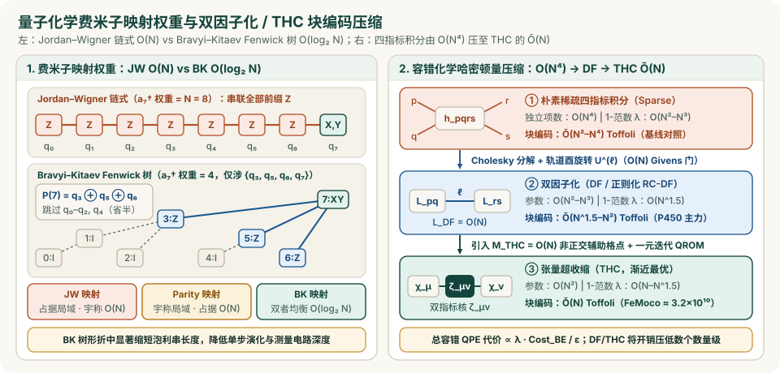
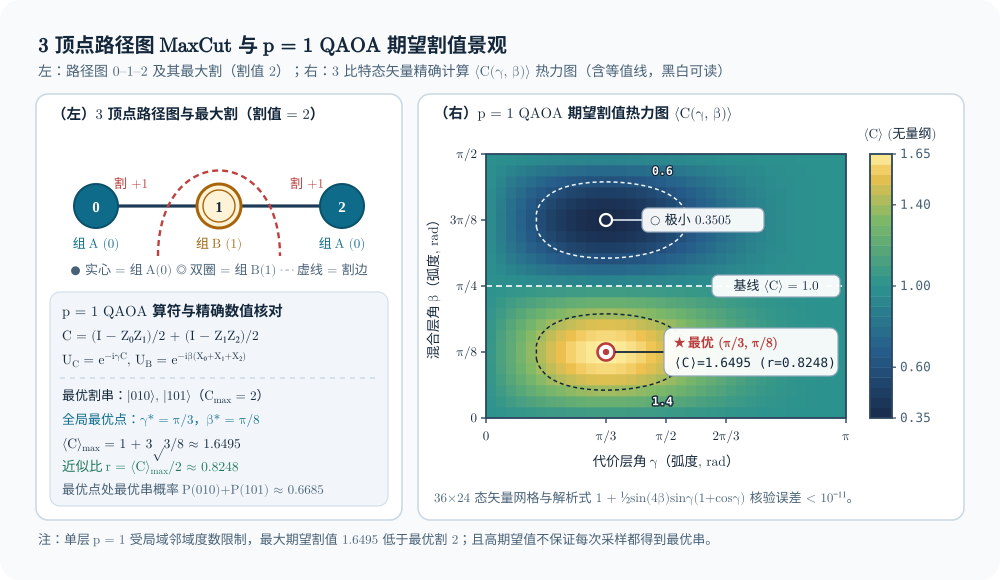
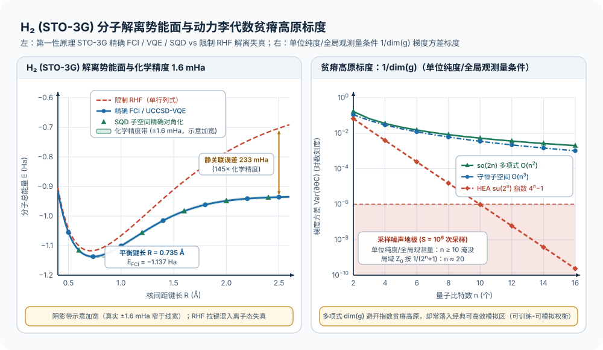

08｜应用、变分算法与证据边界
走到应用这一章，初学者最容易遇到一个诱人的错觉：只要某个化学分子、图优化问题或金融模型“可以写成量子线路”，似乎就离“量子计算超越超级计算机”不远了。其实，把问题翻译成量子比特语言只是第一步；能不能拿到准确答案、要重复测量多少次、数据怎么装进芯片、比当下最强的经典算法快多少，才是决定一项应用能否站住脚的真正门槛。
读第 07 章 的哈密顿量模拟，可回顾怎样把哈密顿量拆成 Pauli 项。读本章的金融算例时，还可翻回该章的幅度估计作为对照。估算抽样误差时，按需查第 15 章第 3 节 。
本章覆盖近中期与早期容错阶段最受关注的五条应用主线：VQE 与量子化学 、QAOA / DQI 与组合优化 、量子机器学习与贫瘠高原 、量子金融与幅度估计 ，以及误差缓解（QEM）与实用量子优势评测 （除非另有定理证明，VQE、QAOA 与多数 QML 均属启发式混合算法；本章统一用 ε \varepsilon ε
首遍主干（★ 必读） ：第 1 节、第 2.1–2.5 节、第 3.1–3.3 节、第 4.1–4.3 / 4.5 节、第 5.1–5.3 节、第 6 节、第 7.1–7.2 / 7.4 节与第 8 节。进阶选读（☆ 首遍可跳过） ：标有 进阶选读： 的第 2.6 节（QNG）、第 3.4 节（SQD 与 DF/THC 压缩）、第 4.4 节（三角形通用公式与 DQI）、第 5.4 节（DLA 统一理论）与第 7.3 节（PEC 准概率）。
动手前记住两条贯穿全章的标尺：目标期望高 ≠ \neq = ；理论查询少 ≠ \neq = 。
1. 变分量子算法的骨架：浅线路背后的采样总账
先把五条应用主线“要交付什么、该和谁公平对比”钉在桌面上：
第 07 章介绍的 Shor 算法和量子相位估计（QPE）虽然理论加速清晰，但往往需要数千到数百万层深度、并且要求中途不能频繁出错。在尚未建成大规模容错量子计算机的阶段，芯片每次只能可靠地跑几十到上百层门，深线路跑完后量子态早就被噪声抹平了。
面对“线路不能太深”的现实，研究者想出了一个分工折中：让量子芯片只负责运行一段较短的可调参数线路 U ( θ ) U(\boldsymbol\theta) U ( θ ) 试探态（ansatz） ∣ ψ ( θ ) ⟩ = U ( θ ) ∣ 0 ⋯ 0 ⟩ |\psi(\boldsymbol\theta)\rangle = U(\boldsymbol\theta)|0\cdots 0\rangle ∣ ψ ( θ )⟩ = U ( θ ) ∣0 ⋯ 0 ⟩ θ \boldsymbol\theta θ 变分量子算法（variational quantum algorithm, VQA） 。这里的英文 ansatz 只是物理与数学里“试探函数族”的惯称，并不代表它天然包含真实答案。
整个循环的结构如下：
图 1｜变分算法中量子测量与经典参数更新的循环 · 横向较长时可在图内滚动 · 打开完整图 每运行一次线路并读出一个比特串，实验上称为一次 shot （下文常称一次“重复测量”或一次采样）。经典优化器拿到的不是数学上光滑精确的目标函数 C ( θ ) C(\boldsymbol\theta) C ( θ ) C ^ ( θ ) \widehat C(\boldsymbol\theta) C ( θ )
初学者最容易低估的，是这台“短线路循环机”背后真正的总运行次数。如果每次评估都在 G G G S g S_g S g N e v a l N_{\mathrm{eval}} N eval M Q E M M_{\mathrm{QEM}} M QEM
N s h o t s ≈ N e v a l × ( ∑ g = 1 G S g ) × M Q E M .
N_{\mathrm{shots}} \approx N_{\mathrm{eval}} \times \left(\sum_{g=1}^{G} S_g\right) \times M_{\mathrm{QEM}}.
N shots ≈ N eval × ( g = 1 ∑ G S g ) × M QEM . 在这个数字之外，真实墙钟时间还要加上线路编译、经典与量子控制器通信、任务排队以及经典侧优化计算。因此，“单条线路很浅”绝不等于“拿到最终答案很便宜”。接下来我们先深入拆解变分算法里最具代表性的成员——VQE。
2. 变分量子本征求解器（VQE）：从单比特手算、测量统计到自然梯度
2.1 哈密顿量分解与变分原理
在量子力学与量子化学里，系统的能量由一个厄米矩阵——哈密顿量（Hamiltonian） ——描述，记作 H H H n n n 2 n × 2 n 2^n \times 2^n 2 n × 2 n 2 n × 2 n 2^n \times 2^n 2 n × 2 n H H H Pauli 串 的实系数线性组合（本节 M M M
H = ∑ j = 1 M c j P j , c j ∈ R , P j ∈ { I , X , Y , Z } ⊗ n .
H = \sum_{j=1}^{M} c_j P_j, \qquad c_j \in \mathbb{R}, \quad P_j \in \{I, X, Y, Z\}^{\otimes n}.
H = j = 1 ∑ M c j P j , c j ∈ R , P j ∈ { I , X , Y , Z } ⊗ n . 每个 c j c_j c j c 0 I c_0 I c 0 I ⟨ I ⟩ = 1 \langle I\rangle = 1 ⟨ I ⟩ = 1 P j P_j P j + 1 +1 + 1 − 1 -1 − 1 ± 1 \pm 1 ± 1
E ( θ ) = ⟨ ψ ( θ ) ∣ H ∣ ψ ( θ ) ⟩ = ∑ j = 1 M c j ⟨ ψ ( θ ) ∣ P j ∣ ψ ( θ ) ⟩ .
E(\boldsymbol\theta) = \langle\psi(\boldsymbol\theta)|H|\psi(\boldsymbol\theta)\rangle = \sum_{j=1}^{M} c_j \langle\psi(\boldsymbol\theta)|P_j|\psi(\boldsymbol\theta)\rangle.
E ( θ ) = ⟨ ψ ( θ ) ∣ H ∣ ψ ( θ )⟩ = j = 1 ∑ M c j ⟨ ψ ( θ ) ∣ P j ∣ ψ ( θ )⟩ . 为什么要把 E ( θ ) E(\boldsymbol\theta) E ( θ ) 变分原理（Rayleigh–Ritz 变分原理） 。设厄米矩阵 H H H ∣ E 0 ⟩ , ∣ E 1 ⟩ , … , ∣ E 2 n − 1 ⟩ |E_0\rangle, |E_1\rangle, \dots, |E_{2^n-1}\rangle ∣ E 0 ⟩ , ∣ E 1 ⟩ , … , ∣ E 2 n − 1 ⟩ E 0 ≤ E 1 ≤ ⋯ ≤ E 2 n − 1 E_0 \le E_1 \le \cdots \le E_{2^n-1} E 0 ≤ E 1 ≤ ⋯ ≤ E 2 n − 1 E 0 E_0 E 0 ∣ ψ ( θ ) ⟩ |\psi(\boldsymbol\theta)\rangle ∣ ψ ( θ )⟩
∣ ψ ( θ ) ⟩ = ∑ k = 0 2 n − 1 d k ∣ E k ⟩ , ∑ k = 0 2 n − 1 ∣ d k ∣ 2 = 1.
|\psi(\boldsymbol\theta)\rangle = \sum_{k=0}^{2^n-1} d_k |E_k\rangle, \qquad \sum_{k=0}^{2^n-1} |d_k|^2 = 1.
∣ ψ ( θ )⟩ = k = 0 ∑ 2 n − 1 d k ∣ E k ⟩ , k = 0 ∑ 2 n − 1 ∣ d k ∣ 2 = 1. 把它代入精确期望值，一步步展开（利用线性、本征方程 H ∣ E k ⟩ = E k ∣ E k ⟩ H|E_k\rangle = E_k|E_k\rangle H ∣ E k ⟩ = E k ∣ E k ⟩ ⟨ E j ∣ E k ⟩ = δ j k \langle E_j|E_k\rangle = \delta_{jk} ⟨ E j ∣ E k ⟩ = δ jk
E ( θ ) = ( ∑ j d j ∗ ⟨ E j ∣ ) H ( ∑ k d k ∣ E k ⟩ ) = ∑ j , k d j ∗ d k ⟨ E j ∣ H ∣ E k ⟩ = ∑ j , k d j ∗ d k E k ⟨ E j ∣ E k ⟩ = ∑ k ∣ d k ∣ 2 E k ≥ ∑ k ∣ d k ∣ 2 E 0 = E 0 .
\begin{aligned}
E(\boldsymbol\theta)
&= \left(\sum_{j} d_j^* \langle E_j|\right) H \left(\sum_{k} d_k |E_k\rangle\right) \\
&= \sum_{j,k} d_j^* d_k \, \langle E_j|H|E_k\rangle \\
&= \sum_{j,k} d_j^* d_k E_k \, \langle E_j|E_k\rangle \\
&= \sum_{k} |d_k|^2 E_k \\
&\ge \sum_{k} |d_k|^2 E_0 = E_0.
\end{aligned}
E ( θ ) = ( j ∑ d j ∗ ⟨ E j ∣ ) H ( k ∑ d k ∣ E k ⟩ ) = j , k ∑ d j ∗ d k ⟨ E j ∣ H ∣ E k ⟩ = j , k ∑ d j ∗ d k E k ⟨ E j ∣ E k ⟩ = k ∑ ∣ d k ∣ 2 E k ≥ k ∑ ∣ d k ∣ 2 E 0 = E 0 . 对于任意合法的密度矩阵 ρ = ∑ m p m ∣ ϕ m ⟩ ⟨ ϕ m ∣ \rho = \sum_m p_m |\phi_m\rangle\langle\phi_m| ρ = ∑ m p m ∣ ϕ m ⟩ ⟨ ϕ m ∣ p m ≥ 0 , ∑ m p m = 1 p_m \ge 0, \sum_m p_m = 1 p m ≥ 0 , ∑ m p m = 1 Tr ( H ρ ) = ∑ m p m ⟨ ϕ m ∣ H ∣ ϕ m ⟩ ≥ E 0 \operatorname{Tr}(H\rho) = \sum_m p_m \langle\phi_m|H|\phi_m\rangle \ge E_0 Tr ( H ρ ) = ∑ m p m ⟨ ϕ m ∣ H ∣ ϕ m ⟩ ≥ E 0
但必须看清变分原理的精确适用条件 ：它只约束同一个精确模型哈密顿量 在合法归一化物理态 上的精确数学期望 。它并没有向我们保证下面五件事中的任何一件：
所选试探态族 ∣ ψ ( θ ) ⟩ |\psi(\boldsymbol\theta)\rangle ∣ ψ ( θ )⟩ ∣ E 0 ⟩ |E_0\rangle ∣ E 0 ⟩
经典优化器一定能跨过局部极小、找到全局最低点；
有限次重复测量算出来的样本均值一定不低于 E 0 E_0 E 0
经过有偏读出校正或外推误差缓解后的报告值仍保持上界；
整个变分流程比最佳经典求解器更快。
2.2 单比特完整手算：H = 0.7 Z + 0.2 X H = 0.7Z + 0.2X H = 0.7 Z + 0.2 X
让我们用最简单的一维非对角模型，把 VQE 的每一步拆到纸面上算透。取单比特哈密顿量（系数取同一无量纲或任意能量单位）和单参数试探态：
H = 0.7 Z + 0.2 X = ( 0.7 0.2 0.2 − 0.7 ) , ∣ ψ ( θ ) ⟩ = R y ( θ ) ∣ 0 ⟩ , θ ∈ R .
H = 0.7 Z + 0.2 X = \begin{pmatrix} 0.7 & 0.2 \\ 0.2 & -0.7 \end{pmatrix}, \qquad |\psi(\theta)\rangle = R_y(\theta)|0\rangle, \quad \theta \in \mathbb{R}.
H = 0.7 Z + 0.2 X = ( 0.7 0.2 0.2 − 0.7 ) , ∣ ψ ( θ )⟩ = R y ( θ ) ∣0 ⟩ , θ ∈ R . 回忆第 02 章的旋转门定义 R y ( θ ) = cos θ 2 I − i sin θ 2 Y = ( cos θ 2 − sin θ 2 sin θ 2 cos θ 2 ) R_y(\theta) = \cos\frac{\theta}{2}\,I - i\sin\frac{\theta}{2}\,Y = \begin{pmatrix}\cos\frac{\theta}{2} & -\sin\frac{\theta}{2} \\ \sin\frac{\theta}{2} & \cos\frac{\theta}{2}\end{pmatrix} R y ( θ ) = cos 2 θ I − i sin 2 θ Y = ( cos 2 θ sin 2 θ − sin 2 θ cos 2 θ ) ∣ 0 ⟩ = [ 1 , 0 ] T |0\rangle = [1,0]^T ∣0 ⟩ = [ 1 , 0 ] T
∣ ψ ( θ ) ⟩ = cos θ 2 ∣ 0 ⟩ + sin θ 2 ∣ 1 ⟩ = ( cos θ 2 sin θ 2 ) .
|\psi(\theta)\rangle = \cos\frac{\theta}{2}|0\rangle + \sin\frac{\theta}{2}|1\rangle = \begin{pmatrix} \cos\frac{\theta}{2} \\ \sin\frac{\theta}{2} \end{pmatrix}.
∣ ψ ( θ )⟩ = cos 2 θ ∣0 ⟩ + sin 2 θ ∣1 ⟩ = ( cos 2 θ sin 2 θ ) . 检查归一化：cos 2 θ 2 + sin 2 θ 2 = 1 \cos^2\frac{\theta}{2} + \sin^2\frac{\theta}{2} = 1 cos 2 2 θ + sin 2 2 θ = 1
⟨ Z ⟩ θ = ( cos θ 2 sin θ 2 ) ( 1 0 0 − 1 ) ( cos θ 2 sin θ 2 ) = cos 2 θ 2 − sin 2 θ 2 = cos θ , ⟨ X ⟩ θ = ( cos θ 2 sin θ 2 ) ( 0 1 1 0 ) ( cos θ 2 sin θ 2 ) = 2 sin θ 2 cos θ 2 = sin θ .
\begin{aligned}
\langle Z\rangle_\theta
&= \begin{pmatrix}\cos\frac{\theta}{2} & \sin\frac{\theta}{2}\end{pmatrix}
\begin{pmatrix}1 & 0 \\ 0 & -1\end{pmatrix}
\begin{pmatrix}\cos\frac{\theta}{2} \\ \sin\frac{\theta}{2}\end{pmatrix}
= \cos^2\frac{\theta}{2} - \sin^2\frac{\theta}{2} = \cos\theta, \\
\langle X\rangle_\theta
&= \begin{pmatrix}\cos\frac{\theta}{2} & \sin\frac{\theta}{2}\end{pmatrix}
\begin{pmatrix}0 & 1 \\ 1 & 0\end{pmatrix}
\begin{pmatrix}\cos\frac{\theta}{2} \\ \sin\frac{\theta}{2}\end{pmatrix}
= 2\sin\frac{\theta}{2}\cos\frac{\theta}{2} = \sin\theta.
\end{aligned}
⟨ Z ⟩ θ ⟨ X ⟩ θ = ( cos 2 θ sin 2 θ ) ( 1 0 0 − 1 ) ( cos 2 θ sin 2 θ ) = cos 2 2 θ − sin 2 2 θ = cos θ , = ( cos 2 θ sin 2 θ ) ( 0 1 1 0 ) ( cos 2 θ sin 2 θ ) = 2 sin 2 θ cos 2 θ = sin θ . 把两项按权重拼起来，得到精确能量函数并用辅助角公式合成为单个余弦：
E ( θ ) = 0.7 cos θ + 0.2 sin θ = 0.7 2 + 0.2 2 cos ( θ − δ ) = 0.53 cos ( θ − δ ) ,
E(\theta) = 0.7\cos\theta + 0.2\sin\theta = \sqrt{0.7^2 + 0.2^2}\cos(\theta - \delta) = \sqrt{0.53}\cos(\theta - \delta),
E ( θ ) = 0.7 cos θ + 0.2 sin θ = 0. 7 2 + 0. 2 2 cos ( θ − δ ) = 0.53 cos ( θ − δ ) , 其中 cos δ = 0.7 0.53 \cos\delta = \frac{0.7}{\sqrt{0.53}} cos δ = 0.53 0.7 sin δ = 0.2 0.53 \sin\delta = \frac{0.2}{\sqrt{0.53}} sin δ = 0.53 0.2 δ = arctan 2 7 ≈ 0.2783 r a d \delta = \arctan\frac{2}{7} \approx 0.2783\,\mathrm{rad} δ = arctan 7 2 ≈ 0.2783 rad cos ( θ − δ ) = − 1 \cos(\theta - \delta) = -1 cos ( θ − δ ) = − 1 θ ∗ = δ + π ≈ 3.4199 r a d \theta^* = \delta + \pi \approx 3.4199\,\mathrm{rad} θ ∗ = δ + π ≈ 3.4199 rad
E min = − 0.53 ≈ − 0.728011.
E_{\min} = -\sqrt{0.53} \approx -0.728011.
E m i n = − 0.53 ≈ − 0.728011. 用独立方法回验一下这个基态能量。因为 Z 2 = X 2 = I Z^2 = X^2 = I Z 2 = X 2 = I Z X + X Z = 0 ZX + XZ = 0 ZX + XZ = 0 H H H
H 2 = ( 0.7 Z + 0.2 X ) 2 = 0.49 Z 2 + 0.04 X 2 + 0.14 ( Z X + X Z ) = 0.53 I .
H^2 = (0.7Z + 0.2X)^2 = 0.49 Z^2 + 0.04 X^2 + 0.14(ZX + XZ) = 0.53 I.
H 2 = ( 0.7 Z + 0.2 X ) 2 = 0.49 Z 2 + 0.04 X 2 + 0.14 ( ZX + XZ ) = 0.53 I . 矩阵 H H H 0.53 0.53 0.53 ± 0.53 \pm\sqrt{0.53} ± 0.53 Tr ( H ) = 0.7 + ( − 0.7 ) = 0 \operatorname{Tr}(H) = 0.7 + (-0.7) = 0 Tr ( H ) = 0.7 + ( − 0.7 ) = 0 E 0 = − 0.53 E_0 = -\sqrt{0.53} E 0 = − 0.53 R y ( θ ) ∣ 0 ⟩ R_y(\theta)|0\rangle R y ( θ ) ∣0 ⟩ H H H
在实验上怎么测这两项？因为 Z Z Z X X X θ \theta θ
第一批直接在计算基测量：读到 0 记作 Z = + 1 Z = +1 Z = + 1 1 记作 Z = − 1 Z = -1 Z = − 1
第二批先过一个 Hadamard 门再测计算基（因为 H g a t e X H g a t e = Z H_{\mathrm{gate}} X H_{\mathrm{gate}} = Z H gate X H gate = Z 切换测量基 ）：读到 0 记作原态的 X = + 1 X = +1 X = + 1 1 记作原态的 X = − 1 X = -1 X = − 1
先拿两个一目了然的特殊角度做程序自检：
注意表中的“平均约 50/50”是大量重复下的期望分布，实际跑 100 次很可能出现 47/53 或 54/46，不能把期望计数当成每批必得计数。同时，哪怕把两个点里较低的 E ( π / 2 ) = 0.2 E(\pi/2) = 0.2 E ( π /2 ) = 0.2 − 0.728 -0.728 − 0.728
现在来看一个初学者最容易吃惊的现象：实验测出的“变分能量”可以比真实基态能量还要低 ！假设芯片已经毫无误差地制备出了精确基态 ∣ ψ ( θ ∗ ) ⟩ |\psi(\theta^*)\rangle ∣ ψ ( θ ∗ )⟩ ⟨ Z ⟩ = − 0.7 / 0.53 ≈ − 0.9615 \langle Z\rangle = -0.7/\sqrt{0.53} \approx -0.9615 ⟨ Z ⟩ = − 0.7/ 0.53 ≈ − 0.9615 ⟨ X ⟩ = − 0.2 / 0.53 ≈ − 0.2747 \langle X\rangle = -0.2/\sqrt{0.53} \approx -0.2747 ⟨ X ⟩ = − 0.2/ 0.53 ≈ − 0.2747 Z Z Z X X X
测 Z Z Z − 1 -1 − 1 1 − ⟨ Z ⟩ 2 = 1 + 0.7 / 0.53 2 ≈ 0.9808 \frac{1 - \langle Z\rangle}{2} = \frac{1 + 0.7/\sqrt{0.53}}{2} \approx 0.9808 2 1 − ⟨ Z ⟩ = 2 1 + 0.7/ 0.53 ≈ 0.9808
测 X X X − 1 -1 − 1 1 − ⟨ X ⟩ 2 = 1 + 0.2 / 0.53 2 ≈ 0.6374 \frac{1 - \langle X\rangle}{2} = \frac{1 + 0.2/\sqrt{0.53}}{2} \approx 0.6374 2 1 − ⟨ X ⟩ = 2 1 + 0.2/ 0.53 ≈ 0.6374
两次同时读到 − 1 -1 − 1 0.9808 × 0.6374 ≈ 0.6251 0.9808 \times 0.6374 \approx 0.6251 0.9808 × 0.6374 ≈ 0.6251
E ^ = 0.7 × ( − 1 ) + 0.2 × ( − 1 ) = − 0.9 < − 0.53 ≈ − 0.728.
\widehat E = 0.7 \times (-1) + 0.2 \times (-1) = -0.9 < -\sqrt{0.53} \approx -0.728.
E = 0.7 × ( − 1 ) + 0.2 × ( − 1 ) = − 0.9 < − 0.53 ≈ − 0.728. 这当然不是打破了变分原理，也没有变出什么能量更低的物理态，只是因为有限样本的加权估计不能代替精确期望值 。所以，报告任何变分能量时都必须同时附上测量次数与统计不确定度区间，而不能把一次偶然偏低的样本数当作更紧的物理上界。
2.3 样本分配与有限样本保证：为什么 7 : 2 7:2 7 : 2 7780 7780 7780 14940 14940 14940
为了把统计波动压下来，我们需要多少次重复测量？对任意单次取值为 ± 1 \pm 1 ± 1 P P P P 2 = 1 P^2 = 1 P 2 = 1 μ = ⟨ P ⟩ ∈ [ − 1 , 1 ] \mu = \langle P\rangle \in [-1, 1] μ = ⟨ P ⟩ ∈ [ − 1 , 1 ] Var ( P ) = E [ P 2 ] − μ 2 = 1 − μ 2 ≤ 1 \operatorname{Var}(P) = \mathbb{E}[P^2] - \mu^2 = 1 - \mu^2 \le 1 Var ( P ) = E [ P 2 ] − μ 2 = 1 − μ 2 ≤ 1 S S S ⟨ P ⟩ ^ \widehat{\langle P\rangle} ⟨ P ⟩ 1 / S 1/S 1/ S
Std ( ⟨ P ⟩ ^ ) = 1 − ⟨ P ⟩ 2 S ≤ 1 S .
\operatorname{Std}\!\left(\widehat{\langle P\rangle}\right) = \sqrt{\frac{1 - \langle P\rangle^2}{S}} \le \frac{1}{\sqrt{S}}.
Std ( ⟨ P ⟩ ) = S 1 − ⟨ P ⟩ 2 ≤ S 1 . 这个 1 / S 1/\sqrt{S} 1/ S
回到 H = 0.7 Z + 0.2 X H = 0.7Z + 0.2X H = 0.7 Z + 0.2 X Z Z Z X X X S Z S_Z S Z S X S_X S X S = S Z + S X S = S_Z + S_X S = S Z + S X E ^ = 0.7 ⟨ Z ⟩ ^ + 0.2 ⟨ X ⟩ ^ \widehat E = 0.7\widehat{\langle Z\rangle} + 0.2\widehat{\langle X\rangle} E = 0.7 ⟨ Z ⟩ + 0.2 ⟨ X ⟩
Var ( E ^ ) = 0.7 2 ( 1 − ⟨ Z ⟩ 2 ) S Z + 0.2 2 ( 1 − ⟨ X ⟩ 2 ) S X ≤ 0.49 S Z + 0.04 S X .
\operatorname{Var}(\widehat E) = \frac{0.7^2(1 - \langle Z\rangle^2)}{S_Z} + \frac{0.2^2(1 - \langle X\rangle^2)}{S_X} \le \frac{0.49}{S_Z} + \frac{0.04}{S_X}.
Var ( E ) = S Z 0. 7 2 ( 1 − ⟨ Z ⟩ 2 ) + S X 0. 2 2 ( 1 − ⟨ X ⟩ 2 ) ≤ S Z 0.49 + S X 0.04 . 直觉上，Z Z Z 0.7 0.7 0.7 X X X 0.2 0.2 0.2 z = S Z z = S_Z z = S Z 0 < z < S 0 < z < S 0 < z < S
f ( z ) = 0.49 z + 0.04 S − z .
f(z) = \frac{0.49}{z} + \frac{0.04}{S - z}.
f ( z ) = z 0.49 + S − z 0.04 . 求一阶导数并令其等于零：
f ′ ( z ) = − 0.49 z 2 + 0.04 ( S − z ) 2 = 0 ⟹ ( z S − z ) 2 = 0.49 0.04 ⟹ z S − z = 0.7 0.2 = 7 2 .
f'(z) = -\frac{0.49}{z^2} + \frac{0.04}{(S - z)^2} = 0
\quad\Longrightarrow\quad
\left(\frac{z}{S - z}\right)^2 = \frac{0.49}{0.04}
\quad\Longrightarrow\quad
\frac{z}{S - z} = \frac{0.7}{0.2} = \frac{7}{2}.
f ′ ( z ) = − z 2 0.49 + ( S − z ) 2 0.04 = 0 ⟹ ( S − z z ) 2 = 0.04 0.49 ⟹ S − z z = 0.2 0.7 = 2 7 . 核查二阶导数 f ′ ′ ( z ) = 0.98 z 3 + 0.08 ( S − z ) 3 > 0 f''(z) = \frac{0.98}{z^3} + \frac{0.08}{(S - z)^3} > 0 f ′′ ( z ) = z 3 0.98 + ( S − z ) 3 0.08 > 0 S Z = 7 9 S S_Z = \frac{7}{9}S S Z = 9 7 S S X = 2 9 S S_X = \frac{2}{9}S S X = 9 2 S
Var ( E ^ ) ≤ 0.49 7 9 S + 0.04 2 9 S = 0.63 + 0.18 S = 0.81 S = ( 0.7 + 0.2 ) 2 S .
\operatorname{Var}(\widehat E) \le \frac{0.49}{\frac{7}{9}S} + \frac{0.04}{\frac{2}{9}S} = \frac{0.63 + 0.18}{S} = \frac{0.81}{S} = \frac{(0.7 + 0.2)^2}{S}.
Var ( E ) ≤ 9 7 S 0.49 + 9 2 S 0.04 = S 0.63 + 0.18 = S 0.81 = S ( 0.7 + 0.2 ) 2 . 推广到任意独立测量的 H = ∑ j c j P j H = \sum_j c_j P_j H = ∑ j c j P j S j ∝ ∣ c j ∣ S_j \propto |c_j| S j ∝ ∣ c j ∣ ( ∑ j ∣ c j ∣ ) 2 / S \left(\sum_j |c_j|\right)^2 / S ( ∑ j ∣ c j ∣ ) 2 / S ℓ 1 \ell_1 ℓ 1
现在给一个具体目标：在某个预先固定的参数点 上，希望统计误差半宽不超过 ε = 0.02 \varepsilon = 0.02 ε = 0.02 δ = 0.05 \delta = 0.05 δ = 0.05
正态近似规划数（约 7,780 次） ：用中心极限定理近似，令 95% 半宽 1.96 × 0.9 S ≤ 0.02 1.96 \times \frac{0.9}{\sqrt{S}} \le 0.02 1.96 × S 0.9 ≤ 0.02 S ≥ ( 1.96 × 45 ) 2 = 7779.24 S \ge (1.96 \times 45)^2 = 7779.24 S ≥ ( 1.96 × 45 ) 2 = 7779.24 S = 7780 S = 7780 S = 7780 7 : 2 7:2 7 : 2 S Z = 6051 , S X = 1729 S_Z = 6051, S_X = 1729 S Z = 6051 , S X = 1729 1.96 0.49 / 6051 + 0.04 / 1729 ≈ 0.019999 < 0.02 1.96\sqrt{0.49/6051 + 0.04/1729} \approx 0.019999 < 0.02 1.96 0.49/6051 + 0.04/1729 ≈ 0.019999 < 0.02 S Z = S X = S / 2 S_Z = S_X = S/2 S Z = S X = S /2 2 ( 0.49 + 0.04 ) S = 1.06 S \frac{2(0.49+0.04)}{S} = \frac{1.06}{S} S 2 ( 0.49 + 0.04 ) = S 1.06 10,181 次 （若要求 S Z = S X S_Z = S_X S Z = S X S = 10,182 S = 10{,}182 S = 10 , 182 5,091 5{,}091 5 , 091
严格有限样本保证（Hoeffding 界，14,940 次） ：正态近似只在大样本渐近意义下成立。若要不依赖未知真实方差、在有限样本下严格控制尾概率，可以直接使用 Hoeffding 不等式。把估计量写成全部 S Z + S X S_Z + S_X S Z + S X
E ^ = ∑ i = 1 S Z 0.7 S Z Z i + ∑ j = 1 S X 0.2 S X X j , Z i , X j ∈ { − 1 , + 1 } .
\widehat E = \sum_{i=1}^{S_Z} \frac{0.7}{S_Z} Z_i + \sum_{j=1}^{S_X} \frac{0.2}{S_X} X_j, \qquad Z_i, X_j \in \{-1, +1\}.
E = i = 1 ∑ S Z S Z 0.7 Z i + j = 1 ∑ S X S X 0.2 X j , Z i , X j ∈ { − 1 , + 1 } . 每个 Z Z Z 0.7 S Z − ( − 0.7 S Z ) = 1.4 S Z \frac{0.7}{S_Z} - \left(-\frac{0.7}{S_Z}\right) = \frac{1.4}{S_Z} S Z 0.7 − ( − S Z 0.7 ) = S Z 1.4 X X X 0.4 S X \frac{0.4}{S_X} S X 0.4
∑ ( b k − a k ) 2 = S Z ( 1.4 S Z ) 2 + S X ( 0.4 S X ) 2 = 4 ( 0.49 S Z + 0.04 S X ) .
\sum (b_k - a_k)^2 = S_Z \left(\frac{1.4}{S_Z}\right)^2 + S_X \left(\frac{0.4}{S_X}\right)^2 = 4\left(\frac{0.49}{S_Z} + \frac{0.04}{S_X}\right).
∑ ( b k − a k ) 2 = S Z ( S Z 1.4 ) 2 + S X ( S X 0.4 ) 2 = 4 ( S Z 0.49 + S X 0.04 ) . 代入 Hoeffding 双侧尾界 Pr ( ∣ E ^ − E ∣ ≥ ε ) ≤ 2 exp ( − 2 ε 2 ∑ ( b k − a k ) 2 ) \Pr(|\widehat E - E| \ge \varepsilon) \le 2\exp\!\left(-\frac{2\varepsilon^2}{\sum(b_k-a_k)^2}\right) Pr ( ∣ E − E ∣ ≥ ε ) ≤ 2 exp ( − ∑ ( b k − a k ) 2 2 ε 2 )
Pr ( ∣ E ^ − E ∣ ≥ ε ) ≤ 2 exp [ − ε 2 2 ( 0.49 S Z + 0.04 S X ) ] .
\Pr(|\widehat E - E| \ge \varepsilon) \le 2\exp\!\left[-\frac{\varepsilon^2}{2\left(\frac{0.49}{S_Z} + \frac{0.04}{S_X}\right)}\right].
Pr ( ∣ E − E ∣ ≥ ε ) ≤ 2 exp − 2 ( S Z 0.49 + S X 0.04 ) ε 2 . 令右边不超过 δ = 0.05 \delta = 0.05 δ = 0.05 ln \ln ln
b = 2 ( 0.49 S Z + 0.04 S X ) ln 2 δ .
b = \sqrt{2\left(\frac{0.49}{S_Z} + \frac{0.04}{S_X}\right)\ln\frac{2}{\delta}}.
b = 2 ( S Z 0.49 + S X 0.04 ) ln δ 2 . 仍按 7 : 2 7:2 7 : 2 0.81 / S 0.81/S 0.81/ S ε = 0.02 , δ = 0.05 \varepsilon = 0.02, \delta = 0.05 ε = 0.02 , δ = 0.05 ln 40 ≈ 3.688879 \ln 40 \approx 3.688879 ln 40 ≈ 3.688879 S ≥ 2 × 0.81 × ln 40 0.0004 ≈ 14939.96 S \ge \frac{2 \times 0.81 \times \ln 40}{0.0004} \approx 14939.96 S ≥ 0.0004 2 × 0.81 × l n 40 ≈ 14939.96 S Z = 11620 , S X = 3320 S_Z = 11620, S_X = 3320 S Z = 11620 , S X = 3320 S = 14940 S = 14940 S = 14940 b ≈ 0.01999997 < 0.02 b \approx 0.01999997 < 0.02 b ≈ 0.01999997 < 0.02
7,780 和 14,940 并不矛盾：前者是规划用的大样本近似，后者是零分布假设的严格上界。更重要的是，这两个数字都只针对预先定死的单个参数点 。如果经典优化器已经扫描过几百个参数点、然后专挑其中测得最低的一个拿来汇报，挑出来的点天然带着“挑便宜”的选择偏差；稳妥做法是在优化结束后锁死最终参数，另开一批独立新样本做最终验收（若要同时给预先选定的 K K K δ / K \delta/K δ / K ln K \ln K ln K
2.4 共测分组、协方差账本与“测量路障”
真实分子的哈密顿量动辄有几千上万个 Pauli 项，如果每项都单独跑线路，采样早就爆炸了。于是人们自然想到：能不能把可以同时测量的 Pauli 项编成一组，共测一次读出多项？
可以，但分组之后立刻会出现一个容易误算的统计量——组内协方差 。先看最简单的两比特共测：Z 1 Z_1 Z 1 Z 2 Z_2 Z 2 z 1 , z 2 ∈ { + 1 , − 1 } z_1, z_2 \in \{+1, -1\} z 1 , z 2 ∈ { + 1 , − 1 } e = c 1 z 1 + c 2 z 2 e = c_1 z_1 + c_2 z_2 e = c 1 z 1 + c 2 z 2
Var ( e ) = c 1 2 Var ( z 1 ) + c 2 2 Var ( z 2 ) + 2 c 1 c 2 Cov ( z 1 , z 2 ) ,
\operatorname{Var}(e) = c_1^2 \operatorname{Var}(z_1) + c_2^2 \operatorname{Var}(z_2) + 2 c_1 c_2 \operatorname{Cov}(z_1, z_2),
Var ( e ) = c 1 2 Var ( z 1 ) + c 2 2 Var ( z 2 ) + 2 c 1 c 2 Cov ( z 1 , z 2 ) , 其中 Cov ( z 1 , z 2 ) = E [ z 1 z 2 ] − E [ z 1 ] E [ z 2 ] \operatorname{Cov}(z_1, z_2) = \mathbb{E}[z_1 z_2] - \mathbb{E}[z_1]\mathbb{E}[z_2] Cov ( z 1 , z 2 ) = E [ z 1 z 2 ] − E [ z 1 ] E [ z 2 ] S S S S S S 同一次测量里读出的 z 1 z_1 z 1 z 2 z_2 z 2 。
拿第 03 章熟悉的 Bell 态 ∣ Φ + ⟩ = 1 2 ( ∣ 00 ⟩ + ∣ 11 ⟩ ) |\Phi^+\rangle = \frac{1}{\sqrt{2}}(|00\rangle + |11\rangle) ∣ Φ + ⟩ = 2 1 ( ∣00 ⟩ + ∣11 ⟩) H + = Z 1 + Z 2 H_+ = Z_1 + Z_2 H + = Z 1 + Z 2 H − = Z 1 − Z 2 H_- = Z_1 - Z_2 H − = Z 1 − Z 2 00（概率 1 / 2 1/2 1/2 z 1 = z 2 = + 1 z_1=z_2=+1 z 1 = z 2 = + 1 11（概率 1 / 2 1/2 1/2 z 1 = z 2 = − 1 z_1=z_2=-1 z 1 = z 2 = − 1 E [ z 1 ] = E [ z 2 ] = 0 \mathbb{E}[z_1]=\mathbb{E}[z_2]=0 E [ z 1 ] = E [ z 2 ] = 0 Var ( z 1 ) = Var ( z 2 ) = 1 \operatorname{Var}(z_1)=\operatorname{Var}(z_2)=1 Var ( z 1 ) = Var ( z 2 ) = 1 Cov ( z 1 , z 2 ) = E [ z 1 z 2 ] − 0 = + 1 \operatorname{Cov}(z_1,z_2)=\mathbb{E}[z_1 z_2] - 0 = +1 Cov ( z 1 , z 2 ) = E [ z 1 z 2 ] − 0 = + 1 S S S S / 2 S/2 S /2 S S S
这张小表揭示了两个非常反直觉的事实：
对 H + H_+ H + S S S 4 / S 4/S 4/ S
对 H − H_- H −
由此还引出一条实验记录铁律：必须保存原始配对位串计数，绝不能只存单比特边缘统计 。假设你在某批 100 次采样里测得 00 60 次、11 40 次：两位均值都是 ( 60 − 40 ) / 100 = 0.2 (60-40)/100 = 0.2 ( 60 − 40 ) /100 = 0.2 H + H_+ H + 0.4 0.4 0.4 H − H_- H − 0 0 0 0 0 0 00: 20、01: 40、10: 40、11: 0，拆开单看第一位和第二位同样都是 60 次 0、40 次 1（边缘统计完全一模一样！），但 H − = z 1 − z 2 H_- = z_1 - z_2 H − = z 1 − z 2 01 上取 + 2 +2 + 2 10 上取 − 2 -2 − 2 ( 40 × 4 + 40 × 4 ) / 100 = 3.2 (40\times 4 + 40\times 4)/100 = 3.2 ( 40 × 4 + 40 × 4 ) /100 = 3.2 0 0 0 n = 100 n=100 n = 100 3.2 3.2 3.2 n − 1 = 99 n-1=99 n − 1 = 99 320 / 99 ≈ 3.232 320/99 \approx 3.232 320/99 ≈ 3.232
对于分成 G G G H = ∑ g = 1 G H g H = \sum_{g=1}^G H_g H = ∑ g = 1 G H g g g g σ g = Var ( H g ) \sigma_g = \sqrt{\operatorname{Var}(H_g)} σ g = Var ( H g ) S g ∝ σ g S_g \propto \sigma_g S g ∝ σ g ε \varepsilon ε
Var ( E ^ ) = 1 S ( ∑ g = 1 G σ g ) 2 , S ≈ 1 ε 2 ( ∑ g = 1 G σ g ) 2 .
\operatorname{Var}(\widehat E) = \frac{1}{S}\left(\sum_{g=1}^{G} \sigma_g\right)^2,
\qquad
S \approx \frac{1}{\varepsilon^2}\left(\sum_{g=1}^{G} \sigma_g\right)^2.
Var ( E ) = S 1 ( g = 1 ∑ G σ g ) 2 , S ≈ ε 2 1 ( g = 1 ∑ G σ g ) 2 . 工业和学术界为了压缩这里的 G G G ∑ g σ g \sum_g \sigma_g ∑ g σ g Phys. Rep. 2022；Crawford et al., Quantum 2021）：
即便用上了这些优化，纯 VQE 在化学规模下依然撞上了严峻的测量路障 。Gonthier 等人（Phys. Rev. Research 2022）对 50–100 个自旋轨道的有机分子燃烧反应做了资源核算：即便经过分组优化，仅仅在单个参数点 把能量统计误差压到化学精度（1.6 m H a 1.6\,\mathrm{mHa} 1.6 mHa 10 8 10^8 1 0 8 10 10 10^{10} 1 0 10
2.5 参数移位法则、多本征值边界与共享参数链式法则陷阱
除了算能量，经典优化器往往还想知道梯度 ∂ E ∂ θ k \frac{\partial E}{\partial \theta_k} ∂ θ k ∂ E 中央有限差分 ：在 θ + h \theta+h θ + h θ − h \theta-h θ − h 2 h 2h 2 h 2 h 2h 2 h 1 / h 1/h 1/ h h h h
幸运的是，对于量子线路里最常见的一类单参数门 R P ( ϑ ) = e − i ϑ P / 2 R_P(\vartheta) = e^{-i\vartheta P/2} R P ( ϑ ) = e − i ϑP /2 P P P P 2 = I P^2 = I P 2 = I 恰有两个不同本征值 ± 1 \pm 1 ± 1 无截断误差 的精确求导法则——参数移位法则（parameter-shift rule） （Schuld et al., Phys. Rev. A 2019）。
我们来一步步把这条法则推出来。把其余门全部固定，令该门前的态为 ρ i n \rho_{\mathrm{in}} ρ in M M M f ( ϑ ) = Tr [ M R P ( ϑ ) ρ i n R P † ( ϑ ) ] f(\vartheta) = \operatorname{Tr}\!\left[M R_P(\vartheta)\rho_{\mathrm{in}} R_P^\dagger(\vartheta)\right] f ( ϑ ) = Tr [ M R P ( ϑ ) ρ in R P † ( ϑ ) ] P 2 = I P^2 = I P 2 = I R P ( ϑ ) = cos ϑ 2 I − i sin ϑ 2 P R_P(\vartheta) = \cos\frac{\vartheta}{2}\,I - i\sin\frac{\vartheta}{2}\,P R P ( ϑ ) = cos 2 ϑ I − i sin 2 ϑ P
R P ( ϑ ) ρ i n R P † ( ϑ ) = cos 2 ϑ 2 ρ i n + sin 2 ϑ 2 P ρ i n P − i sin ϑ 2 cos ϑ 2 ( P ρ i n − ρ i n P ) = 1 + cos ϑ 2 ρ i n + 1 − cos ϑ 2 P ρ i n P − i 2 sin ϑ [ P , ρ i n ] .
\begin{aligned}
R_P(\vartheta)\rho_{\mathrm{in}} R_P^\dagger(\vartheta)
&= \cos^2\frac{\vartheta}{2}\,\rho_{\mathrm{in}} + \sin^2\frac{\vartheta}{2}\,P\rho_{\mathrm{in}} P
- i\sin\frac{\vartheta}{2}\cos\frac{\vartheta}{2}\,(P\rho_{\mathrm{in}} - \rho_{\mathrm{in}} P) \\
&= \frac{1 + \cos\vartheta}{2}\,\rho_{\mathrm{in}} + \frac{1 - \cos\vartheta}{2}\,P\rho_{\mathrm{in}} P
- \frac{i}{2}\sin\vartheta\,[P, \rho_{\mathrm{in}}].
\end{aligned}
R P ( ϑ ) ρ in R P † ( ϑ ) = cos 2 2 ϑ ρ in + sin 2 2 ϑ P ρ in P − i sin 2 ϑ cos 2 ϑ ( P ρ in − ρ in P ) = 2 1 + cos ϑ ρ in + 2 1 − cos ϑ P ρ in P − 2 i sin ϑ [ P , ρ in ] . 两边乘以 M M M f ( ϑ ) f(\vartheta) f ( ϑ ) ϑ \vartheta ϑ
f ( ϑ ) = c 0 + c 1 cos ϑ + c 2 sin ϑ ,
f(\vartheta) = c_0 + c_1 \cos\vartheta + c_2 \sin\vartheta,
f ( ϑ ) = c 0 + c 1 cos ϑ + c 2 sin ϑ , 其中 c 0 , c 1 , c 2 c_0, c_1, c_2 c 0 , c 1 , c 2 ϑ \vartheta ϑ f ′ ( ϑ ) = − c 1 sin ϑ + c 2 cos ϑ f'(\vartheta) = -c_1\sin\vartheta + c_2\cos\vartheta f ′ ( ϑ ) = − c 1 sin ϑ + c 2 cos ϑ ϑ ± π 2 \vartheta \pm \frac{\pi}{2} ϑ ± 2 π
f ( ϑ + π 2 ) = c 0 − c 1 sin ϑ + c 2 cos ϑ , f ( ϑ − π 2 ) = c 0 + c 1 sin ϑ − c 2 cos ϑ ,
\begin{aligned}
f\!\left(\vartheta + \frac{\pi}{2}\right) &= c_0 - c_1\sin\vartheta + c_2\cos\vartheta, \\
f\!\left(\vartheta - \frac{\pi}{2}\right) &= c_0 + c_1\sin\vartheta - c_2\cos\vartheta,
\end{aligned}
f ( ϑ + 2 π ) f ( ϑ − 2 π ) = c 0 − c 1 sin ϑ + c 2 cos ϑ , = c 0 + c 1 sin ϑ − c 2 cos ϑ , 两式相减再除以 2，常数项 c 0 c_0 c 0
∂ f ∂ ϑ = f ( ϑ + π / 2 ) − f ( ϑ − π / 2 ) 2 .
\frac{\partial f}{\partial \vartheta} = \frac{f(\vartheta + \pi/2) - f(\vartheta - \pi/2)}{2}.
∂ ϑ ∂ f = 2 f ( ϑ + π /2 ) − f ( ϑ − π /2 ) . 算一下方差账就能体会它的威力：若单条偏移线路独立测量 S S S ± 1 \pm 1 ± 1 1 / S 1/S 1/ S 1 4 ( 1 S + 1 S ) = 1 2 S \frac{1}{4}\left(\frac{1}{S}+\frac{1}{S}\right) = \frac{1}{2S} 4 1 ( S 1 + S 1 ) = 2 S 1 h h h 1 4 h 2 ( 1 S + 1 S ) = 1 2 S h 2 \frac{1}{4h^2}\left(\frac{1}{S}+\frac{1}{S}\right) = \frac{1}{2Sh^2} 4 h 2 1 ( S 1 + S 1 ) = 2 S h 2 1 S = 1000 S = 1000 S = 1000 h = 0.01 h = 0.01 h = 0.01 1 / 2000 ≈ 0.02236 1/\sqrt{2000} \approx 0.02236 1/ 2000 ≈ 0.02236 2.2361 2.2361 2.2361
不过，这条简洁的两点 ± π / 2 \pm\pi/2 ± π /2
多个本征值间距可能需要多点移位。 如 C R Z ( ϑ ) \mathrm{CRZ}(\vartheta) CRZ ( ϑ ) 0 , ± 1 / 2 0,\pm1/2 0 , ± 1/2 Wierichs 等，广义参数移位 共享参数须使用逐门公式，或按整体频谱选移位。 把单门的 ± π / 2 \pm\pi/2 ± π /2 1 / 2 1/2 1/2
看一个一眼就穿帮的反例。让两道 R y R_y R y θ \theta θ
∣ ψ ( θ ) ⟩ = R y ( θ ) R y ( θ ) ∣ 0 ⟩ = R y ( 2 θ ) ∣ 0 ⟩ , f ( θ ) = ⟨ Z ⟩ = cos ( 2 θ ) .
|\psi(\theta)\rangle = R_y(\theta) R_y(\theta)|0\rangle = R_y(2\theta)|0\rangle,
\qquad
f(\theta) = \langle Z\rangle = \cos(2\theta).
∣ ψ ( θ )⟩ = R y ( θ ) R y ( θ ) ∣0 ⟩ = R y ( 2 θ ) ∣0 ⟩ , f ( θ ) = ⟨ Z ⟩ = cos ( 2 θ ) . 精确导数是 f ′ ( θ ) = − 2 sin ( 2 θ ) f'(\theta) = -2\sin(2\theta) f ′ ( θ ) = − 2 sin ( 2 θ ) θ = π / 8 \theta = \pi/8 θ = π /8 − 2 sin ( π / 4 ) = − 2 ≈ − 1.4142 -2\sin(\pi/4) = -\sqrt{2} \approx -1.4142 − 2 sin ( π /4 ) = − 2 ≈ − 1.4142 一起 平移 ± π / 2 \pm \pi/2 ± π /2
cos ( 2 θ + π ) − cos ( 2 θ − π ) 2 = − cos ( 2 θ ) − ( − cos ( 2 θ ) ) 2 = 0 !
\frac{\cos\!\left(2\theta + \pi\right) - \cos\!\left(2\theta - \pi\right)}{2} = \frac{-\cos(2\theta) - (-\cos(2\theta))}{2} = 0!
2 cos ( 2 θ + π ) − cos ( 2 θ − π ) = 2 − cos ( 2 θ ) − ( − cos ( 2 θ )) = 0 ! 无论 θ \theta θ 0 0 0 − 2 -\sqrt{2} − 2
正确做法是先给每道门分别命名独立变量，写成严格的伴随顺序（注意一般门序为 U 2 ( θ 2 ) U 1 ( θ 1 ) ∣ 0 ⟩ U_2(\theta_2)U_1(\theta_1)|0\rangle U 2 ( θ 2 ) U 1 ( θ 1 ) ∣0 ⟩ U 1 † ( θ 1 ) U 2 † ( θ 2 ) U_1^\dagger(\theta_1)U_2^\dagger(\theta_2) U 1 † ( θ 1 ) U 2 † ( θ 2 ) R y R_y R y
F ( θ 1 , θ 2 ) = ⟨ 0 ∣ R y † ( θ 1 ) R y † ( θ 2 ) Z R y ( θ 2 ) R y ( θ 1 ) ∣ 0 ⟩ = cos ( θ 1 + θ 2 ) .
F(\theta_1, \theta_2) = \langle 0| R_y^\dagger(\theta_1) R_y^\dagger(\theta_2) Z R_y(\theta_2) R_y(\theta_1)|0\rangle = \cos(\theta_1 + \theta_2).
F ( θ 1 , θ 2 ) = ⟨ 0∣ R y † ( θ 1 ) R y † ( θ 2 ) Z R y ( θ 2 ) R y ( θ 1 ) ∣0 ⟩ = cos ( θ 1 + θ 2 ) . 再按多元微积分的链式法则 逐门施加参数移位：
d f d θ = ∂ F ∂ θ 1 ∣ θ 1 = θ 2 = θ + ∂ F ∂ θ 2 ∣ θ 1 = θ 2 = θ = F ( θ + π / 2 , θ ) − F ( θ − π / 2 , θ ) 2 + F ( θ , θ + π / 2 ) − F ( θ , θ − π / 2 ) 2 = − sin ( 2 θ ) + ( − sin ( 2 θ ) ) = − 2 sin ( 2 θ ) .
\begin{aligned}
\frac{df}{d\theta}
&= \left.\frac{\partial F}{\partial \theta_1}\right|_{\theta_1=\theta_2=\theta}
+ \left.\frac{\partial F}{\partial \theta_2}\right|_{\theta_1=\theta_2=\theta} \\
&= \frac{F(\theta+\pi/2, \theta) - F(\theta-\pi/2, \theta)}{2}
+ \frac{F(\theta, \theta+\pi/2) - F(\theta, \theta-\pi/2)}{2} \\
&= -\sin(2\theta) + \bigl(-\sin(2\theta)\bigr) = -2\sin(2\theta).
\end{aligned}
d θ df = ∂ θ 1 ∂ F θ 1 = θ 2 = θ + ∂ θ 2 ∂ F θ 1 = θ 2 = θ = 2 F ( θ + π /2 , θ ) − F ( θ − π /2 , θ ) + 2 F ( θ , θ + π /2 ) − F ( θ , θ − π /2 ) = − sin ( 2 θ ) + ( − sin ( 2 θ ) ) = − 2 sin ( 2 θ ) . 在 θ = π / 8 \theta=\pi/8 θ = π /8 − 2 -\sqrt2 − 2 j j j g j ( θ ) g_j(\theta) g j ( θ ) g j ′ ( θ ) g'_j(\theta) g j ′ ( θ ) 2 2 2 f ( θ + π / 4 ) − f ( θ − π / 4 ) f(\theta+\pi/4)-f(\theta-\pi/4) f ( θ + π /4 ) − f ( θ − π /4 ) 1 1 1 P P P 2 P 2P 2 P
2.6 进阶选读：量子自然梯度（QNG）与变分优化机制
拿到精确梯度 ∇ E ( θ ) \nabla E(\boldsymbol\theta) ∇ E ( θ ) θ ( t + 1 ) = θ ( t ) − η ∇ E ( θ ( t ) ) \boldsymbol\theta^{(t+1)} = \boldsymbol\theta^{(t)} - \eta\nabla E(\boldsymbol\theta^{(t)}) θ ( t + 1 ) = θ ( t ) − η ∇ E ( θ ( t ) )
问题出在参数空间的几何是严重扭曲的 。普通欧氏梯度下降暗中假设“参数坐标每走一步，对应的量子态就移动相同的物理距离”。打个比方，这就像看着一张平面世界地图按“经纬度各走 1 ∘ 1^\circ 1 ∘ 1 ∘ 1^\circ 1 ∘ 111 k m 111\,\mathrm{km} 111 km 89 ∘ 89^\circ 8 9 ∘ 1 ∘ 1^\circ 1 ∘ 2 k m 2\,\mathrm{km} 2 km ( θ , ϕ ) (\theta, \phi) ( θ , ϕ ) ∣ ψ ( θ ) ⟩ |\psi(\boldsymbol\theta)\rangle ∣ ψ ( θ )⟩
为了在量子态自身的真实几何 （而非扭曲的参数坐标）里沿最速方向下降，Stokes 等人（Quantum 4 , 269, 2020）引入了量子自然梯度（Quantum Natural Gradient, QNG） 。它的核心对象是描述参数微扰导致量子态偏移的量子几何张量（Quantum Geometric Tensor, QGT） Q ( θ ) Q(\boldsymbol\theta) Q ( θ )
Q i j ( θ ) = ⟨ ∂ i ψ ∣ ∂ j ψ ⟩ − ⟨ ∂ i ψ ∣ ψ ⟩ ⟨ ψ ∣ ∂ j ψ ⟩ ,
Q_{ij}(\boldsymbol\theta)
= \langle \partial_i \psi | \partial_j \psi \rangle
- \langle \partial_i \psi | \psi \rangle \langle \psi | \partial_j \psi \rangle,
Q ij ( θ ) = ⟨ ∂ i ψ ∣ ∂ j ψ ⟩ − ⟨ ∂ i ψ ∣ ψ ⟩ ⟨ ψ ∣ ∂ j ψ ⟩ , 其中 ∣ ∂ i ψ ⟩ = ∂ ∣ ψ ( θ ) ⟩ ∂ θ i |\partial_i \psi\rangle = \frac{\partial |\psi(\boldsymbol\theta)\rangle}{\partial \theta_i} ∣ ∂ i ψ ⟩ = ∂ θ i ∂ ∣ ψ ( θ )⟩ Q i j Q_{ij} Q ij ∣ ψ ⟩ ↦ e i α ( θ ) ∣ ψ ⟩ |\psi\rangle \mapsto e^{i\alpha(\boldsymbol\theta)}|\psi\rangle ∣ ψ ⟩ ↦ e i α ( θ ) ∣ ψ ⟩ 1 − ∣ ⟨ ψ ( θ ) ∣ ψ ( θ + d θ ) ⟩ ∣ 2 = ∑ i , j g i j d θ i d θ j + O ( ∥ d θ ∥ 3 ) 1 - |\langle\psi(\boldsymbol\theta)|\psi(\boldsymbol\theta + d\boldsymbol\theta)\rangle|^2 = \sum_{i,j} g_{ij}\,d\theta_i d\theta_j + O(\|d\boldsymbol\theta\|^3) 1 − ∣ ⟨ ψ ( θ ) ∣ ψ ( θ + d θ )⟩ ∣ 2 = ∑ i , j g ij d θ i d θ j + O ( ∥ d θ ∥ 3 ) Fubini–Study 度规张量 ：
g i j ( θ ) = Re ( Q i j ( θ ) ) .
g_{ij}(\boldsymbol\theta) = \operatorname{Re}\bigl(Q_{ij}(\boldsymbol\theta)\bigr).
g ij ( θ ) = Re ( Q ij ( θ ) ) . 在参数空间限制无量纲的态距离并最小化一阶能量变化，得到由度规选定的切向。取门角为弧度（无量纲），若能量用 Ha，学习率 η \eta η H a − 1 \mathrm{Ha}^{-1} Ha − 1
g ( θ ) Δ θ = − η ∇ E ( θ ) .
g(\boldsymbol\theta)\,\Delta\boldsymbol\theta=-\eta\nabla E(\boldsymbol\theta).
g ( θ ) Δ θ = − η ∇ E ( θ ) . 若 g g g ( g + λ I ) Δ θ = − η ∇ E (g+\lambda I)\Delta\boldsymbol\theta=-\eta\nabla E ( g + λ I ) Δ θ = − η ∇ E λ I \lambda I λ I
我们拿最熟悉的单比特 Bloch 球态 一步不跳地把 g ( θ , ϕ ) g(\theta, \phi) g ( θ , ϕ )
∣ ψ ( θ , ϕ ) ⟩ = ( cos θ 2 e i ϕ sin θ 2 ) , θ ∈ ( 0 , π ) , ϕ ∈ [ 0 , 2 π ) .
|\psi(\theta, \phi)\rangle = \begin{pmatrix} \cos\frac{\theta}{2} \\ e^{i\phi}\sin\frac{\theta}{2} \end{pmatrix},
\qquad \theta \in (0, \pi), \quad \phi \in [0, 2\pi).
∣ ψ ( θ , ϕ )⟩ = ( cos 2 θ e i ϕ sin 2 θ ) , θ ∈ ( 0 , π ) , ϕ ∈ [ 0 , 2 π ) . 第一步，逐分量求偏导：
∣ ∂ θ ψ ⟩ = ( − 1 2 sin θ 2 1 2 e i ϕ cos θ 2 ) , ∣ ∂ ϕ ψ ⟩ = ( 0 i e i ϕ sin θ 2 ) .
|\partial_\theta \psi\rangle = \begin{pmatrix} -\frac{1}{2}\sin\frac{\theta}{2} \\ \frac{1}{2}e^{i\phi}\cos\frac{\theta}{2} \end{pmatrix},
\qquad
|\partial_\phi \psi\rangle = \begin{pmatrix} 0 \\ i e^{i\phi}\sin\frac{\theta}{2} \end{pmatrix}.
∣ ∂ θ ψ ⟩ = ( − 2 1 sin 2 θ 2 1 e i ϕ cos 2 θ ) , ∣ ∂ ϕ ψ ⟩ = ( 0 i e i ϕ sin 2 θ ) . 第二步，按左共轭内积逐项计算所需内积：
⟨ ∂ θ ψ ∣ ∂ θ ψ ⟩ = 1 4 sin 2 θ 2 + 1 4 cos 2 θ 2 = 1 4 , ⟨ ∂ θ ψ ∣ ψ ⟩ = − 1 2 sin θ 2 cos θ 2 + 1 2 cos θ 2 sin θ 2 = 0 , ⟨ ∂ ϕ ψ ∣ ∂ ϕ ψ ⟩ = ∣ i e i ϕ ∣ 2 sin 2 θ 2 = sin 2 θ 2 , ⟨ ψ ∣ ∂ ϕ ψ ⟩ = ( e − i ϕ sin θ 2 ) ( i e i ϕ sin θ 2 ) = i sin 2 θ 2 , ⟨ ∂ θ ψ ∣ ∂ ϕ ψ ⟩ = ( 1 2 e − i ϕ cos θ 2 ) ( i e i ϕ sin θ 2 ) = i 2 sin θ 2 cos θ 2 = i 4 sin θ .
\begin{aligned}
\langle\partial_\theta \psi|\partial_\theta \psi\rangle
&= \frac{1}{4}\sin^2\frac{\theta}{2} + \frac{1}{4}\cos^2\frac{\theta}{2} = \frac{1}{4}, \\
\langle\partial_\theta \psi|\psi\rangle
&= -\frac{1}{2}\sin\frac{\theta}{2}\cos\frac{\theta}{2} + \frac{1}{2}\cos\frac{\theta}{2}\sin\frac{\theta}{2} = 0, \\
\langle\partial_\phi \psi|\partial_\phi \psi\rangle
&= |i e^{i\phi}|^2 \sin^2\frac{\theta}{2} = \sin^2\frac{\theta}{2}, \\
\langle\psi|\partial_\phi \psi\rangle
&= (e^{-i\phi}\sin\frac{\theta}{2})(i e^{i\phi}\sin\frac{\theta}{2}) = i\sin^2\frac{\theta}{2}, \\
\langle\partial_\theta \psi|\partial_\phi \psi\rangle
&= \left(\frac{1}{2}e^{-i\phi}\cos\frac{\theta}{2}\right)\left(i e^{i\phi}\sin\frac{\theta}{2}\right)
= \frac{i}{2}\sin\frac{\theta}{2}\cos\frac{\theta}{2} = \frac{i}{4}\sin\theta.
\end{aligned}
⟨ ∂ θ ψ ∣ ∂ θ ψ ⟩ ⟨ ∂ θ ψ ∣ ψ ⟩ ⟨ ∂ ϕ ψ ∣ ∂ ϕ ψ ⟩ ⟨ ψ ∣ ∂ ϕ ψ ⟩ ⟨ ∂ θ ψ ∣ ∂ ϕ ψ ⟩ = 4 1 sin 2 2 θ + 4 1 cos 2 2 θ = 4 1 , = − 2 1 sin 2 θ cos 2 θ + 2 1 cos 2 θ sin 2 θ = 0 , = ∣ i e i ϕ ∣ 2 sin 2 2 θ = sin 2 2 θ , = ( e − i ϕ sin 2 θ ) ( i e i ϕ sin 2 θ ) = i sin 2 2 θ , = ( 2 1 e − i ϕ cos 2 θ ) ( i e i ϕ sin 2 θ ) = 2 i sin 2 θ cos 2 θ = 4 i sin θ . 第三步，代入 Q i j Q_{ij} Q ij
Q θ θ = 1 4 − 0 = 1 4 Q_{\theta\theta} = \frac{1}{4} - 0 = \frac{1}{4} Q θθ = 4 1 − 0 = 4 1 Q ϕ ϕ = sin 2 θ 2 − ( − i sin 2 θ 2 ) ( i sin 2 θ 2 ) = sin 2 θ 2 ( 1 − sin 2 θ 2 ) = sin 2 θ 2 cos 2 θ 2 = 1 4 sin 2 θ Q_{\phi\phi} = \sin^2\frac{\theta}{2} - (-i\sin^2\frac{\theta}{2})(i\sin^2\frac{\theta}{2}) = \sin^2\frac{\theta}{2}\left(1 - \sin^2\frac{\theta}{2}\right) = \sin^2\frac{\theta}{2}\cos^2\frac{\theta}{2} = \frac{1}{4}\sin^2\theta Q ϕϕ = sin 2 2 θ − ( − i sin 2 2 θ ) ( i sin 2 2 θ ) = sin 2 2 θ ( 1 − sin 2 2 θ ) = sin 2 2 θ cos 2 2 θ = 4 1 sin 2 θ Q θ ϕ = i 4 sin θ − 0 = i 4 sin θ Q_{\theta\phi} = \frac{i}{4}\sin\theta - 0 = \frac{i}{4}\sin\theta Q θϕ = 4 i sin θ − 0 = 4 i sin θ g θ ϕ = g ϕ θ = 0 g_{\theta\phi} = g_{\phi\theta} = 0 g θϕ = g ϕθ = 0
于是精确的 Fubini–Study 度规矩阵写为：
g ( θ , ϕ ) = ( 1 4 0 0 1 4 sin 2 θ ) .
g(\theta, \phi) = \begin{pmatrix} \frac{1}{4} & 0 \\ 0 & \frac{1}{4}\sin^2\theta \end{pmatrix}.
g ( θ , ϕ ) = ( 4 1 0 0 4 1 sin 2 θ ) . 这正是单位半径 Bloch 球面（乘以因子 1 / 4 1/4 1/4 H = − X H = -X H = − X E ( θ , ϕ ) = − sin θ cos ϕ E(\theta,\phi) = -\sin\theta\cos\phi E ( θ , ϕ ) = − sin θ cos ϕ ( θ = 0.2 r a d , ϕ = π / 2 ) (\theta = 0.2\,\mathrm{rad}, \phi = \pi/2) ( θ = 0.2 rad , ϕ = π /2 ) ∂ θ E = 0 \partial_\theta E = 0 ∂ θ E = 0 ∂ ϕ E = sin ( 0.2 ) ≈ 0.1987 \partial_\phi E = \sin(0.2) \approx 0.1987 ∂ ϕ E = sin ( 0.2 ) ≈ 0.1987 H = − E ∗ X H=-E_*X H = − E ∗ X E ∗ = 1 H a E_*=1\,\mathrm{Ha} E ∗ = 1 Ha η = 0.01 H a − 1 \eta=0.01\,\mathrm{Ha}^{-1} η = 0.01 Ha − 1
普通欧氏梯度下降 ：Δ ϕ G D = − 0.01 × 0.1987 ≈ − 0.00199 r a d \Delta\phi_{\mathrm{GD}} = -0.01 \times 0.1987 \approx -0.00199\,\mathrm{rad} Δ ϕ GD = − 0.01 × 0.1987 ≈ − 0.00199 rad 量子自然梯度 。g ϕ ϕ − 1 = 4 / sin 2 ( 0.2 ) g_{\phi\phi}^{-1}=4/\sin^2(0.2) g ϕϕ − 1 = 4/ sin 2 ( 0.2 ) Δ ϕ ≈ − 0.2013 r a d \Delta\phi\approx-0.2013\,\mathrm{rad} Δ ϕ ≈ − 0.2013 rad − sin ( 0.2 ) sin ( 0.20133958 ) ≈ − 0.0397303 -\sin(0.2)\sin(0.20133958)\approx-0.0397303 − sin ( 0.2 ) sin ( 0.20133958 ) ≈ − 0.0397303 4 η E ∗ = 0.04 4\eta E_*=0.04 4 η E ∗ = 0.04 − sin ( 0.04 ) ≈ − 0.0399893 -\sin(0.04)\approx-0.0399893 − sin ( 0.04 ) ≈ − 0.0399893
再顺手检验一下 §5.4 会提到的冗余参数线路 R y ( θ 2 ) R y ( θ 1 ) ∣ 0 ⟩ = R y ( θ 1 + θ 2 ) ∣ 0 ⟩ R_y(\theta_2)R_y(\theta_1)|0\rangle = R_y(\theta_1+\theta_2)|0\rangle R y ( θ 2 ) R y ( θ 1 ) ∣0 ⟩ = R y ( θ 1 + θ 2 ) ∣0 ⟩ ∣ ∂ 1 ψ ⟩ = ∣ ∂ 2 ψ ⟩ |\partial_1\psi\rangle = |\partial_2\psi\rangle ∣ ∂ 1 ψ ⟩ = ∣ ∂ 2 ψ ⟩
g ( θ 1 , θ 2 ) = 1 4 ( 1 1 1 1 ) .
g(\theta_1, \theta_2) = \frac{1}{4}\begin{pmatrix} 1 & 1 \\ 1 & 1 \end{pmatrix}.
g ( θ 1 , θ 2 ) = 4 1 ( 1 1 1 1 ) . 它的行列式为 0 0 0 1 1 1 ( θ 1 + u , θ 2 − u ) (\theta_1+u, \theta_2-u) ( θ 1 + u , θ 2 − u )
完整度规有 O ( P 2 ) O(P^2) O ( P 2 ) Stokes 等，自然梯度
除了贫瘠高原，Anschuetz 与 Kiani（Nature Communications 13 , 7760, 2022）还揭示了另一类独立陷阱：当试探电路欠参数化 （参数数远低于动力李代数维度）时，即便没有任何贫瘠高原、梯度幅值也很健康，优化地形依然可能布满大量远高于真实基态的虚假局部极小“沼泽” ，把局部梯度优化器牢牢困死。
下表把变分实验中最常用的四类优化器放在一起对照选型：
在参数较多、单轮采样预算紧张的真实含噪芯片上，每轮固定只跑 2 条随机扰动线路的 SPSA 往往比朴素参数移位更省预算；而当线路层数很浅、希望排查几何奇异与加速收敛时，块对角 QNG 则是最清晰的分析工具。
3. 量子化学与材料：二次量子化、费米映射、H 2 \mathrm{H}_2 H 2
原子和电子本身就按量子力学规律运动，这让化学与材料长期被视为量子计算最具潜力的战场。然而，“物理底色相符”到“真能做出超越经典计算化学的分子预测”，中间隔着一整套严密的建模与映射链条。
3.1 二次量子化极简入门、分子哈密顿量与误差总账
初学者翻开量子化学论文，最先被劝退的往往不是量子电路，而是分子哈密顿量里那一串带匕首符号的算符 a p † a q a_p^\dagger a_q a p † a q a p † a q † a r a s a_p^\dagger a_q^\dagger a_r a_s a p † a q † a r a s 2 个轨道（4 维空间） 亲手算一遍，这套叫做二次量子化 （second quantization）的语言就会瞬间变得像二进制开关一样清楚。
占据数表象（Fock 空间） ：电子是费米子，遵守泡利不相容原理 ——同一个单电子自旋轨道 p ∈ { 0 , 1 , … , N − 1 } p \in \{0, 1, \dots, N-1\} p ∈ { 0 , 1 , … , N − 1 } 1 1 1 ∣ n 0 n 1 ⋯ n N − 1 ⟩ |n_0 n_1 \cdots n_{N-1}\rangle ∣ n 0 n 1 ⋯ n N − 1 ⟩ n p ∈ { 0 , 1 } n_p \in \{0, 1\} n p ∈ { 0 , 1 } 0 0 0 1 1 1 N = 2 N = 2 N = 2 ∣ 00 ⟩ |00\rangle ∣00 ⟩ ∣ 01 ⟩ |01\rangle ∣01 ⟩ ∣ 10 ⟩ |10\rangle ∣10 ⟩ ∣ 11 ⟩ |11\rangle ∣11 ⟩ 产生算符 a p † a_p^\dagger a p † a p a_p a p ：a p † a_p^\dagger a p † p p p a p a_p a p p p p 0 0 0 p p p 前缀宇称因子 ( − 1 ) ∑ k < p n k (-1)^{\sum_{k < p} n_k} ( − 1 ) ∑ k < p n k
a p † ∣ n 0 ⋯ n p ⋯ n N − 1 ⟩ = δ n p , 0 ( − 1 ) ∑ k < p n k ∣ n 0 ⋯ 1 ⋯ n N − 1 ⟩ , a p ∣ n 0 ⋯ n p ⋯ n N − 1 ⟩ = δ n p , 1 ( − 1 ) ∑ k < p n k ∣ n 0 ⋯ 0 ⋯ n N − 1 ⟩ .
\begin{aligned}
a_p^\dagger |n_0 \cdots n_p \cdots n_{N-1}\rangle
&= \delta_{n_p, 0}\,(-1)^{\sum_{k<p} n_k} |n_0 \cdots 1 \cdots n_{N-1}\rangle, \\
a_p |n_0 \cdots n_p \cdots n_{N-1}\rangle
&= \delta_{n_p, 1}\,(-1)^{\sum_{k<p} n_k} |n_0 \cdots 0 \cdots n_{N-1}\rangle.
\end{aligned}
a p † ∣ n 0 ⋯ n p ⋯ n N − 1 ⟩ a p ∣ n 0 ⋯ n p ⋯ n N − 1 ⟩ = δ n p , 0 ( − 1 ) ∑ k < p n k ∣ n 0 ⋯ 1 ⋯ n N − 1 ⟩ , = δ n p , 1 ( − 1 ) ∑ k < p n k ∣ n 0 ⋯ 0 ⋯ n N − 1 ⟩ . 立刻在 2 轨道 4 维 Fock 空间里逐个检验（轨道 0 前面没有轨道，符号恒为 + 1 +1 + 1 ( − 1 ) n 0 (-1)^{n_0} ( − 1 ) n 0
a 0 † ∣ 00 ⟩ = ∣ 10 ⟩ a_0^\dagger|00\rangle = |10\rangle a 0 † ∣00 ⟩ = ∣10 ⟩ a 0 † ∣ 01 ⟩ = ∣ 11 ⟩ a_0^\dagger|01\rangle = |11\rangle a 0 † ∣01 ⟩ = ∣11 ⟩ a 0 † ∣ 10 ⟩ = a 0 † ∣ 11 ⟩ = 0 a_0^\dagger|10\rangle = a_0^\dagger|11\rangle = 0 a 0 † ∣10 ⟩ = a 0 † ∣11 ⟩ = 0 a 1 † ∣ 00 ⟩ = ( + 1 ) ∣ 01 ⟩ = ∣ 01 ⟩ a_1^\dagger|00\rangle = (+1)|01\rangle = |01\rangle a 1 † ∣00 ⟩ = ( + 1 ) ∣01 ⟩ = ∣01 ⟩ a 1 † ∣ 10 ⟩ = ( − 1 ) 1 ∣ 11 ⟩ = − ∣ 11 ⟩ a_1^\dagger|10\rangle = (-1)^1|11\rangle = -|11\rangle a 1 † ∣10 ⟩ = ( − 1 ) 1 ∣11 ⟩ = − ∣11 ⟩ a 1 † ∣ 01 ⟩ = a 1 † ∣ 11 ⟩ = 0 a_1^\dagger|01\rangle = a_1^\dagger|11\rangle = 0 a 1 † ∣01 ⟩ = a 1 † ∣11 ⟩ = 0
现在把两个电子按不同顺序 从真空态 ∣ 00 ⟩ |00\rangle ∣00 ⟩
a 0 † a 1 † ∣ 00 ⟩ = a 0 † ∣ 01 ⟩ = + ∣ 11 ⟩ , a 1 † a 0 † ∣ 00 ⟩ = a 1 † ∣ 10 ⟩ = − ∣ 11 ⟩ .
a_0^\dagger a_1^\dagger |00\rangle = a_0^\dagger |01\rangle = +|11\rangle,
\qquad
a_1^\dagger a_0^\dagger |00\rangle = a_1^\dagger |10\rangle = -|11\rangle.
a 0 † a 1 † ∣00 ⟩ = a 0 † ∣01 ⟩ = + ∣11 ⟩ , a 1 † a 0 † ∣00 ⟩ = a 1 † ∣10 ⟩ = − ∣11 ⟩ . 两式相加正好为零：( a 0 † a 1 † + a 1 † a 0 † ) ∣ 00 ⟩ = 0 (a_0^\dagger a_1^\dagger + a_1^\dagger a_0^\dagger)|00\rangle = 0 ( a 0 † a 1 † + a 1 † a 0 † ) ∣00 ⟩ = 0 交换两个电子出负号 的代数源头。把这一检验推广到全部基态，便推导出支配一切费米系统的费米正则反对易关系（CAR） （记 { A , B } = A B + B A \{A, B\} = AB + BA { A , B } = A B + B A
{ a p , a q † } = a p a q † + a q † a p = δ p q I , { a p , a q } = { a p † , a q † } = 0.
\{a_p, a_q^\dagger\} = a_p a_q^\dagger + a_q^\dagger a_p = \delta_{pq} I,
\qquad
\{a_p, a_q\} = \{a_p^\dagger, a_q^\dagger\} = 0.
{ a p , a q † } = a p a q † + a q † a p = δ pq I , { a p , a q } = { a p † , a q † } = 0. 顺手读出两条直接推论：① 令 p = q p = q p = q 2 ( a p † ) 2 = 0 ⟹ ( a p † ) 2 = 0 2(a_p^\dagger)^2 = 0 \implies (a_p^\dagger)^2 = 0 2 ( a p † ) 2 = 0 ⟹ ( a p † ) 2 = 0 粒子数算符 n p = a p † a p n_p = a_p^\dagger a_p n p = a p † a p n p ∣ n p = 0 ⟩ = 0 n_p|n_p=0\rangle = 0 n p ∣ n p = 0 ⟩ = 0 n p ∣ n p = 1 ⟩ = 1 ⋅ ∣ n p = 1 ⟩ n_p|n_p=1\rangle = 1\cdot|n_p=1\rangle n p ∣ n p = 1 ⟩ = 1 ⋅ ∣ n p = 1 ⟩ p p p 0 0 0 1 1 1
有了这套积木，在固定原子核坐标的 Born–Oppenheimer 近似 下，选定 N N N 自旋轨道 （由有限基组如 STO-3G、cc-pVDZ 与电子自旋 α , β \alpha, \beta α , β
H e l e c = E n u c + ∑ p , q = 0 N − 1 h p q a p † a q + 1 2 ∑ p , q , r , s = 0 N − 1 h p q r s a p † a q † a r a s .
H_{\mathrm{elec}} = E_{\mathrm{nuc}} + \sum_{p,q=0}^{N-1} h_{pq}\, a_p^\dagger a_q + \frac{1}{2}\sum_{p,q,r,s=0}^{N-1} h_{pqrs}\, a_p^\dagger a_q^\dagger a_r a_s.
H elec = E nuc + p , q = 0 ∑ N − 1 h pq a p † a q + 2 1 p , q , r , s = 0 ∑ N − 1 h pq rs a p † a q † a r a s . 这里能量通常以原子单位制哈特里（Hartree, H a \mathrm{Ha} Ha e V \mathrm{eV} eV 化学精度 指 1 k c a l / m o l ≈ 1.6 m H a ≈ 43 m e V 1\,\mathrm{kcal/mol} \approx 1.6\,\mathrm{mHa} \approx 43\,\mathrm{meV} 1 kcal/mol ≈ 1.6 mHa ≈ 43 meV E n u c E_{\mathrm{nuc}} E nuc h p q h_{pq} h pq q q q p p p h p q r s h_{pqrs} h pq rs 特别留意双电子项 a p † a q † a r a s a_p^\dagger a_q^\dagger a_r a_s a p † a q † a r a s ：为了保证 p = s , q = r p=s, q=r p = s , q = r a p † a q † a q a p = n p n q a_p^\dagger a_q^\dagger a_q a_p = n_p n_q a p † a q † a q a p = n p n q p ≠ q p \neq q p = q a p † a q † a q a p = − a p † a q † a p a q = a p † a p a q † a q = n p n q a_p^\dagger a_q^\dagger a_q a_p = -a_p^\dagger a_q^\dagger a_p a_q = a_p^\dagger a_p a_q^\dagger a_q = n_p n_q a p † a q † a q a p = − a p † a q † a p a q = a p † a p a q † a q = n p n q a p † a q † a r a s a_p^\dagger a_q^\dagger a_r a_s a p † a q † a r a s ( p s ∣ q r ) (ps|qr) ( p s ∣ q r ) ⟨ p q ∣ s r ⟩ \langle pq|sr\rangle ⟨ pq ∣ sr ⟩ ⟨ p q ∣ r s ⟩ \langle pq|rs\rangle ⟨ pq ∣ rs ⟩ a p † a q † a s a r a_p^\dagger a_q^\dagger a_s a_r a p † a q † a s a r
双电子项的朴素项数按 O ( N 4 ) O(N^4) O ( N 4 ) 活性空间 ，记作 ( N e e , N o o ) (N_e\mathrm{e}, N_o\mathrm{o}) ( N e e , N o o ) N e N_e N e N o N_o N o N = 2 N o N = 2N_o N = 2 N o ( N o N α ) ( N o N β ) \binom{N_o}{N_\alpha}\binom{N_o}{N_\beta} ( N α N o ) ( N β N o ) N α , N β N_\alpha,N_\beta N α , N β N o N_o N o 36 36 36 ( N α , N β ) = ( 1 , 1 ) (N_\alpha,N_\beta)=(1,1) ( N α , N β ) = ( 1 , 1 ) 1296 1296 1296 ( 27 , 27 ) (27,27) ( 27 , 27 ) 8.86296 × 10 15 8.86296\times10^{15} 8.86296 × 1 0 15
活性空间与模型误差。 静态关联在有多个近简并构型时尤其重要，如拉伸的 H 2 \mathrm{H}_2 H 2
一份完整的化学计算工作流至少包含七步：① 选定分子几何、轨道与基组；② 截断活性空间并评估截断误差；③ 把费米算符映射成量子比特上的 Pauli 串；④ 制备初态或试探线路；⑤ 测量能量、受力或响应性质；⑥ 纳入几何优化、溶剂与温度效应；⑦ 在同一物理模型 下与耦合簇、密度矩阵重整化群（DMRG）或选择组态相互作用（SHCI）等强经典方法对比。
能量差误差预算算例。 化学反应关心的通常不是单个构型的绝对能量，而是两个构型 A , B A, B A , B Δ E = E B − E A \Delta E = E_B - E_A Δ E = E B − E A E ^ A = − 1.72 e V \widehat E_A = -1.72\,\mathrm{eV} E A = − 1.72 eV E ^ B = − 1.60 e V \widehat E_B = -1.60\,\mathrm{eV} E B = − 1.60 eV
Δ E ^ = E ^ B − E ^ A = ( − 1.60 ) − ( − 1.72 ) = 0.12 e V .
\widehat{\Delta E} = \widehat E_B - \widehat E_A = (-1.60) - (-1.72) = 0.12\,\mathrm{eV}.
Δ E = E B − E A = ( − 1.60 ) − ( − 1.72 ) = 0.12 eV . 如果每个构型的测量/求解误差绝对值界为 0.01 e V 0.01\,\mathrm{eV} 0.01 eV 0.03 e V 0.03\,\mathrm{eV} 0.03 eV 0.01 + 0.03 = 0.04 e V 0.01 + 0.03 = 0.04\,\mathrm{eV} 0.01 + 0.03 = 0.04 eV
∣ Δ E ^ − Δ E t r u e ∣ ≤ 0.04 + 0.04 = 0.08 e V .
|\widehat{\Delta E} - \Delta E_{\mathrm{true}}| \le 0.04 + 0.04 = 0.08\,\mathrm{eV}.
∣ Δ E − Δ E true ∣ ≤ 0.04 + 0.04 = 0.08 eV . 若反应势垒判断要求 0.02 e V 0.02\,\mathrm{eV} 0.02 eV 0.01 e V 0.01\,\mathrm{eV} 0.01 eV
3.2 费米—量子比特映射：Jordan–Wigner、Parity 与 Bravyi–Kitaev 对照
有了上一节的 2 轨道手算，现在一眼就能明白把 H e l e c H_{\mathrm{elec}} H elec 不同量子比特上的 Pauli 算符彼此对易 （p ≠ q p \neq q p = q [ X p , X q ] = 0 [X_p, X_q]=0 [ X p , X q ] = 0 而不同轨道上的费米算符彼此反对易 （{ a p , a q } = 0 \{a_p, a_q\}=0 { a p , a q } = 0 ( − 1 ) ∑ k < p n k (-1)^{\sum_{k<p} n_k} ( − 1 ) ∑ k < p n k
要让量子比特忠实模拟电子的反对易号，线路必须同时追踪两件事：
占据信息 ：轨道 j j j n j ∈ { 0 , 1 } n_j \in \{0, 1\} n j ∈ { 0 , 1 } 前缀宇称信息 ：轨道 0 , 1 , … , j − 1 0, 1, \dots, j-1 0 , 1 , … , j − 1 j j j + 1 +1 + 1 − 1 -1 − 1
三种经典费米映射（都把 N N N N N N 占据 和宇称 怎么分配存进各个比特：
我们来用 N = 4 N = 4 N = 4 H 2 \mathrm{H}_2 H 2 n = ( n 0 , n 1 , n 2 , n 3 ) T ∈ F 2 4 \mathbf{n} = (n_0, n_1, n_2, n_3)^T \in \mathbb{F}_2^4 n = ( n 0 , n 1 , n 2 , n 3 ) T ∈ F 2 4 ∣ q 0 q 1 q 2 q 3 ⟩ |q_0 q_1 q_2 q_3\rangle ∣ q 0 q 1 q 2 q 3 ⟩ q = M n ( m o d 2 ) \mathbf{q} = M\mathbf{n}\pmod 2 q = M n ( mod 2 )
JW 映射 （M J W = I 4 M_{\mathrm{JW}} = I_4 M JW = I 4 q j = n j q_j = n_j q j = n j a j † = 1 2 ( X j − i Y j ) ⨂ k = 0 j − 1 Z k a_j^\dagger = \frac{1}{2}(X_j - iY_j)\bigotimes_{k=0}^{j-1} Z_k a j † = 2 1 ( X j − i Y j ) ⨂ k = 0 j − 1 Z k
Parity 映射 （下三角全 1 矩阵，q j = ⨁ k = 0 j n k q_j = \bigoplus_{k=0}^{j} n_k q j = ⨁ k = 0 j n k j j j k ≥ j k \ge j k ≥ j X X X
BK 映射 （遵循 Seeley–Richard–Love 2012 约定）：编码矩阵及其模 2 逆矩阵为：
β 4 = ( 1 0 0 0 1 1 0 0 0 0 1 0 1 1 1 1 ) , β 4 − 1 = ( 1 0 0 0 1 1 0 0 0 0 1 0 0 1 1 1 ) ( m o d 2 ) .
\beta_4 = \begin{pmatrix}
1 & 0 & 0 & 0 \\
1 & 1 & 0 & 0 \\
0 & 0 & 1 & 0 \\
1 & 1 & 1 & 1
\end{pmatrix},
\qquad
\beta_4^{-1} = \begin{pmatrix}
1 & 0 & 0 & 0 \\
1 & 1 & 0 & 0 \\
0 & 0 & 1 & 0 \\
0 & 1 & 1 & 1
\end{pmatrix} \pmod 2.
β 4 = 1 1 0 1 0 1 0 1 0 0 1 1 0 0 0 1 , β 4 − 1 = 1 1 0 0 0 1 0 1 0 0 1 1 0 0 0 1 ( mod 2 ) . 逐行读出每个比特的含义：q 0 = n 0 q_0 = n_0 q 0 = n 0 q 1 = n 0 ⊕ n 1 q_1 = n_0 \oplus n_1 q 1 = n 0 ⊕ n 1 q 2 = n 2 q_2 = n_2 q 2 = n 2 q 3 = n 0 ⊕ n 1 ⊕ n 2 ⊕ n 3 q_3 = n_0 \oplus n_1 \oplus n_2 \oplus n_3 q 3 = n 0 ⊕ n 1 ⊕ n 2 ⊕ n 3 β 4 \beta_4 β 4 j j j 祖先更新集 U ( j ) U(j) U ( j ) n j n_j n j U ( 0 ) = { 1 , 3 } U(0)=\{1,3\} U ( 0 ) = { 1 , 3 } U ( 1 ) = { 3 } U(1)=\{3\} U ( 1 ) = { 3 } β 4 − 1 \beta_4^{-1} β 4 − 1 j j j n j n_j n j 0 , … , j − 1 0,\dots,j-1 0 , … , j − 1 宇称集 P ( j ) P(j) P ( j ) Z Z Z P ( 1 ) = { 0 } P(1)=\{0\} P ( 1 ) = { 0 } n 0 = q 0 n_0 = q_0 n 0 = q 0 a 1 † a_1^\dagger a 1 † Z 0 Z_0 Z 0 X 1 X 3 X_1 X_3 X 1 X 3 q 1 q_1 q 1 U ( 1 ) = { 3 } U(1)=\{3\} U ( 1 ) = { 3 } 1 2 ( I + Z 0 Z 1 ) \frac{1}{2}(I + Z_0 Z_1) 2 1 ( I + Z 0 Z 1 ) β 4 − 1 \beta_4^{-1} β 4 − 1 n 1 = q 0 ⊕ q 1 = 0 n_1 = q_0 \oplus q_1 = 0 n 1 = q 0 ⊕ q 1 = 0 Z 0 X 1 X 3 ⋅ 1 2 ( I + Z 0 Z 1 ) = 1 2 ( Z 0 X 1 X 3 − i Y 1 X 3 ) Z_0 X_1 X_3 \cdot \frac{1}{2}(I + Z_0 Z_1) = \frac{1}{2}(Z_0 X_1 X_3 - i Y_1 X_3) Z 0 X 1 X 3 ⋅ 2 1 ( I + Z 0 Z 1 ) = 2 1 ( Z 0 X 1 X 3 − i Y 1 X 3 ) Z 0 2 = I Z_0^2 = I Z 0 2 = I Y 1 Y_1 Y 1 Z 0 Z_0 Z 0
把 N = 4 N = 4 N = 4 I I I
你可以直接拿 a 3 † a_3^\dagger a 3 † 4 4 4 3 3 3 1 1 1 n 3 = a 3 † a 3 = 1 2 ( I − Z 1 Z 2 Z 3 ) n_3 = a_3^\dagger a_3 = \frac{1}{2}(I - Z_1 Z_2 Z_3) n 3 = a 3 † a 3 = 2 1 ( I − Z 1 Z 2 Z 3 ) β 4 − 1 \beta_4^{-1} β 4 − 1 ( 0 , 1 , 1 , 1 ) (0,1,1,1) ( 0 , 1 , 1 , 1 )
同时也要避开一个常见的工程误区：在 N = 4 N=4 N = 4 O ( log 2 N ) O(\log_2 N) O ( log 2 N ) O ( N ) O(N) O ( N )
3.3 两个手算标杆：两轨道粒子数罚项与真实 H 2 \mathrm{H}_2 H 2
标杆 A：两轨道紧束缚跳跃模型与粒子数罚项阈值 λ > ( 3 − 2 ) / 2 \lambda > (3 - \sqrt{2})/2 λ > ( 3 − 2 ) /2
先算一个只有两个轨道、可以一眼算穿的紧束缚跳跃模型（能量取同一任意单位），用来看清费米映射、粒子数扇区与罚项阈值的力学机制：
H f = n 0 + 2 n 1 − 1 2 ( a 0 † a 1 + a 1 † a 0 ) ,
H_f = n_0 + 2 n_1 - \frac{1}{2}\left(a_0^\dagger a_1 + a_1^\dagger a_0\right),
H f = n 0 + 2 n 1 − 2 1 ( a 0 † a 1 + a 1 † a 0 ) , 其中 n j = a j † a j n_j = a_j^\dagger a_j n j = a j † a j 1 1 1 2 2 2 − 1 / 2 -1/2 − 1/2 ∣ n 0 n 1 ⟩ |n_0 n_1\rangle ∣ n 0 n 1 ⟩ ∣ 00 ⟩ , ∣ 01 ⟩ , ∣ 10 ⟩ , ∣ 11 ⟩ |00\rangle, |01\rangle, |10\rangle, |11\rangle ∣00 ⟩ , ∣01 ⟩ , ∣10 ⟩ , ∣11 ⟩
第一步，用 Jordan–Wigner 映射把 H f H_f H f a 0 † = 1 2 ( X 0 − i Y 0 ) a_0^\dagger = \frac{1}{2}(X_0 - iY_0) a 0 † = 2 1 ( X 0 − i Y 0 ) a 1 † = 1 2 Z 0 ( X 1 − i Y 1 ) a_1^\dagger = \frac{1}{2}Z_0(X_1 - iY_1) a 1 † = 2 1 Z 0 ( X 1 − i Y 1 )
n 0 = a 0 † a 0 = 1 2 ( I − Z 0 ) n_0 = a_0^\dagger a_0 = \frac{1}{2}(I - Z_0) n 0 = a 0 † a 0 = 2 1 ( I − Z 0 ) n 1 = a 1 † a 1 = 1 2 ( I − Z 1 ) n_1 = a_1^\dagger a_1 = \frac{1}{2}(I - Z_1) n 1 = a 1 † a 1 = 2 1 ( I − Z 1 )
算第一跳跃项 a 0 † a 1 a_0^\dagger a_1 a 0 † a 1 X 0 Z 0 = − i Y 0 X_0 Z_0 = -i Y_0 X 0 Z 0 = − i Y 0 Y 0 Z 0 = i X 0 Y_0 Z_0 = i X_0 Y 0 Z 0 = i X 0 ( X 0 − i Y 0 ) Z 0 = − i Y 0 − i ( i X 0 ) = X 0 − i Y 0 (X_0 - iY_0)Z_0 = -iY_0 - i(iX_0) = X_0 - iY_0 ( X 0 − i Y 0 ) Z 0 = − i Y 0 − i ( i X 0 ) = X 0 − i Y 0
a 0 † a 1 = 1 4 ( X 0 − i Y 0 ) Z 0 ( X 1 + i Y 1 ) = 1 4 ( X 0 − i Y 0 ) ( X 1 + i Y 1 ) = 1 4 ( X 0 X 1 + Y 0 Y 1 + i X 0 Y 1 − i Y 0 X 1 ) .
a_0^\dagger a_1 = \frac{1}{4}(X_0 - iY_0) Z_0 (X_1 + iY_1)
= \frac{1}{4}(X_0 - iY_0)(X_1 + iY_1)
= \frac{1}{4}(X_0 X_1 + Y_0 Y_1 + i X_0 Y_1 - i Y_0 X_1).
a 0 † a 1 = 4 1 ( X 0 − i Y 0 ) Z 0 ( X 1 + i Y 1 ) = 4 1 ( X 0 − i Y 0 ) ( X 1 + i Y 1 ) = 4 1 ( X 0 X 1 + Y 0 Y 1 + i X 0 Y 1 − i Y 0 X 1 ) . 加上厄米共轭 a 1 † a 0 a_1^\dagger a_0 a 1 † a 0 a 0 † a 1 + a 1 † a 0 = 1 2 ( X 0 X 1 + Y 0 Y 1 ) a_0^\dagger a_1 + a_1^\dagger a_0 = \frac{1}{2}(X_0 X_1 + Y_0 Y_1) a 0 † a 1 + a 1 † a 0 = 2 1 ( X 0 X 1 + Y 0 Y 1 )
汇总全部四项，两比特哈密顿量精确写为：
H q = 1 2 ( I − Z 0 ) + ( I − Z 1 ) − 1 4 ( X 0 X 1 + Y 0 Y 1 ) = 3 2 I − 1 2 Z 0 − Z 1 − 1 4 ( X 0 X 1 + Y 0 Y 1 ) .
H_q = \frac{1}{2}(I - Z_0) + (I - Z_1) - \frac{1}{4}(X_0 X_1 + Y_0 Y_1)
= \frac{3}{2} I - \frac{1}{2} Z_0 - Z_1 - \frac{1}{4}(X_0 X_1 + Y_0 Y_1).
H q = 2 1 ( I − Z 0 ) + ( I − Z 1 ) − 4 1 ( X 0 X 1 + Y 0 Y 1 ) = 2 3 I − 2 1 Z 0 − Z 1 − 4 1 ( X 0 X 1 + Y 0 Y 1 ) . 按基序 ∣ 00 ⟩ , ∣ 01 ⟩ , ∣ 10 ⟩ , ∣ 11 ⟩ |00\rangle, |01\rangle, |10\rangle, |11\rangle ∣00 ⟩ , ∣01 ⟩ , ∣10 ⟩ , ∣11 ⟩ 4 × 4 4\times 4 4 × 4 X 0 X 1 + Y 0 Y 1 X_0 X_1 + Y_0 Y_1 X 0 X 1 + Y 0 Y 1 ∣ 01 ⟩ ↔ ∣ 10 ⟩ |01\rangle \leftrightarrow |10\rangle ∣01 ⟩ ↔ ∣10 ⟩ 2 2 2
H q = ( 0 0 0 0 0 2 − 1 2 0 0 − 1 2 1 0 0 0 0 3 ) .
H_q = \begin{pmatrix}
0 & 0 & 0 & 0 \\
0 & 2 & -\frac{1}{2} & 0 \\
0 & -\frac{1}{2} & 1 & 0 \\
0 & 0 & 0 & 3
\end{pmatrix}.
H q = 0 0 0 0 0 2 − 2 1 0 0 − 2 1 1 0 0 0 0 3 . 这个分块对角矩阵把三个固定粒子数扇区摆得明明白白：
零粒子（真空）扇区 ∣ 00 ⟩ |00\rangle ∣00 ⟩ E ( 0 ) = 0 E^{(0)} = 0 E ( 0 ) = 0
一粒子扇区 span { ∣ 01 ⟩ , ∣ 10 ⟩ } \operatorname{span}\{|01\rangle, |10\rangle\} span { ∣01 ⟩ , ∣10 ⟩} ( 2 − 1 / 2 − 1 / 2 1 ) \begin{pmatrix} 2 & -1/2 \\ -1/2 & 1 \end{pmatrix} ( 2 − 1/2 − 1/2 1 ) ( 2 − E ) ( 1 − E ) − 1 4 = E 2 − 3 E + 7 4 = 0 (2-E)(1-E) - \frac{1}{4} = E^2 - 3E + \frac{7}{4} = 0 ( 2 − E ) ( 1 − E ) − 4 1 = E 2 − 3 E + 4 7 = 0
E ± = 3 ± 9 − 7 2 = 3 ± 2 2 , E − = 3 − 2 2 ≈ 0.792893.
E_{\pm} = \frac{3 \pm \sqrt{9 - 7}}{2} = \frac{3 \pm \sqrt{2}}{2},
\qquad
E_- = \frac{3 - \sqrt{2}}{2} \approx 0.792893.
E ± = 2 3 ± 9 − 7 = 2 3 ± 2 , E − = 2 3 − 2 ≈ 0.792893. 两粒子扇区 ∣ 11 ⟩ |11\rangle ∣11 ⟩ E ( 2 ) = 3 E^{(2)} = 3 E ( 2 ) = 3
陷阱来了！ 假设物理问题要找的是一粒子系统 的基态能量 E − ≈ 0.7929 E_- \approx 0.7929 E − ≈ 0.7929 ∣ 00 ⟩ |00\rangle ∣00 ⟩ 0 0 0 彻底违背电子数约束的非法答案 ！
为了把优化器拦在一粒子扇区里，常见办法是在哈密顿量里加一个二次罚项：
H λ = H f + λ ( N f − I ) 2 , λ ≥ 0 , N f = n 0 + n 1 .
H_\lambda = H_f + \lambda (N_f - I)^2, \qquad \lambda \ge 0, \quad N_f = n_0 + n_1.
H λ = H f + λ ( N f − I ) 2 , λ ≥ 0 , N f = n 0 + n 1 . 不要以为“只要 λ > 0 \lambda > 0 λ > 0
零粒子（N f = 0 N_f = 0 N f = 0 0 + λ ( 0 − 1 ) 2 = λ 0 + \lambda(0 - 1)^2 = \lambda 0 + λ ( 0 − 1 ) 2 = λ
一粒子（N f = 1 N_f = 1 N f = 1 0 0 0 E ± = ( 3 ± 2 ) / 2 E_{\pm} = (3 \pm \sqrt{2})/2 E ± = ( 3 ± 2 ) /2
两粒子（N f = 2 N_f = 2 N f = 2 3 + λ ( 2 − 1 ) 2 = 3 + λ 3 + \lambda(2 - 1)^2 = 3 + \lambda 3 + λ ( 2 − 1 ) 2 = 3 + λ
要让整个四维空间里所有的最低能态都合法地落在一粒子扇区 ，真空能量必须严格大于 E − E_- E −
λ > 3 − 2 2 ≈ 0.792893.
\lambda > \frac{3 - \sqrt{2}}{2} \approx 0.792893.
λ > 2 3 − 2 ≈ 0.792893. 验证三个具体值一目了然：取 λ = 0.5 \lambda = 0.5 λ = 0.5 0.5 0.5 0.5 λ = ( 3 − 2 ) / 2 \lambda = (3-\sqrt{2})/2 λ = ( 3 − 2 ) /2 λ = 1 \lambda = 1 λ = 1 1 > 0.7929 1 > 0.7929 1 > 0.7929
再把罚项的 Pauli 形式算完整。由 N f = 1 2 ( I − Z 0 ) + 1 2 ( I − Z 1 ) = I − 1 2 ( Z 0 + Z 1 ) N_f = \frac{1}{2}(I-Z_0) + \frac{1}{2}(I-Z_1) = I - \frac{1}{2}(Z_0 + Z_1) N f = 2 1 ( I − Z 0 ) + 2 1 ( I − Z 1 ) = I − 2 1 ( Z 0 + Z 1 ) N f − I = − 1 2 ( Z 0 + Z 1 ) N_f - I = -\frac{1}{2}(Z_0 + Z_1) N f − I = − 2 1 ( Z 0 + Z 1 ) Z 0 2 = Z 1 2 = I Z_0^2 = Z_1^2 = I Z 0 2 = Z 1 2 = I Z 0 Z 1 = Z 1 Z 0 Z_0 Z_1 = Z_1 Z_0 Z 0 Z 1 = Z 1 Z 0
( N f − I ) 2 = 1 4 ( Z 0 2 + Z 1 2 + 2 Z 0 Z 1 ) = 1 2 ( I + Z 0 Z 1 ) , H λ = H q + λ 2 I + λ 2 Z 0 Z 1 .
(N_f - I)^2 = \frac{1}{4}(Z_0^2 + Z_1^2 + 2 Z_0 Z_1) = \frac{1}{2}(I + Z_0 Z_1),
\qquad
H_\lambda = H_q + \frac{\lambda}{2} I + \frac{\lambda}{2} Z_0 Z_1.
( N f − I ) 2 = 4 1 ( Z 0 2 + Z 1 2 + 2 Z 0 Z 1 ) = 2 1 ( I + Z 0 Z 1 ) , H λ = H q + 2 λ I + 2 λ Z 0 Z 1 . 这里新增的常数项 λ 2 I \frac{\lambda}{2}I 2 λ I λ 2 Z 0 Z 1 \frac{\lambda}{2}Z_0 Z_1 2 λ Z 0 Z 1 λ \lambda λ 10 6 10^6 1 0 6 ℓ 1 \ell_1 ℓ 1
标杆 B：真实分子 H 2 \mathrm{H}_2 H 2
紧束缚模型只是热身，现在我们动手算一个真实的化学分子 ——氢分子 H 2 \mathrm{H}_2 H 2 H 2 \mathrm{H}_2 H 2 σ g \sigma_g σ g σ u \sigma_u σ u α , β \alpha, \beta α , β Z 2 \mathbb{Z}_2 Z 2 Phys. Rev. X 6 , 031007, 2016；Bravyi et al., arXiv:1701.08213, 2017），整个分子在平衡键长附近 R = 0.75 A ˚ R = 0.75\,\text{Å} R = 0.75 A ˚ ζ \zeta ζ H a \mathrm{Ha} Ha
H H 2 = g 0 I + g 1 Z 0 + g 2 Z 1 + g 3 Z 0 Z 1 + g 4 ( X 0 X 1 + Y 0 Y 1 ) ,
H_{\mathrm{H}_2} = g_0 I + g_1 Z_0 + g_2 Z_1 + g_3 Z_0 Z_1 + g_4 (X_0 X_1 + Y_0 Y_1),
H H 2 = g 0 I + g 1 Z 0 + g 2 Z 1 + g 3 Z 0 Z 1 + g 4 ( X 0 X 1 + Y 0 Y 1 ) , 其中已包含核间排斥能 E n u c ≈ + 0.7056 H a E_{\mathrm{nuc}} \approx +0.7056\,\mathrm{Ha} E nuc ≈ + 0.7056 Ha − 0.4804 H a -0.4804\,\mathrm{Ha} − 0.4804 Ha g 0 = + 0.2252 H a g_0 = +0.2252\,\mathrm{Ha} g 0 = + 0.2252 Ha
g 0 = + 0.2252 , g 1 = + 0.3435 , g 2 = − 0.4347 , g 3 = + 0.5716 , g 4 = + 0.0910 ( H a ) .
g_0 = +0.2252, \quad
g_1 = +0.3435, \quad
g_2 = -0.4347, \quad
g_3 = +0.5716, \quad
g_4 = +0.0910 \quad (\mathrm{Ha}).
g 0 = + 0.2252 , g 1 = + 0.3435 , g 2 = − 0.4347 , g 3 = + 0.5716 , g 4 = + 0.0910 ( Ha ) . 第一步，在大端序基 { ∣ 00 ⟩ , ∣ 01 ⟩ , ∣ 10 ⟩ , ∣ 11 ⟩ } \{|00\rangle, |01\rangle, |10\rangle, |11\rangle\} { ∣00 ⟩ , ∣01 ⟩ , ∣10 ⟩ , ∣11 ⟩} X 0 X 1 ∣ 10 ⟩ = ∣ 01 ⟩ X_0 X_1|10\rangle = |01\rangle X 0 X 1 ∣10 ⟩ = ∣01 ⟩ Y 0 Y 1 ∣ 10 ⟩ = ( − i ∣ 0 ⟩ ) ⊗ ( i ∣ 1 ⟩ ) = + ∣ 01 ⟩ Y_0 Y_1|10\rangle = (-i|0\rangle)\otimes(i|1\rangle) = +|01\rangle Y 0 Y 1 ∣10 ⟩ = ( − i ∣0 ⟩) ⊗ ( i ∣1 ⟩) = + ∣01 ⟩ ∣ 10 ⟩ |10\rangle ∣10 ⟩ σ g \sigma_g σ g ∣ 01 ⟩ |01\rangle ∣01 ⟩ σ u \sigma_u σ u 2 g 4 = + 0.1820 H a 2g_4 = +0.1820\,\mathrm{Ha} 2 g 4 = + 0.1820 Ha
h 10 = g 0 − g 1 + g 2 − g 3 = 0.2252 − 0.3435 − 0.4347 − 0.5716 = − 1.1246 H a , h 01 = g 0 + g 1 − g 2 − g 3 = 0.2252 + 0.3435 + 0.4347 − 0.5716 = + 0.4318 H a .
\begin{aligned}
h_{10} &= g_0 - g_1 + g_2 - g_3 = 0.2252 - 0.3435 - 0.4347 - 0.5716 = -1.1246\,\mathrm{Ha}, \\
h_{01} &= g_0 + g_1 - g_2 - g_3 = 0.2252 + 0.3435 + 0.4347 - 0.5716 = +0.4318\,\mathrm{Ha}.
\end{aligned}
h 10 h 01 = g 0 − g 1 + g 2 − g 3 = 0.2252 − 0.3435 − 0.4347 − 0.5716 = − 1.1246 Ha , = g 0 + g 1 − g 2 − g 3 = 0.2252 + 0.3435 + 0.4347 − 0.5716 = + 0.4318 Ha . 整个 4 × 4 4\times 4 4 × 4 ∣ 00 ⟩ |00\rangle ∣00 ⟩ + 0.7056 H a +0.7056\,\mathrm{Ha} + 0.7056 Ha ∣ 11 ⟩ |11\rangle ∣11 ⟩ + 0.8880 H a +0.8880\,\mathrm{Ha} + 0.8880 Ha { ∣ 10 ⟩ , ∣ 01 ⟩ } \{|10\rangle, |01\rangle\} { ∣10 ⟩ , ∣01 ⟩}
H s u b = ( h 10 2 g 4 2 g 4 h 01 ) = ( − 1.1246 + 0.1820 + 0.1820 + 0.4318 ) H a .
H_{\mathrm{sub}} = \begin{pmatrix} h_{10} & 2g_4 \\ 2g_4 & h_{01} \end{pmatrix}
= \begin{pmatrix} -1.1246 & +0.1820 \\ +0.1820 & +0.4318 \end{pmatrix}\,\mathrm{Ha}.
H sub = ( h 10 2 g 4 2 g 4 h 01 ) = ( − 1.1246 + 0.1820 + 0.1820 + 0.4318 ) Ha . 这里的对角元 h 10 = − 1.1246 H a h_{10} = -1.1246\,\mathrm{Ha} h 10 = − 1.1246 Ha 平均场 Hartree–Fock（HF）能量 E H F E_{\mathrm{HF}} E HF ∣ 10 ⟩ |10\rangle ∣10 ⟩
第二步，构造单参数 UCCSD 试探线路 （幺正耦合簇双激发）：
∣ ψ ( θ ) ⟩ = exp [ − i θ 2 ( X 0 Y 1 − Y 0 X 1 ) ] ∣ 10 ⟩ .
|\psi(\theta)\rangle = \exp\!\left[-i\frac{\theta}{2}(X_0 Y_1 - Y_0 X_1)\right]|10\rangle.
∣ ψ ( θ )⟩ = exp [ − i 2 θ ( X 0 Y 1 − Y 0 X 1 ) ] ∣10 ⟩ . 逐项检验生成元作用：X 0 Y 1 ∣ 10 ⟩ = ∣ 0 ⟩ ⊗ ( i ∣ 1 ⟩ ) = i ∣ 01 ⟩ X_0 Y_1|10\rangle = |0\rangle\otimes(i|1\rangle) = i|01\rangle X 0 Y 1 ∣10 ⟩ = ∣0 ⟩ ⊗ ( i ∣1 ⟩) = i ∣01 ⟩ Y 0 X 1 ∣ 10 ⟩ = ( − i ∣ 0 ⟩ ) ⊗ ∣ 1 ⟩ = − i ∣ 01 ⟩ Y_0 X_1|10\rangle = (-i|0\rangle)\otimes|1\rangle = -i|01\rangle Y 0 X 1 ∣10 ⟩ = ( − i ∣0 ⟩) ⊗ ∣1 ⟩ = − i ∣01 ⟩ ( X 0 Y 1 − Y 0 X 1 ) ∣ 10 ⟩ = 2 i ∣ 01 ⟩ (X_0 Y_1 - Y_0 X_1)|10\rangle = 2i|01\rangle ( X 0 Y 1 − Y 0 X 1 ) ∣10 ⟩ = 2 i ∣01 ⟩ ( X 0 Y 1 − Y 0 X 1 ) ∣ 01 ⟩ = − 2 i ∣ 10 ⟩ (X_0 Y_1 - Y_0 X_1)|01\rangle = -2i|10\rangle ( X 0 Y 1 − Y 0 X 1 ) ∣01 ⟩ = − 2 i ∣10 ⟩ { ∣ 10 ⟩ , ∣ 01 ⟩ } \{|10\rangle, |01\rangle\} { ∣10 ⟩ , ∣01 ⟩} − i 1 2 ( X 0 Y 1 − Y 0 X 1 ) -i\frac{1}{2}(X_0 Y_1 - Y_0 X_1) − i 2 1 ( X 0 Y 1 − Y 0 X 1 ) ( 0 − 1 1 0 ) \begin{pmatrix}0&-1\\1&0\end{pmatrix} ( 0 1 − 1 0 )
∣ ψ ( θ ) ⟩ = cos θ ∣ 10 ⟩ + sin θ ∣ 01 ⟩ .
|\psi(\theta)\rangle = \cos\theta\,|10\rangle + \sin\theta\,|01\rangle.
∣ ψ ( θ )⟩ = cos θ ∣10 ⟩ + sin θ ∣01 ⟩ . 第三步，代入 H s u b H_{\mathrm{sub}} H sub E ( θ ) E(\theta) E ( θ ) h 10 + h 01 2 = g 0 − g 3 = − 0.3464 H a \frac{h_{10}+h_{01}}{2} = g_0 - g_3 = -0.3464\,\mathrm{Ha} 2 h 10 + h 01 = g 0 − g 3 = − 0.3464 Ha h 01 − h 10 2 = g 1 − g 2 = + 0.7782 H a \frac{h_{01}-h_{10}}{2} = g_1 - g_2 = +0.7782\,\mathrm{Ha} 2 h 01 − h 10 = g 1 − g 2 = + 0.7782 Ha
E ( θ ) = h 10 cos 2 θ + h 01 sin 2 θ + 4 g 4 sin θ cos θ = ( g 0 − g 3 ) − ( g 1 − g 2 ) cos ( 2 θ ) + 2 g 4 sin ( 2 θ ) .
\begin{aligned}
E(\theta)
&= h_{10}\cos^2\theta + h_{01}\sin^2\theta + 4 g_4 \sin\theta\cos\theta \\
&= (g_0 - g_3) - (g_1 - g_2)\cos(2\theta) + 2g_4 \sin(2\theta).
\end{aligned}
E ( θ ) = h 10 cos 2 θ + h 01 sin 2 θ + 4 g 4 sin θ cos θ = ( g 0 − g 3 ) − ( g 1 − g 2 ) cos ( 2 θ ) + 2 g 4 sin ( 2 θ ) . 对 θ \theta θ E ′ ( θ ) = 2 ( g 1 − g 2 ) sin ( 2 θ ) + 4 g 4 cos ( 2 θ ) = 0 E'(\theta) = 2(g_1 - g_2)\sin(2\theta) + 4g_4\cos(2\theta) = 0 E ′ ( θ ) = 2 ( g 1 − g 2 ) sin ( 2 θ ) + 4 g 4 cos ( 2 θ ) = 0 E ′ ′ ( θ ∗ ) > 0 E''(\theta^*) > 0 E ′′ ( θ ∗ ) > 0
tan ( 2 θ ∗ ) = − 2 g 4 g 1 − g 2 = − 0.1820 0.7782 ≈ − 0.233873 ⟹ θ ∗ ≈ − 0.11487 r a d .
\tan(2\theta^*) = -\frac{2g_4}{g_1 - g_2} = -\frac{0.1820}{0.7782} \approx -0.233873
\quad\Longrightarrow\quad
\theta^* \approx -0.11487\,\mathrm{rad}.
tan ( 2 θ ∗ ) = − g 1 − g 2 2 g 4 = − 0.7782 0.1820 ≈ − 0.233873 ⟹ θ ∗ ≈ − 0.11487 rad . 代入得到精确 FCI 基态能量（与直接求 2 × 2 2\times 2 2 × 2
E F C I = E ( θ ∗ ) = ( g 0 − g 3 ) − ( g 1 − g 2 ) 2 + ( 2 g 4 ) 2 = − 0.3464 − 0.7782 2 + 0.1820 2 = − 0.3464 − 0.7992 = − 1.1456 H a .
\begin{aligned}
E_{\mathrm{FCI}} = E(\theta^*)
&= (g_0 - g_3) - \sqrt{(g_1 - g_2)^2 + (2g_4)^2} \\
&= -0.3464 - \sqrt{0.7782^2 + 0.1820^2} \\
&= -0.3464 - 0.7992 = -1.1456\,\mathrm{Ha}.
\end{aligned}
E FCI = E ( θ ∗ ) = ( g 0 − g 3 ) − ( g 1 − g 2 ) 2 + ( 2 g 4 ) 2 = − 0.3464 − 0.778 2 2 + 0.182 0 2 = − 0.3464 − 0.7992 = − 1.1456 Ha . （跨基组核对提醒：上式 − 1.1456 H a -1.1456\,\mathrm{Ha} − 1.1456 Ha ζ \zeta ζ ζ = 1.24 \zeta = 1.24 ζ = 1.24 R = 0.75 A ˚ R = 0.75\,\text{Å} R = 0.75 A ˚ E F C I = − 1.1371 H a E_{\mathrm{FCI}} = -1.1371\,\mathrm{Ha} E FCI = − 1.1371 Ha 0.735 A ˚ 0.735\,\text{Å} 0.735 A ˚ − 1.1373 H a -1.1373\,\mathrm{Ha} − 1.1373 Ha 8.5 m H a 8.5\,\mathrm{mHa} 8.5 mHa 1.6 m H a 1.6\,\mathrm{mHa} 1.6 mHa 绝对能量强烈依赖基组与积分表，跨论文或跨代码比较绝对能量前必须先锁定完全相同的积分表，绝不可裸比。 ）
把两个数字相减，就得到了分子化学最核心的物理量——电子关联能 ：
Δ E c o r r = E F C I − E H F = ( − 1.1456 ) − ( − 1.1246 ) = − 0.0210 H a = − 21.0 m H a .
\Delta E_{\mathrm{corr}} = E_{\mathrm{FCI}} - E_{\mathrm{HF}} = (-1.1456) - (-1.1246) = -0.0210\,\mathrm{Ha} = -21.0\,\mathrm{mHa}.
Δ E corr = E FCI − E HF = ( − 1.1456 ) − ( − 1.1246 ) = − 0.0210 Ha = − 21.0 mHa . 别小看这短短一行减法：在平衡键长处，双激发态 ∣ 01 ⟩ |01\rangle ∣01 ⟩ sin 2 θ ∗ ≈ 1.31 % \sin^2\theta^* \approx 1.31\% sin 2 θ ∗ ≈ 1.31% ∣ 10 ⟩ |10\rangle ∣10 ⟩ 98.69 % 98.69\% 98.69% 1.31 % 1.31\% 1.31% 21.0 m H a 21.0\,\mathrm{mHa} 21.0 mHa 是化学精度 1.6 m H a 1.6\,\mathrm{mHa} 1.6 mHa ！
更显著的物理变化出现在拉伸化学键 时（键长 R → 2.5 A ˚ R \to 2.5\,\text{Å} R → 2.5 A ˚ g 1 − g 2 → 0 g_1 - g_2 \to 0 g 1 − g 2 → 0 2 g 4 2g_4 2 g 4 θ ∗ → − π / 4 \theta^* \to -\pi/4 θ ∗ → − π /4 1 2 ( ∣ 10 ⟩ − ∣ 01 ⟩ ) \frac{1}{\sqrt{2}}(|10\rangle - |01\rangle) 2 1 ( ∣10 ⟩ − ∣01 ⟩) 静关联 ）。死守单一构型 ∣ 10 ⟩ |10\rangle ∣10 ⟩ θ = 0 \theta = 0 θ = 0 H + H − \mathrm{H}^+\mathrm{H}^- H + H −
3.4 进阶选读：试探态谱系、采样量子对角化（SQD）与容错哈密顿量压缩（DF / THC）
面向更大分子体系，试探态（ansatz）的设计走过了一条从“迁就芯片”到“嵌入物理先验”的演进路线：
为了绕开纯 VQE 的 O ( N 4 ) O(N^4) O ( N 4 ) 采样量子对角化（Sample-based Quantum Diagonalization, SQD） （Robledo-Moreno et al., Science Advances 11 , eadu9991, 2025；原预印本 arXiv:2405.05068）。
SQD 的分工哲学极为干脆：量子芯片不再逐项测 Pauli 能量，而只负责在计算基下采样重要电子构型；精确哈密顿量矩阵元计算与本征求解全部交回经典超级计算机 。这套量子中心超算 （Quantum-Centric Supercomputing, QCSC）闭环包含三个核心数学环节：
计算基采样与 Slater 行列式映射 ：在量子处理器上运行保粒子数与自旋对称性的浅层电路（如由经典 CCSD 振幅热启动的 LUCJ），仅在计算基下收集大量比特串。在 Jordan–Wigner 映射下 （每个比特直接存轨道占据数 q p = n p q_p = n_p q p = n p ( N α , N β ) (N_\alpha, N_\beta) ( N α , N β ) x I \mathbf{x}_I x I Slater 行列式 ∣ x I ⟩ |\mathbf{x}_I\rangle ∣ x I ⟩ β N − 1 q \beta_N^{-1}\mathbf{q} β N − 1 q
自洽构型恢复（S-CORE） 。保留原始计数，每轮从中恢复非法串。一个归一化子空间本征向量的轨道占据是 u p σ = ∑ I ∣ c I ∣ 2 x I , p σ u_{p\sigma}=\sum_I|c_I|^2 x_{I,p\sigma} u p σ = ∑ I ∣ c I ∣ 2 x I , p σ σ \sigma σ r = N σ / N o r=N_\sigma/N_o r = N σ / N o ϵ 0 = 0.01 \epsilon_0=0.01 ϵ 0 = 0.01 0 < r < 1 0<r<1 0 < r < 1 qiskit-addon-sqd 固定提交 的权重。手算按下文的 [ α ∣ β ] [\alpha\mid\beta] [ α ∣ β ] [ β ∣ α ] [\beta\mid\alpha] [ β ∣ α ]
w 0 → 1 ( u ; r ) = { ϵ 0 u / r , u < r , ϵ 0 + ( 1 − ϵ 0 ) ( u − r ) / ( 1 − r ) , u ≥ r , w 1 → 0 ( u ; r ) = w 0 → 1 ( 1 − u ; 1 − r ) .
w_{0\to1}(u;r)=
\begin{cases}
\epsilon_0 u/r,&u<r,\\
\epsilon_0+(1-\epsilon_0)(u-r)/(1-r),&u\ge r,
\end{cases}
\qquad w_{1\to0}(u;r)=w_{0\to1}(1-u;1-r).
w 0 → 1 ( u ; r ) = { ϵ 0 u / r , ϵ 0 + ( 1 − ϵ 0 ) ( u − r ) / ( 1 − r ) , u < r , u ≥ r , w 1 → 0 ( u ; r ) = w 0 → 1 ( 1 − u ; 1 − r ) . 每个自旋通道只从需要翻转的位值里无放回加权抽选，按需要翻的位数恢复目标电子数。合法串原样保留。填满或全空的扇区可直接确定该通道的串。恢复给出一个合法采样候选，无法识别某次测量实际发生了哪一种错误。S-CORE 原论文
批处理投影对角化与反馈 。按恢复后的权重抽取多批合法构型，每批内部去重，不同批可以重合。对每一批的归一化 Ritz 向量分别算占据，再把入选各批的占据取均值，作为下一轮恢复输入。另记各批最低的 Ritz 能量及其残差。Slater–Condon 规则下，二体哈密顿量的非零非对角矩阵元至多需要两次电子激发。用同一组积分和扇区时，每个归一化 Ritz 值都满足 E R i t z ≥ E F C I E_{\mathrm{Ritz}}\ge E_{\mathrm{FCI}} E Ritz ≥ E FCI ∥ ( H S − E ) c ∥ 2 \|(H_{\mathcal S}-E)\mathbf c\|_2 ∥ ( H S − E ) c ∥ 2
4 轨道 / 2 电子 SQD + S-CORE 极简手算例。 取 2 个空间轨道 × \times × ∣ n 0 α n 1 α n 0 β n 1 β ⟩ |n_{0\alpha} n_{1\alpha} n_{0\beta} n_{1\beta}\rangle ∣ n 0 α n 1 α n 0 β n 1 β ⟩ N α = 1 , N β = 1 N_\alpha = 1, N_\beta = 1 N α = 1 , N β = 1 ∣ x 0 ⟩ = ∣ 1010 ⟩ |\mathbf{x}_0\rangle = |1010\rangle ∣ x 0 ⟩ = ∣1010 ⟩ − 1.1246 H a -1.1246\,\mathrm{Ha} − 1.1246 Ha ∣ x 1 ⟩ = ∣ 0101 ⟩ |\mathbf{x}_1\rangle = |0101\rangle ∣ x 1 ⟩ = ∣0101 ⟩ + 0.4318 H a +0.4318\,\mathrm{Ha} + 0.4318 Ha ∣ x 2 ⟩ = ∣ 1001 ⟩ |\mathbf{x}_2\rangle = |1001\rangle ∣ x 2 ⟩ = ∣1001 ⟩ ∣ x 3 ⟩ = ∣ 0110 ⟩ |\mathbf{x}_3\rangle = |0110\rangle ∣ x 3 ⟩ = ∣0110 ⟩ − 0.2000 H a -0.2000\,\mathrm{Ha} − 0.2000 Ha ⟨ x 0 ∣ H ∣ x 1 ⟩ = 0.1820 \langle \mathbf{x}_0|H|\mathbf{x}_1\rangle = 0.1820 ⟨ x 0 ∣ H ∣ x 1 ⟩ = 0.1820 ⟨ x 0 ∣ H ∣ x 2 , 3 ⟩ = 0.0800 \langle \mathbf{x}_0|H|\mathbf{x}_{2,3}\rangle = 0.0800 ⟨ x 0 ∣ H ∣ x 2 , 3 ⟩ = 0.0800 ⟨ x 1 ∣ H ∣ x 2 , 3 ⟩ = − 0.0500 \langle \mathbf{x}_1|H|\mathbf{x}_{2,3}\rangle = -0.0500 ⟨ x 1 ∣ H ∣ x 2 , 3 ⟩ = − 0.0500 ⟨ x 2 ∣ H ∣ x 3 ⟩ = 0.0400 H a \langle \mathbf{x}_2|H|\mathbf{x}_3\rangle = 0.0400\,\mathrm{Ha} ⟨ x 2 ∣ H ∣ x 3 ⟩ = 0.0400 Ha E F C I = − 1.1601 H a E_{\mathrm{FCI}} = -1.1601\,\mathrm{Ha} E FCI = − 1.1601 Ha
第 0 轮（仅用初始合法采样） ：假设芯片采出了两条合法串 1010、0101 和一条含噪串 1101（注意前两位 α \alpha α 11，N α ′ = 2 ≠ 1 N'_\alpha = 2 \neq 1 N α ′ = 2 = 1 S 0 = { ∣ 1010 ⟩ , ∣ 0101 ⟩ } \mathcal{S}_0 = \{|1010\rangle, |0101\rangle\} S 0 = { ∣1010 ⟩ , ∣0101 ⟩} 2 × 2 2\times 2 2 × 2 E S 0 = − 1.1456 H a E_{\mathcal{S}_0} = -1.1456\,\mathrm{Ha} E S 0 = − 1.1456 Ha ∣ c 0 ∣ 2 ≈ 0.9869 |c_0|^2 \approx 0.9869 ∣ c 0 ∣ 2 ≈ 0.9869 ∣ c 1 ∣ 2 ≈ 0.0131 |c_1|^2 \approx 0.0131 ∣ c 1 ∣ 2 ≈ 0.0131 S-CORE 构型恢复 。对串 1101 左侧的两个 1，由 r = 1 / 2 r=1/2 r = 1/2 ( 0.9869 , 0.0131 ) (0.9869,0.0131) ( 0.9869 , 0.0131 ) ( 0.000262 , 0.974062 ) (0.000262,0.974062) ( 0.000262 , 0.974062 ) 0.999731 0.999731 0.999731 1001。另有约 0.000269 0.000269 0.000269 0101。第 1 轮 。取可扩展支撑的结果，投影到 S 1 = { ∣ 1010 ⟩ , ∣ 0101 ⟩ , ∣ 1001 ⟩ } \mathcal S_1=\{|1010\rangle,|0101\rangle,|1001\rangle\} S 1 = { ∣1010 ⟩ , ∣0101 ⟩ , ∣1001 ⟩} − 1.1532 H a -1.1532\,\mathrm{Ha} − 1.1532 Ha S 0 \mathcal S_0 S 0 − 1.1456 H a -1.1456\,\mathrm{Ha} − 1.1456 Ha S 0 \mathcal S_0 S 0 1001，两法用同一矩阵、同一维数，得到同一 Ritz 值。比较构型生成效率时，分别计量子采样、恢复、经典筛选和本征求解。
整条变分阶梯一目了然：
E H F = − 1.1246 H a > E S 0 = − 1.1456 H a > E S 1 = − 1.1532 H a > E F C I = − 1.1601 H a .
E_{\mathrm{HF}} = -1.1246\,\mathrm{Ha}
\;>\;
E_{\mathcal{S}_0} = -1.1456\,\mathrm{Ha}
\;>\;
E_{\mathcal{S}_1} = -1.1532\,\mathrm{Ha}
\;>\;
E_{\mathrm{FCI}} = -1.1601\,\mathrm{Ha}.
E HF = − 1.1246 Ha > E S 0 = − 1.1456 Ha > E S 1 = − 1.1532 Ha > E FCI = − 1.1601 Ha . 同时，拿单比特 H = 0.7 Z + 0.2 X H = 0.7Z + 0.2X H = 0.7 Z + 0.2 X 0，即便重复采一万遍，去重后张成的仍只是一维空间，能量死死卡在 0.7 0.7 0.7 SQD 的胜负不在总采样数，而在是否高效覆盖了基态支撑中的关键非重复构型 。
在 2025 年的 Science Advances 实验里，IBM Heron 处理器与日本 RIKEN Fugaku 超算协同运行了最高 58 比特的 N 2 \mathrm{N}_2 N 2 [2Fe-2S]（活性空间 (30e, 20o)）以及 72–77 比特 、逾万门的铁硫簇 [4Fe-4S]（活性空间 (54e, 36o)），其在 N α = N β = 27 N_\alpha = N_\beta = 27 N α = N β = 27 ( 36 27 ) 2 ≈ 8.86 × 10 15 \binom{36}{27}^2 \approx 8.86 \times 10^{15} ( 27 36 ) 2 ≈ 8.86 × 1 0 15
但看待这项成果，必须把另一半学术对话同时摆上桌面——超过暴力 FCI，绝不等于击败现代经典计算化学 。面对强关联铁硫簇，真正的经典强手是单参考黄金标准 CCSD(T) 、张量网络 DMRG 和经典选择组态方法 SCI / SHCI （它们和 SQD 共享“挑子空间 + 经典对角化”的骨架，只不过改用经典微扰能量判据来筛行列式）。两篇重要同行评审论文划清了现实边界：
Lee、Chan 等 （Nature Communications 14 , 1952, 2023）全面复核了跨化学空间的基态问题证据，指出截至当时尚未发现一般分子基态存在指数级量子优势的可靠证据 ：凡是容易制备高重叠量子初态的分子，经典启发式（DMRG/SHCI/AFQMC）往往也表现出色；反之，当经典方法彻底失灵时，量子初态制备常面临与基态重叠指数衰减的“正交灾难”。Reinholdt 等 （J. Chem. Theory Comput. 21 , 6811, 2025）系统剖析了量子选择组态方法（QSCI/SQD）的两处硬伤：一是重复采样陷阱 ——量子测量按 ∣ c I ∣ 2 |c_I|^2 ∣ c I ∣ 2 子空间不够紧凑 ——即便在无噪声理想模拟中，为了达到同等能量精度，SQD 抽出的构型集合往往明显大于经典微扰筛选出的 SHCI 子空间，抽少了精度停滞、抽多了又拖垮经典对角化。
正因如此，2025–2026 年的化学前沿正把 SQD 重新定位为 QCSC 流水线里的混合波函数生成模块 ——例如将 SQD 抽出的稀疏试探波函数喂给经典无相位辅助场量子蒙特卡洛（SQD-ph-AFQMC ）引导后续演化，而不是孤立地宣称它已经胜过 DMRG 或 SHCI。
容错化学哈密顿量压缩：双因子化（DF / RC-DF）与张量超收缩（THC）
转向长期容错相位估计（QPE + 量子化，见第 07 章第 5.4 节 FeMoco 标杆），决定总 T T T 单次块编码的 Toffoli 开销 与哈密顿量归一化 1-范数 λ \lambda λ （总门数正比于 λ ⋅ C o s t B E / ϵ \lambda \cdot \mathrm{Cost}_{\mathrm{BE}} / \epsilon λ ⋅ Cost BE / ϵ h p q r s h_{pqrs} h pq rs O ( N 4 ) O(N^4) O ( N 4 )

放大查看 ↗ 量子化学费米子编码与双因子化 THC 压缩结构 上图左侧总结了 3.2 节三种费米子映射的权重结构，右侧直观呈现从 O ( N 4 ) O(N^4) O ( N 4 ) 查看原尺寸科学图 。
双因子化（Double Factorization, DF）与正则化压缩双因子化（RC-DF） ：先对双电子积分做一次 Cholesky / 特征分解（第一级因子化），再对每个秩为 L D F = O ( N ) L_{\mathrm{DF}} = O(N) L DF = O ( N ) L ( ℓ ) L^{(\ell)} L ( ℓ ) L ( ℓ ) = U ( ℓ ) Λ ( ℓ ) U ( ℓ ) † L^{(\ell)} = U^{(\ell)}\Lambda^{(\ell)}U^{(\ell)\dagger} L ( ℓ ) = U ( ℓ ) Λ ( ℓ ) U ( ℓ ) †
h p q r s ≈ ∑ ℓ = 1 L D F L p q ( ℓ ) L r s ( ℓ ) , ∑ p , q L p q ( ℓ ) a p † a q = U ( ℓ ) ( ∑ k λ k ( ℓ ) n k ) U ( ℓ ) † .
h_{pqrs} \approx \sum_{\ell=1}^{L_{\mathrm{DF}}} L_{pq}^{(\ell)} L_{rs}^{(\ell)},
\qquad
\sum_{p,q} L_{pq}^{(\ell)} a_p^\dagger a_q = U^{(\ell)}\!\left(\sum_{k} \lambda_k^{(\ell)} n_k\right)\!U^{(\ell)\dagger}.
h pq rs ≈ ℓ = 1 ∑ L DF L pq ( ℓ ) L rs ( ℓ ) , p , q ∑ L pq ( ℓ ) a p † a q = U ( ℓ ) ( k ∑ λ k ( ℓ ) n k ) U ( ℓ ) † . 在每组旋转后的轨道基下，二电子相互作用变成纯对角的密度—密度平方项，可用 Givens 旋转把一个指定的本征轨道转到目标位置，最多需要 N − 1 N-1 N − 1 N N N N ( N − 1 ) / 2 N(N-1)/2 N ( N − 1 ) /2 r r r r r r O ( N r ) O(Nr) O ( N r ) von Burg 等，双因子化算法 2024–2025 年提出的正则化压缩双因子化（RC-DF） （Oumarou et al. / Cohn et al. 后续优化 [A/C]）进一步联合优化旋转基与截断张量，在细胞色素 P450（约 58 空间轨道）等生物催化模型上将截断误差压低数量级，并把容错总运行时间削减近半。
张量超收缩（Tensor Hypercontraction, THC） ：Lee 等人（PRX Quantum 2 , 030305, 2021 [A]）更进一步，引入仅 M T H C = O ( N ) M_{\mathrm{THC}} = O(N) M THC = O ( N ) ζ μ ν \zeta_{\mu\nu} ζ μν χ \chi χ
h p q r s ≈ ∑ μ , ν = 1 M T H C χ p ( μ ) χ q ( μ ) ζ μ ν χ r ( ν ) χ s ( ν ) .
h_{pqrs} \approx \sum_{\mu,\nu=1}^{M_{\mathrm{THC}}} \chi_p^{(\mu)}\chi_q^{(\mu)}\,\zeta_{\mu\nu}\,\chi_r^{(\nu)}\chi_s^{(\nu)}.
h pq rs ≈ μ , ν = 1 ∑ M THC χ p ( μ ) χ q ( μ ) ζ μν χ r ( ν ) χ s ( ν ) . 利用非正交单电子基变换配合一元迭代 QROM（见第 06 章第 9.3 节 ），THC 将单次块编码的 Toffoli 复杂度一路压到渐近最优的 O ~ ( N ) \tilde O(N) O ~ ( N ) λ \lambda λ 1.6 m H a 1.6\,\mathrm{mHa} 1.6 mHa 3.2 × 10 10 3.2\times10^{10} 3.2 × 1 0 10 第 07 章 的对照表）；2025–2026 年的 DF-THC 与平方和（SOS）谱放大研究 [C] 则继续压榨常数因子。
就地练习 练 08-A（H 2 \mathrm{H}_2 H 2
将 3.3 节标杆 B 中 H 2 \mathrm{H}_2 H 2 h 10 = − 0.8200 H a h_{10} = -0.8200\,\mathrm{Ha} h 10 = − 0.8200 Ha h 01 = − 0.6200 H a h_{01} = -0.6200\,\mathrm{Ha} h 01 = − 0.6200 Ha 2 g 4 = + 0.2000 H a 2g_4 = +0.2000\,\mathrm{Ha} 2 g 4 = + 0.2000 Ha ∣ ψ ( θ ) ⟩ = cos θ ∣ 10 ⟩ + sin θ ∣ 01 ⟩ |\psi(\theta)\rangle = \cos\theta|10\rangle + \sin\theta|01\rangle ∣ ψ ( θ )⟩ = cos θ ∣10 ⟩ + sin θ ∣01 ⟩ θ ∗ \theta^* θ ∗ E F C I E_{\mathrm{FCI}} E FCI Δ E c o r r \Delta E_{\mathrm{corr}} Δ E corr sin 2 θ ∗ \sin^2\theta^* sin 2 θ ∗ 1.31 % 1.31\% 1.31%
计算 2.6 节单比特 Bloch 球态在极角 θ = π / 6 \theta = \pi/6 θ = π /6 g ( π / 6 , ϕ ) g(\pi/6, \phi) g ( π /6 , ϕ ) ϕ \phi ϕ
参考答案要点 ：① h 01 − h 10 2 = 0.1000 \frac{h_{01}-h_{10}}{2} = 0.1000 2 h 01 − h 10 = 0.1000 2 g 4 = 0.2000 2g_4 = 0.2000 2 g 4 = 0.2000 tan ( 2 θ ∗ ) = − 2 ⟹ θ ∗ ≈ − 0.5536 r a d \tan(2\theta^*) = -2 \implies \theta^* \approx -0.5536\,\mathrm{rad} tan ( 2 θ ∗ ) = − 2 ⟹ θ ∗ ≈ − 0.5536 rad E F C I = − 0.7200 − 0.1 2 + 0.2 2 ≈ − 0.9436 H a E_{\mathrm{FCI}} = -0.7200 - \sqrt{0.1^2 + 0.2^2} \approx -0.9436\,\mathrm{Ha} E FCI = − 0.7200 − 0. 1 2 + 0. 2 2 ≈ − 0.9436 Ha Δ E c o r r ≈ − 0.1236 H a \Delta E_{\mathrm{corr}} \approx -0.1236\,\mathrm{Ha} Δ E corr ≈ − 0.1236 Ha − 123.6 m H a -123.6\,\mathrm{mHa} − 123.6 mHa sin 2 θ ∗ ≈ 27.6 % \sin^2\theta^* \approx 27.6\% sin 2 θ ∗ ≈ 27.6% sin ( π / 6 ) = 1 / 2 \sin(\pi/6)=1/2 sin ( π /6 ) = 1/2 g = diag ( 1 / 4 , 1 / 16 ) g = \operatorname{diag}(1/4,\, 1/16) g = diag ( 1/4 , 1/16 ) ϕ \phi ϕ g ϕ ϕ − 1 = 16 g_{\phi\phi}^{-1} = 16 g ϕϕ − 1 = 16 g θ θ − 1 = 4 g_{\theta\theta}^{-1}=4 g θθ − 1 = 4
4. 组合优化与 QAOA：从手算景观、局域障碍到约束 QUBO 设计
4.1 交替算符骨架与离散化绝热直觉
VQE 追求的是“算出足够低的能量期望值”，而组合优化问的是另一件事：“能不能在海量离散方案里，高概率采出一个目标值足够好的具体比特串 ？”
给定 n n n x = x 1 ⋯ x n ∈ { 0 , 1 } n x = x_1\cdots x_n \in \{0, 1\}^n x = x 1 ⋯ x n ∈ { 0 , 1 } n C ( x ) C(x) C ( x ) 量子近似优化算法（QAOA） （Farhi, Goldstone & Gutmann 2014）先构造一个在计算基对角的代价哈密顿量 H C H_C H C H C ∣ x ⟩ = C ( x ) ∣ x ⟩ H_C|x\rangle = C(x)|x\rangle H C ∣ x ⟩ = C ( x ) ∣ x ⟩ H C H_C H C 混合哈密顿量（mixer） ，最标准的选择是横向场 H B = ∑ v X v H_B = \sum_{v} X_v H B = ∑ v X v H C H_C H C
从 H B H_B H B ∣ + ⟩ ⊗ n |+\rangle^{\otimes n} ∣ + ⟩ ⊗ n p p p
∣ γ , β ⟩ = ∏ ℓ = 1 p ( e − i β ℓ H B e − i γ ℓ H C ) ∣ + ⟩ ⊗ n = e − i β p H B e − i γ p H C ⋯ e − i β 1 H B e − i γ 1 H C ∣ + ⟩ ⊗ n .
|\boldsymbol\gamma, \boldsymbol\beta\rangle
= \prod_{\ell=1}^{p}\left(e^{-i\beta_\ell H_B} e^{-i\gamma_\ell H_C}\right)|+\rangle^{\otimes n}
= e^{-i\beta_p H_B} e^{-i\gamma_p H_C}\cdots e^{-i\beta_1 H_B} e^{-i\gamma_1 H_C}|+\rangle^{\otimes n}.
∣ γ , β ⟩ = ℓ = 1 ∏ p ( e − i β ℓ H B e − i γ ℓ H C ) ∣ + ⟩ ⊗ n = e − i β p H B e − i γ p H C ⋯ e − i β 1 H B e − i γ 1 H C ∣ + ⟩ ⊗ n . 为什么要这样交替？从物理画面看，如果把第 17 章 讨论的连续绝热路径 H ( s ) = ( 1 − s ) H B + s H C H(s) = (1-s)H_B + s H_C H ( s ) = ( 1 − s ) H B + s H C s ∈ [ 0 , 1 ] s\in[0,1] s ∈ [ 0 , 1 ] p p p
当层数 p → ∞ p \to \infty p → ∞
当 p p p p = 1 , 2 p = 1, 2 p = 1 , 2 e − i γ C ( x ) e^{-i\gamma C(x)} e − iγ C ( x ) e − i β H B e^{-i\beta H_B} e − i β H B
外层经典优化器调整 2 p 2p 2 p ⟨ H C ⟩ \langle H_C\rangle ⟨ H C ⟩ 最终交付的不是期望值本身，而是从制备态中测量出来的具体比特串 ——你必须把每个采到的串代回原函数 C ( x ) C(x) C ( x )
4.2 单边 MaxCut 的完整手算
最大割 （MaxCut）是检验 QAOA 最经典的基准题：给定无向图 G = ( V , E ) G = (V, E) G = ( V , E ) 0 0 0 1 1 1 Z u Z_u Z u z u = 1 − 2 x u ∈ { + 1 , − 1 } z_u = 1 - 2x_u \in \{+1, -1\} z u = 1 − 2 x u ∈ { + 1 , − 1 } x u ≠ x v x_u \neq x_v x u = x v z u z v = − 1 z_u z_v = -1 z u z v = − 1 x u = x v x_u = x_v x u = x v z u z v = + 1 z_u z_v = +1 z u z v = + 1 ( u , v ) (u, v) ( u , v )
C u v = I − Z u Z v 2 , H C = ∑ ( u , v ) ∈ E I − Z u Z v 2 .
C_{uv} = \frac{I - Z_u Z_v}{2},
\qquad
H_C = \sum_{(u,v)\in E} \frac{I - Z_u Z_v}{2}.
C uv = 2 I − Z u Z v , H C = ( u , v ) ∈ E ∑ 2 I − Z u Z v . 先看极简情形：只有两个顶点 1 , 2 1, 2 1 , 2 ( 1 , 2 ) (1, 2) ( 1 , 2 ) H C = C = I − Z 1 Z 2 2 H_C = C = \frac{I - Z_1 Z_2}{2} H C = C = 2 I − Z 1 Z 2 H B = X 1 + X 2 H_B = X_1 + X_2 H B = X 1 + X 2
01 和 10 是两个等价的最优割（最大割值为 1 1 1 p = 1 p = 1 p = 1 ∣ γ , β ⟩ = e − i β H B e − i γ C ∣ + + ⟩ |\gamma, \beta\rangle = e^{-i\beta H_B} e^{-i\gamma C}|++\rangle ∣ γ , β ⟩ = e − i β H B e − iγ C ∣ + + ⟩
代价层 ：初态 ∣ + + ⟩ = 1 2 ( ∣ 00 ⟩ + ∣ 01 ⟩ + ∣ 10 ⟩ + ∣ 11 ⟩ ) |++\rangle = \frac{1}{2}(|00\rangle + |01\rangle + |10\rangle + |11\rangle) ∣ + + ⟩ = 2 1 ( ∣00 ⟩ + ∣01 ⟩ + ∣10 ⟩ + ∣11 ⟩) e − i γ C e^{-i\gamma C} e − iγ C 1 1 1 01 和 10 乘上相位 e − i γ e^{-i\gamma} e − iγ
∣ ψ C ⟩ = 1 2 ( ∣ 00 ⟩ + ∣ 11 ⟩ + e − i γ ∣ 01 ⟩ + e − i γ ∣ 10 ⟩ ) .
|\psi_C\rangle = \frac{1}{2}\left(|00\rangle + |11\rangle + e^{-i\gamma}|01\rangle + e^{-i\gamma}|10\rangle\right).
∣ ψ C ⟩ = 2 1 ( ∣00 ⟩ + ∣11 ⟩ + e − iγ ∣01 ⟩ + e − iγ ∣10 ⟩ ) . 混合层 ：记 c = cos β , s = sin β c = \cos\beta, s = \sin\beta c = cos β , s = sin β e − i β X = c I − i s X e^{-i\beta X} = cI - isX e − i βX = c I − i s X X 1 X_1 X 1 X 2 X_2 X 2
e − i β ( X 1 + X 2 ) = ( c I − i s X 1 ) ⊗ ( c I − i s X 2 ) = c 2 I − i c s ( X 1 + X 2 ) − s 2 X 1 X 2 .
e^{-i\beta(X_1 + X_2)} = (cI - isX_1)\otimes(cI - isX_2) = c^2 I - ics(X_1 + X_2) - s^2 X_1 X_2.
e − i β ( X 1 + X 2 ) = ( c I − i s X 1 ) ⊗ ( c I − i s X 2 ) = c 2 I − i cs ( X 1 + X 2 ) − s 2 X 1 X 2 . 逐分支汇总 ∣ 01 ⟩ |01\rangle ∣01 ⟩ A 01 A_{01} A 01 ：哪些输入基串能跳到 ∣ 01 ⟩ |01\rangle ∣01 ⟩
∣ 00 ⟩ |00\rangle ∣00 ⟩ 1 2 ( − i c s ) \frac{1}{2}(-ics) 2 1 ( − i cs ) ∣ 11 ⟩ |11\rangle ∣11 ⟩ 1 2 ( − i c s ) \frac{1}{2}(-ics) 2 1 ( − i cs ) ∣ 01 ⟩ |01\rangle ∣01 ⟩ 1 2 e − i γ c 2 \frac{1}{2} e^{-i\gamma} c^2 2 1 e − iγ c 2 ∣ 10 ⟩ |10\rangle ∣10 ⟩ 1 2 e − i γ ( − s 2 ) \frac{1}{2} e^{-i\gamma}(-s^2) 2 1 e − iγ ( − s 2 )
把四路振幅相加，并用二倍角公式 2 c s = sin ( 2 β ) 2cs = \sin(2\beta) 2 cs = sin ( 2 β ) c 2 − s 2 = cos ( 2 β ) c^2 - s^2 = \cos(2\beta) c 2 − s 2 = cos ( 2 β )
A 01 = 1 2 [ − 2 i c s + e − i γ ( c 2 − s 2 ) ] = 1 2 [ − i sin ( 2 β ) + e − i γ cos ( 2 β ) ] .
A_{01}
= \frac{1}{2}\left[-2ics + e^{-i\gamma}(c^2 - s^2)\right]
= \frac{1}{2}\left[-i\sin(2\beta) + e^{-i\gamma}\cos(2\beta)\right].
A 01 = 2 1 [ − 2 i cs + e − iγ ( c 2 − s 2 ) ] = 2 1 [ − i sin ( 2 β ) + e − iγ cos ( 2 β ) ] . 由交换两顶点的对称性，A 10 = A 01 A_{10} = A_{01} A 10 = A 01
取模平方求期望割值 ：先拆出实部与虚部，再算模平方！把 e − i γ = cos γ − i sin γ e^{-i\gamma} = \cos\gamma - i\sin\gamma e − iγ = cos γ − i sin γ
A 01 = 1 2 [ cos γ cos ( 2 β ) − i ( sin ( 2 β ) + sin γ cos ( 2 β ) ) ] .
A_{01} = \frac{1}{2}\Bigl[\cos\gamma\cos(2\beta) - i\bigl(\sin(2\beta) + \sin\gamma\cos(2\beta)\bigr)\Bigr].
A 01 = 2 1 [ cos γ cos ( 2 β ) − i ( sin ( 2 β ) + sin γ cos ( 2 β ) ) ] . 实部平方加虚部平方得：
∣ A 01 ∣ 2 = 1 4 [ cos 2 γ cos 2 ( 2 β ) + sin 2 ( 2 β ) + 2 sin ( 2 β ) cos ( 2 β ) sin γ + sin 2 γ cos 2 ( 2 β ) ] = 1 4 [ cos 2 ( 2 β ) + sin 2 ( 2 β ) + sin ( 4 β ) sin γ ] = 1 4 [ 1 + sin ( 4 β ) sin γ ] .
\begin{aligned}
|A_{01}|^2
&= \frac{1}{4}\left[\cos^2\gamma\cos^2(2\beta) + \sin^2(2\beta) + 2\sin(2\beta)\cos(2\beta)\sin\gamma + \sin^2\gamma\cos^2(2\beta)\right] \\
&= \frac{1}{4}\left[\cos^2(2\beta) + \sin^2(2\beta) + \sin(4\beta)\sin\gamma\right] \\
&= \frac{1}{4}\left[1 + \sin(4\beta)\sin\gamma\right].
\end{aligned}
∣ A 01 ∣ 2 = 4 1 [ cos 2 γ cos 2 ( 2 β ) + sin 2 ( 2 β ) + 2 sin ( 2 β ) cos ( 2 β ) sin γ + sin 2 γ cos 2 ( 2 β ) ] = 4 1 [ cos 2 ( 2 β ) + sin 2 ( 2 β ) + sin ( 4 β ) sin γ ] = 4 1 [ 1 + sin ( 4 β ) sin γ ] . 由于割值只在 01 和 10 上等于 1 1 1
⟨ C ⟩ = ∣ A 01 ∣ 2 + ∣ A 10 ∣ 2 = 1 2 [ 1 + sin ( 4 β ) sin γ ] .
\langle C\rangle = |A_{01}|^2 + |A_{10}|^2 = \frac{1}{2}\left[1 + \sin(4\beta)\sin\gamma\right].
⟨ C ⟩ = ∣ A 01 ∣ 2 + ∣ A 10 ∣ 2 = 2 1 [ 1 + sin ( 4 β ) sin γ ] .
检验最优角：取 γ = π 2 \gamma = \frac{\pi}{2} γ = 2 π β = π 8 \beta = \frac{\pi}{8} β = 8 π sin γ = 1 \sin\gamma = 1 sin γ = 1 sin ( 4 β ) = sin π 2 = 1 \sin(4\beta) = \sin\frac{\pi}{2} = 1 sin ( 4 β ) = sin 2 π = 1 ⟨ C ⟩ = 1 \langle C\rangle = 1 ⟨ C ⟩ = 1 A 01 = A 10 = 1 2 ( − i 2 − i 2 ) = − i 2 A_{01} = A_{10} = \frac{1}{2}\left(-\frac{i}{\sqrt{2}} - \frac{i}{\sqrt{2}}\right) = -\frac{i}{\sqrt{2}} A 01 = A 10 = 2 1 ( − 2 i − 2 i ) = − 2 i 1 / 2 1/2 1/2 1 1 1 00 和 11 的概率精确消为零——在这条单边图上，p = 1 p = 1 p = 1 01 或 10 之一）。
4.3 三节点路径图 0 0 0 1 1 1 2 2 2 p = 1 p = 1 p = 1
只加一个顶点，局面立刻变得大不相同。考虑 3 顶点路径图 0 0 0 1 1 1 2 2 2 0 , 1 , 2 0, 1, 2 0 , 1 , 2 ( 0 , 1 ) (0, 1) ( 0 , 1 ) ( 1 , 2 ) (1, 2) ( 1 , 2 )
H C = C = C 01 + C 12 = I − Z 0 Z 1 2 + I − Z 1 Z 2 2 , H B = X 0 + X 1 + X 2 .
H_C = C = C_{01} + C_{12} = \frac{I - Z_0 Z_1}{2} + \frac{I - Z_1 Z_2}{2},
\qquad
H_B = X_0 + X_1 + X_2.
H C = C = C 01 + C 12 = 2 I − Z 0 Z 1 + 2 I − Z 1 Z 2 , H B = X 0 + X 1 + X 2 . 要把两条边同时割开，只需把中间顶点 1 1 1 0 , 2 0, 2 0 , 2 ∣ 010 ⟩ |010\rangle ∣010 ⟩ ∣ 101 ⟩ |101\rangle ∣101 ⟩ C max = 2 C_{\max} = 2 C m a x = 2 p = 1 p = 1 p = 1

放大查看 ↗ 3 顶点路径图 0-1-2 及其最大割示意图（左），以及 p=1 QAOA 在 γ∈[0,π]、β∈[0,π/2] 上的精确期望割值热力图与全局最优点 (π/3, π/8)（右） 图左展示了路径图 0 0 0 1 1 1 2 2 2 γ ∈ [ 0 , π ] , β ∈ [ 0 , π / 2 ] \gamma\in[0,\pi], \beta\in[0,\pi/2] γ ∈ [ 0 , π ] , β ∈ [ 0 , π /2 ] 1.4 1.4 1.4 0.6 0.6 0.6 β = π / 4 \beta=\pi/4 β = π /4 ⟨ C ⟩ = 1.0 \langle C\rangle = 1.0 ⟨ C ⟩ = 1.0 查看原尺寸科学图 。
为了不把公式当黑箱，我们用 Heisenberg 绘景反向传播 从头算出 ⟨ C 01 ⟩ \langle C_{01}\rangle ⟨ C 01 ⟩ U C = e − i γ ( C 01 + C 12 ) U_C = e^{-i\gamma(C_{01}+C_{12})} U C = e − iγ ( C 01 + C 12 ) U B = e − i β ( X 0 + X 1 + X 2 ) U_B = e^{-i\beta(X_0+X_1+X_2)} U B = e − i β ( X 0 + X 1 + X 2 ) c 2 = cos ( 2 β ) , s 2 = sin ( 2 β ) c_2 = \cos(2\beta), s_2 = \sin(2\beta) c 2 = cos ( 2 β ) , s 2 = sin ( 2 β ) X Z = − i Y XZ = -iY XZ = − iY X Z X = − Z XZX = -Z XZX = − Z
e i β X Z e − i β X = ( cos β I + i sin β X ) Z ( cos β I − i sin β X ) = cos 2 β Z + sin 2 β X Z X + i sin β cos β ( X Z − Z X ) = ( cos 2 β − sin 2 β ) Z + 2 i sin β cos β ( − i Y ) = c 2 Z + s 2 Y .
\begin{aligned}
e^{i\beta X} Z e^{-i\beta X}
&= (\cos\beta\,I + i\sin\beta\,X) Z (\cos\beta\,I - i\sin\beta\,X) \\
&= \cos^2\beta\,Z + \sin^2\beta\,XZX + i\sin\beta\cos\beta\,(XZ - ZX) \\
&= (\cos^2\beta - \sin^2\beta)Z + 2i\sin\beta\cos\beta\,(-iY)
= c_2 Z + s_2 Y.
\end{aligned}
e i βX Z e − i βX = ( cos β I + i sin β X ) Z ( cos β I − i sin β X ) = cos 2 β Z + sin 2 β XZX + i sin β cos β ( XZ − ZX ) = ( cos 2 β − sin 2 β ) Z + 2 i sin β cos β ( − iY ) = c 2 Z + s 2 Y . 第一步，把 Z 0 Z 1 Z_0 Z_1 Z 0 Z 1 U B U_B U B
U B † Z 0 Z 1 U B = ( c 2 Z 0 + s 2 Y 0 ) ( c 2 Z 1 + s 2 Y 1 ) = c 2 2 Z 0 Z 1 + c 2 s 2 ( Y 0 Z 1 + Z 0 Y 1 ) + s 2 2 Y 0 Y 1 .
U_B^\dagger Z_0 Z_1 U_B = (c_2 Z_0 + s_2 Y_0)(c_2 Z_1 + s_2 Y_1)
= c_2^2 Z_0 Z_1 + c_2 s_2(Y_0 Z_1 + Z_0 Y_1) + s_2^2 Y_0 Y_1.
U B † Z 0 Z 1 U B = ( c 2 Z 0 + s 2 Y 0 ) ( c 2 Z 1 + s 2 Y 1 ) = c 2 2 Z 0 Z 1 + c 2 s 2 ( Y 0 Z 1 + Z 0 Y 1 ) + s 2 2 Y 0 Y 1 . 第二步，把这四项再逆推过代价层 U C = e i γ 2 Z 0 Z 1 e i γ 2 Z 1 Z 2 U_C = e^{i\frac{\gamma}{2} Z_0 Z_1} e^{i\frac{\gamma}{2} Z_1 Z_2} U C = e i 2 γ Z 0 Z 1 e i 2 γ Z 1 Z 2 e − i γ e^{-i\gamma} e − iγ ∣ + + + ⟩ |+++\rangle ∣ + + + ⟩ O O O O P = − P O OP = -PO OP = − PO P P P e − i γ 2 P O e i γ 2 P = e − i γ P O = cos γ O − i sin γ P O e^{-i\frac{\gamma}{2}P} O e^{i\frac{\gamma}{2}P} = e^{-i\gamma P} O = \cos\gamma\, O - i\sin\gamma\, PO e − i 2 γ P O e i 2 γ P = e − iγ P O = cos γ O − i sin γ PO γ \gamma γ ⟨ + ∣ X ∣ + ⟩ = 1 \langle +|X|+\rangle = 1 ⟨ + ∣ X ∣ + ⟩ = 1 ⟨ + ∣ Y ∣ + ⟩ = ⟨ + ∣ Z ∣ + ⟩ = 0 \langle +|Y|+\rangle = \langle +|Z|+\rangle = 0 ⟨ + ∣ Y ∣ + ⟩ = ⟨ + ∣ Z ∣ + ⟩ = 0
把四项系数合并（用到 2 c 2 s 2 = sin ( 4 β ) 2 c_2 s_2 = \sin(4\beta) 2 c 2 s 2 = sin ( 4 β )
⟨ Z 0 Z 1 ⟩ = − c 2 s 2 sin γ ( 1 + cos γ ) = − 1 2 sin ( 4 β ) sin γ ( 1 + cos γ ) .
\langle Z_0 Z_1\rangle = -c_2 s_2 \sin\gamma(1 + \cos\gamma) = -\frac{1}{2}\sin(4\beta)\sin\gamma(1 + \cos\gamma).
⟨ Z 0 Z 1 ⟩ = − c 2 s 2 sin γ ( 1 + cos γ ) = − 2 1 sin ( 4 β ) sin γ ( 1 + cos γ ) . 代入 C 01 = ( I − Z 0 Z 1 ) / 2 C_{01} = (I - Z_0 Z_1)/2 C 01 = ( I − Z 0 Z 1 ) /2 ⟨ C 12 ⟩ = ⟨ C 01 ⟩ \langle C_{12}\rangle = \langle C_{01}\rangle ⟨ C 12 ⟩ = ⟨ C 01 ⟩ p = 1 p = 1 p = 1
⟨ C 01 ⟩ = ⟨ C 12 ⟩ = 1 2 + 1 4 sin ( 4 β ) sin γ ( 1 + cos γ ) , ⟨ C ( γ , β ) ⟩ = 1 + 1 2 sin ( 4 β ) sin γ ( 1 + cos γ ) .
\langle C_{01}\rangle = \langle C_{12}\rangle = \frac{1}{2} + \frac{1}{4}\sin(4\beta)\sin\gamma(1 + \cos\gamma),
\qquad
\langle C(\gamma, \beta)\rangle = 1 + \frac{1}{2}\sin(4\beta)\sin\gamma(1 + \cos\gamma).
⟨ C 01 ⟩ = ⟨ C 12 ⟩ = 2 1 + 4 1 sin ( 4 β ) sin γ ( 1 + cos γ ) , ⟨ C ( γ , β )⟩ = 1 + 2 1 sin ( 4 β ) sin γ ( 1 + cos γ ) . 注意多出来的那个 cos γ \cos\gamma cos γ 1 1 1 ( 1 , 2 ) (1,2) ( 1 , 2 ) 1 1 1
现在严格求出全参数平面上的全局最大值。在 γ ∈ [ 0 , π ] \gamma \in [0, \pi] γ ∈ [ 0 , π ] sin γ ≥ 0 \sin\gamma \ge 0 sin γ ≥ 0 g ( γ ) = sin γ ( 1 + cos γ ) g(\gamma) = \sin\gamma(1 + \cos\gamma) g ( γ ) = sin γ ( 1 + cos γ ) u = cos γ u = \cos\gamma u = cos γ
g ′ ( γ ) = cos γ ( 1 + cos γ ) − sin 2 γ = cos γ + cos 2 γ − ( 1 − cos 2 γ ) = 2 u 2 + u − 1 = ( 2 u − 1 ) ( u + 1 ) = 0.
g'(\gamma) = \cos\gamma(1 + \cos\gamma) - \sin^2\gamma = \cos\gamma + \cos^2\gamma - (1 - \cos^2\gamma) = 2u^2 + u - 1 = (2u - 1)(u + 1) = 0.
g ′ ( γ ) = cos γ ( 1 + cos γ ) − sin 2 γ = cos γ + cos 2 γ − ( 1 − cos 2 γ ) = 2 u 2 + u − 1 = ( 2 u − 1 ) ( u + 1 ) = 0. 内点驻点落在 u = cos γ = 1 2 u = \cos\gamma = \frac{1}{2} u = cos γ = 2 1 γ ∗ = π 3 \gamma^* = \frac{\pi}{3} γ ∗ = 3 π sin γ ∗ = 3 2 \sin\gamma^* = \frac{\sqrt{3}}{2} sin γ ∗ = 2 3 g ( π 3 ) = 3 2 ⋅ 3 2 = 3 3 4 g(\frac{\pi}{3}) = \frac{\sqrt{3}}{2}\cdot\frac{3}{2} = \frac{3\sqrt{3}}{4} g ( 3 π ) = 2 3 ⋅ 2 3 = 4 3 3 β ∗ = π 8 \beta^* = \frac{\pi}{8} β ∗ = 8 π sin ( 4 β ∗ ) = 1 \sin(4\beta^*) = 1 sin ( 4 β ∗ ) = 1
⟨ C ⟩ max = 1 + 1 2 ⋅ 1 ⋅ 3 3 4 = 1 + 3 3 8 ≈ 1.649519 , r = ⟨ C ⟩ max C max = 1.649519 2 ≈ 0.824760.
\langle C\rangle_{\max} = 1 + \frac{1}{2}\cdot 1 \cdot \frac{3\sqrt{3}}{4} = 1 + \frac{3\sqrt{3}}{8} \approx 1.649519,
\qquad
r = \frac{\langle C\rangle_{\max}}{C_{\max}} = \frac{1.649519}{2} \approx 0.824760.
⟨ C ⟩ m a x = 1 + 2 1 ⋅ 1 ⋅ 4 3 3 = 1 + 8 3 3 ≈ 1.649519 , r = C m a x ⟨ C ⟩ m a x = 2 1.649519 ≈ 0.824760. 至于 γ ∈ ( π , 2 π ) \gamma \in (\pi, 2\pi) γ ∈ ( π , 2 π ) γ ′ = 2 π − γ ∈ ( 0 , π ) \gamma' = 2\pi - \gamma \in (0, \pi) γ ′ = 2 π − γ ∈ ( 0 , π ) β ′ = β + π 4 \beta' = \beta + \frac{\pi}{4} β ′ = β + 4 π sin γ ′ = − sin γ \sin\gamma' = -\sin\gamma sin γ ′ = − sin γ cos γ ′ = cos γ \cos\gamma' = \cos\gamma cos γ ′ = cos γ sin ( 4 β ′ ) = − sin ( 4 β ) \sin(4\beta') = -\sin(4\beta) sin ( 4 β ′ ) = − sin ( 4 β ) ( γ = π / 3 , β = 3 π / 8 ) (\gamma = \pi/3, \beta = 3\pi/8) ( γ = π /3 , β = 3 π /8 ) sin ( 4 β ) = − 1 \sin(4\beta) = -1 sin ( 4 β ) = − 1 1 − 3 3 8 ≈ 0.350481 1 - \frac{3\sqrt{3}}{8} \approx 0.350481 1 − 8 3 3 ≈ 0.350481 β = π / 4 \beta = \pi/4 β = π /4 sin ( 4 β ) = 0 \sin(4\beta) = 0 sin ( 4 β ) = 0 1.0 1.0 1.0
最关键的一步核对：近似比 0.8248 0.8248 0.8248
绝对不等于！把 ( γ ∗ = π / 3 , β ∗ = π / 8 ) (\gamma^* = \pi/3, \beta^* = \pi/8) ( γ ∗ = π /3 , β ∗ = π /8 )
先做概率归一化回验：2 ( 11 − 6 3 ) + 4 × 5 + 2 ( 11 + 6 3 ) 64 = 22 + 20 + 22 64 = 1 \frac{2(11-6\sqrt{3}) + 4\times 5 + 2(11+6\sqrt{3})}{64} = \frac{22 + 20 + 22}{64} = 1 64 2 ( 11 − 6 3 ) + 4 × 5 + 2 ( 11 + 6 3 ) = 64 22 + 20 + 22 = 1 0 × 0.018990 + 1 × 0.312500 + 2 × 0.668510 = 1.649520 0 \times 0.018990 + 1 \times 0.312500 + 2 \times 0.668510 = 1.649520 0 × 0.018990 + 1 × 0.312500 + 2 × 0.668510 = 1.649520 1 + 3 3 8 ≈ 1.649519 1 + \frac{3\sqrt{3}}{8} \approx 1.649519 1 + 8 3 3 ≈ 1.649519
看清楚这个差距：期望近似比是 0.8248 0.8248 0.8248 010 或 101）的概率只有 p o p t = 11 + 6 3 32 ≈ 0.6685 p_{\mathrm{opt}} = \frac{11+6\sqrt{3}}{32} \approx 0.6685 p opt = 32 11 + 6 3 ≈ 0.6685 ——另外还有 31.25 % 31.25\% 31.25% ⟨ C ⟩ / C max \langle C\rangle / C_{\max} ⟨ C ⟩ / C m a x
4.4 进阶选读：一般图的含三角形公式、理论障碍与 2025 解码量子干涉（DQI）
在刚才的反向传播表里，我们看到 Y 0 Y 1 Y_0 Y_1 Y 0 Y 1 当顶点 0 0 0 1 1 1 w w w ( 0 , 1 , w ) (0, 1, w) ( 0 , 1 , w ) 经由两条邻边 Z 0 Z w Z_0 Z_w Z 0 Z w Z 1 Z w Z_1 Z_w Z 1 Z w Y 0 Y 1 Y_0 Y_1 Y 0 Y 1 Z w Z_w Z w ∣ + ⟩ ⊗ n |+\rangle^{\otimes n} ∣ + ⟩ ⊗ n X 0 X 1 X_0 X_1 X 0 X 1
对任意无权图的一条边 ( u , v ) ∈ E (u, v) \in E ( u , v ) ∈ E d u , d v d_u, d_v d u , d v λ u v \lambda_{uv} λ uv u , v u, v u , v Phys. Rev. A 97 , 022304, 2018）给出了在本章符号约定下 p = 1 p = 1 p = 1
⟨ C u v ⟩ = 1 2 + 1 4 sin ( 4 β ) sin γ ( cos d u − 1 γ + cos d v − 1 γ ) − 1 4 sin 2 ( 2 β ) cos d u + d v − 2 − 2 λ u v γ ( 1 − cos λ u v ( 2 γ ) ) .
\langle C_{uv}\rangle
= \frac{1}{2}
+ \frac{1}{4}\sin(4\beta)\sin\gamma\left(\cos^{d_u - 1}\gamma + \cos^{d_v - 1}\gamma\right)
- \frac{1}{4}\sin^2(2\beta)\cos^{d_u + d_v - 2 - 2\lambda_{uv}}\gamma\left(1 - \cos^{\lambda_{uv}}(2\gamma)\right).
⟨ C uv ⟩ = 2 1 + 4 1 sin ( 4 β ) sin γ ( cos d u − 1 γ + cos d v − 1 γ ) − 4 1 sin 2 ( 2 β ) cos d u + d v − 2 − 2 λ uv γ ( 1 − cos λ uv ( 2 γ ) ) . 公式立刻揭示了近中期组合优化的四条深层规律：
光锥局域性 ：p = 1 p = 1 p = 1 p p p p p p
三角形图 K 3 K_3 K 3 p = 1 p = 1 p = 1 ：把路径图 0 0 0 1 1 1 2 2 2 ( 0 , 2 ) (0, 2) ( 0 , 2 ) K 3 K_3 K 3 C max ( K 3 ) = 2 C_{\max}(K_3) = 2 C m a x ( K 3 ) = 2 000 和 111 割值为 0 0 0 d u = d v = 2 d_u = d_v = 2 d u = d v = 2 λ u v = 1 \lambda_{uv} = 1 λ uv = 1 − 1 4 sin 2 ( 2 β ) ( 1 − cos 2 γ ) -\frac{1}{4}\sin^2(2\beta)(1 - \cos 2\gamma) − 4 1 sin 2 ( 2 β ) ( 1 − cos 2 γ ) 2 sin γ cos γ = sin ( 2 γ ) 2\sin\gamma\cos\gamma = \sin(2\gamma) 2 sin γ cos γ = sin ( 2 γ ) 1 − cos ( 2 γ ) = 2 sin 2 γ 1 - \cos(2\gamma) = 2\sin^2\gamma 1 − cos ( 2 γ ) = 2 sin 2 γ
E K 3 ( γ , β ) = 3 [ 1 2 + 1 2 sin ( 4 β ) sin γ cos γ − 1 4 sin 2 ( 2 β ) ( 1 − cos ( 2 γ ) ) ] = 3 2 + 3 4 sin ( 4 β ) sin ( 2 γ ) − 3 2 sin 2 ( 2 β ) sin 2 γ .
\begin{aligned}
E_{K_3}(\gamma, \beta)
&= 3\left[\frac{1}{2} + \frac{1}{2}\sin(4\beta)\sin\gamma\cos\gamma - \frac{1}{4}\sin^2(2\beta)\bigl(1 - \cos(2\gamma)\bigr)\right] \\
&= \frac{3}{2} + \frac{3}{4}\sin(4\beta)\sin(2\gamma) - \frac{3}{2}\sin^2(2\beta)\sin^2\gamma.
\end{aligned}
E K 3 ( γ , β ) = 3 [ 2 1 + 2 1 sin ( 4 β ) sin γ cos γ − 4 1 sin 2 ( 2 β ) ( 1 − cos ( 2 γ ) ) ] = 2 3 + 4 3 sin ( 4 β ) sin ( 2 γ ) − 2 3 sin 2 ( 2 β ) sin 2 γ . 先检验错搬角度的后果：若直接照搬路径图最优角 ( π / 3 , π / 8 ) (\pi/3, \pi/8) ( π /3 , π /8 ) 1 2 + 3 8 ≈ 0.7165 \frac{1}{2} + \frac{\sqrt{3}}{8} \approx 0.7165 2 1 + 8 3 ≈ 0.7165 1 4 ⋅ 1 2 ⋅ 3 2 = 3 16 = 0.1875 \frac{1}{4}\cdot\frac{1}{2}\cdot\frac{3}{2} = \frac{3}{16} = 0.1875 4 1 ⋅ 2 1 ⋅ 2 3 = 16 3 = 0.1875 0.5290 0.5290 0.5290 1.5870 1.5870 1.5870 K 3 K_3 K 3 γ \gamma γ β \beta β sin 2 ( 2 β ) = 1 − cos ( 4 β ) 2 \sin^2(2\beta) = \frac{1 - \cos(4\beta)}{2} sin 2 ( 2 β ) = 2 1 − c o s ( 4 β ) 4 β 4\beta 4 β
E K 3 ( γ , β ) = 3 2 − 3 4 sin 2 γ + 3 4 [ sin ( 2 γ ) sin ( 4 β ) + sin 2 γ cos ( 4 β ) ] .
E_{K_3}(\gamma, \beta)
= \frac{3}{2} - \frac{3}{4}\sin^2\gamma + \frac{3}{4}\Bigl[\sin(2\gamma)\sin(4\beta) + \sin^2\gamma\cos(4\beta)\Bigr].
E K 3 ( γ , β ) = 2 3 − 4 3 sin 2 γ + 4 3 [ sin ( 2 γ ) sin ( 4 β ) + sin 2 γ cos ( 4 β ) ] . 由辅助角公式，方括号对 β \beta β sin 2 ( 2 γ ) + sin 4 γ = ∣ sin γ ∣ 4 cos 2 γ + sin 2 γ = ∣ sin γ ∣ 4 − 3 sin 2 γ \sqrt{\sin^2(2\gamma) + \sin^4\gamma} = |\sin\gamma|\sqrt{4\cos^2\gamma + \sin^2\gamma} = |\sin\gamma|\sqrt{4 - 3\sin^2\gamma} sin 2 ( 2 γ ) + sin 4 γ = ∣ sin γ ∣ 4 cos 2 γ + sin 2 γ = ∣ sin γ ∣ 4 − 3 sin 2 γ s = ∣ sin γ ∣ ∈ [ 0 , 1 ] s = |\sin\gamma| \in [0, 1] s = ∣ sin γ ∣ ∈ [ 0 , 1 ] h ( s ) = − s 2 + s 4 − 3 s 2 h(s) = -s^2 + s\sqrt{4 - 3s^2} h ( s ) = − s 2 + s 4 − 3 s 2
h ′ ( s ) = − 2 s + 4 − 6 s 2 4 − 3 s 2 = 0 ⟺ 2 − 3 s 2 = s 4 − 3 s 2 ⟹ ( 2 − 3 s 2 ) 2 = s 2 ( 4 − 3 s 2 ) ⟺ ( 3 s 2 − 1 ) ( s 2 − 1 ) = 0.
h'(s) = -2s + \frac{4 - 6s^2}{\sqrt{4 - 3s^2}} = 0
\iff 2 - 3s^2 = s\sqrt{4 - 3s^2}
\implies (2 - 3s^2)^2 = s^2(4 - 3s^2)
\iff (3s^2 - 1)(s^2 - 1) = 0.
h ′ ( s ) = − 2 s + 4 − 3 s 2 4 − 6 s 2 = 0 ⟺ 2 − 3 s 2 = s 4 − 3 s 2 ⟹ ( 2 − 3 s 2 ) 2 = s 2 ( 4 − 3 s 2 ) ⟺ ( 3 s 2 − 1 ) ( s 2 − 1 ) = 0. 因为等式左端要求 2 − 3 s 2 ≥ 0 2 - 3s^2 \ge 0 2 − 3 s 2 ≥ 0 s = 1 s = 1 s = 1 s ∗ = 1 3 s^* = \frac{1}{\sqrt{3}} s ∗ = 3 1 γ ∗ = arcsin 1 3 = arctan 1 2 ≈ 0.615480 r a d \gamma^* = \arcsin\frac{1}{\sqrt{3}} = \arctan\frac{1}{\sqrt{2}} \approx 0.615480\,\mathrm{rad} γ ∗ = arcsin 3 1 = arctan 2 1 ≈ 0.615480 rad 4 − 3 ( s ∗ ) 2 = 3 \sqrt{4 - 3(s^*)^2} = \sqrt{3} 4 − 3 ( s ∗ ) 2 = 3 h ( s ∗ ) = − 1 3 + 1 3 ⋅ 3 = 2 3 h(s^*) = -\frac{1}{3} + \frac{1}{\sqrt{3}}\cdot\sqrt{3} = \frac{2}{3} h ( s ∗ ) = − 3 1 + 3 1 ⋅ 3 = 3 2 β ∗ \beta^* β ∗ sin ( 4 β ∗ ) = 2 2 3 \sin(4\beta^*) = \frac{2\sqrt{2}}{3} sin ( 4 β ∗ ) = 3 2 2 cos ( 4 β ∗ ) = 1 3 \cos(4\beta^*) = \frac{1}{3} cos ( 4 β ∗ ) = 3 1 tan ( 2 β ∗ ) = sin ( 4 β ∗ ) 1 + cos ( 4 β ∗ ) = 1 2 = tan γ ∗ \tan(2\beta^*) = \frac{\sin(4\beta^*)}{1 + \cos(4\beta^*)} = \frac{1}{\sqrt{2}} = \tan\gamma^* tan ( 2 β ∗ ) = 1 + c o s ( 4 β ∗ ) s i n ( 4 β ∗ ) = 2 1 = tan γ ∗ β ∗ = γ ∗ 2 = 1 2 arctan 1 2 ≈ 0.307740 r a d \beta^* = \frac{\gamma^*}{2} = \frac{1}{2}\arctan\frac{1}{\sqrt{2}} \approx 0.307740\,\mathrm{rad} β ∗ = 2 γ ∗ = 2 1 arctan 2 1 ≈ 0.307740 rad
E K 3 ( γ ∗ , β ∗ ) = 3 2 + 3 4 ⋅ 2 3 = 2 = C max ( K 3 ) !
E_{K_3}(\gamma^*, \beta^*) = \frac{3}{2} + \frac{3}{4}\cdot\frac{2}{3} = 2 = C_{\max}(K_3)!
E K 3 ( γ ∗ , β ∗ ) = 2 3 + 4 3 ⋅ 3 2 = 2 = C m a x ( K 3 )! 直接用 3 比特态矢量回验：在 ( γ ∗ , β ∗ ) (\gamma^*, \beta^*) ( γ ∗ , β ∗ ) 001、010、011、100、101、110）概率精确均为 1 6 \frac{1}{6} 6 1 000 与 111 经相消干涉概率精确归零！之所以 K 3 K_3 K 3 p = 1 p = 1 p = 1 100 % 100\% 100% 1.6495 / 2 1.6495 / 2 1.6495/2 K 3 K_3 K 3 0 0 0 2 2 2 0 0 0 0 , 1 , 2 0, 1, 2 0 , 1 , 2 0 0 0 1 1 1
3 3 3 0.6924 0.6924 0.6924 3 3 3 d u = d v = 3 , λ u v = 0 d_u = d_v = 3, \lambda_{uv} = 0 d u = d v = 3 , λ uv = 0 ⟨ C u v ⟩ = 1 2 + 1 2 sin ( 4 β ) sin γ cos 2 γ \langle C_{uv}\rangle = \frac{1}{2} + \frac{1}{2}\sin(4\beta)\sin\gamma\cos^2\gamma ⟨ C uv ⟩ = 2 1 + 2 1 sin ( 4 β ) sin γ cos 2 γ β = π / 8 \beta = \pi/8 β = π /8 sin ( 4 β ) = 1 \sin(4\beta) = 1 sin ( 4 β ) = 1 h ( γ ) = sin γ cos 2 γ h(\gamma) = \sin\gamma\cos^2\gamma h ( γ ) = sin γ cos 2 γ
h ′ ( γ ) = cos 3 γ − 2 sin 2 γ cos γ = cos γ ( cos 2 γ − 2 sin 2 γ ) = 0 ⟹ tan γ = 1 2 .
h'(\gamma) = \cos^3\gamma - 2\sin^2\gamma\cos\gamma = \cos\gamma(\cos^2\gamma - 2\sin^2\gamma) = 0
\implies \tan\gamma = \frac{1}{\sqrt{2}}.
h ′ ( γ ) = cos 3 γ − 2 sin 2 γ cos γ = cos γ ( cos 2 γ − 2 sin 2 γ ) = 0 ⟹ tan γ = 2 1 . 于是 sin γ = 1 3 , cos 2 γ = 2 3 \sin\gamma = \frac{1}{\sqrt{3}}, \cos^2\gamma = \frac{2}{3} sin γ = 3 1 , cos 2 γ = 3 2
⟨ C u v ⟩ max = 1 2 + 1 2 ⋅ 1 3 ⋅ 2 3 = 1 2 + 1 3 3 ≈ 0.692450.
\langle C_{uv}\rangle_{\max} = \frac{1}{2} + \frac{1}{2}\cdot\frac{1}{\sqrt{3}}\cdot\frac{2}{3} = \frac{1}{2} + \frac{1}{3\sqrt{3}} \approx 0.692450.
⟨ C uv ⟩ m a x = 2 1 + 2 1 ⋅ 3 1 ⋅ 3 2 = 2 1 + 3 3 1 ≈ 0.692450. 结合含三角形构型分析，Farhi 等证明对任意 3 3 3 p = 1 p = 1 p = 1 0.6924 0.6924 0.6924
参数集中、大度数高深度猜想与两大“反面定理” ：
参数集中（Parameter Concentration） ：Brandão 等（2018）与 Basso 等（2022）发现，同一随机图系综（如随机 d d d d d d 大度数 d → ∞ d \to \infty d → ∞ 下，Basso 等数值计算至 p = 20 p = 20 p = 20 猜想 高深度极限（p → ∞ p \to \infty p → ∞ 1 2 + P ∗ d + o ( 1 / d ) \frac{1}{2} + \frac{P_*}{\sqrt{d}} + o(1/\sqrt{d}) 2 1 + d P ∗ + o ( 1/ d ) P ∗ ≈ 0.7632 P_* \approx 0.7632 P ∗ ≈ 0.7632 d = 1 d = 1 d = 1 1.26 > 1 1.26 > 1 1.26 > 1 d = 3 d = 3 d = 3 0.9406 0.9406 0.9406 3 3 3 0.924 0.924 0.924 局域性障碍（OGP）与对称性障碍 ：Farhi、Gamarnik 与 Gutmann（2020）证明，只要深度低于图局域树状半径（p = o ( log 2 n ) p = o(\log_2 n) p = o ( log 2 n ) Phys. Rev. Lett. 125 , 260505, 2020）进一步利用全局 Z 2 \mathbb{Z}_2 Z 2 对任意常数深度 p p p （半正定规划松弛 + 随机超平面舍入，对任意非负权图保证最坏情形近似比 α G W ≈ 0.878567 \alpha_{\mathrm{GW}} \approx \mathbf{0.878567} α GW ≈ 0.878567 J. ACM 1995）。虽然递归 QAOA（RQAOA）和热启动 QAOA（WS-QAOA，机制与防退化改造见 4.5 节）在部分实例上表现更好，但后者大部分求解功劳来自经典的 SDP 预处理，绝不能把经典 0.8786 0.8786 0.8786
2025 容错优化新范式：解码量子干涉（DQI）
面对浅层 QAOA 的局域障碍与无结构 Grover 的平方上限，2025 年 10 月发表于 Nature 646 , 831–836（原预印本 arXiv:2408.08292 [A]）的 解码量子干涉（Decoded Quantum Interferometry, DQI） （Jordan、Shutty、Wootters、Zalcman、Schmidhuber、King、Isakov、Khattar 与 Babbush）提出了一条完全不同的容错组合优化路线：它彻底抛弃了 QAOA / 绝热演化的“能量景观局部爬坡”，转而利用 量子傅里叶变换（QFT）把稀疏傅里叶谱优化问题归约为经典纠错码解码问题 。
以布尔线性约束最大化（如稀疏 Max-k k k f ( x ) = ∑ i = 1 m ( − 1 ) b i ⋅ x + v i f(x) = \sum_{i=1}^m (-1)^{b_i \cdot x + v_i} f ( x ) = ∑ i = 1 m ( − 1 ) b i ⋅ x + v i ∣ P ( f ) ⟩ ∝ ∑ x P ( f ( x ) ) ∣ x ⟩ |P(f)\rangle \propto \sum_x P(f(x))|x\rangle ∣ P ( f )⟩ ∝ ∑ x P ( f ( x )) ∣ x ⟩
制备低汉明重误差叠加态 ：构造由权重系数 w ℓ w_\ell w ℓ ∑ ℓ = 0 ℓ max w ℓ ∣ D ℓ m ⟩ \sum_{\ell=0}^{\ell_{\max}} w_\ell |D_\ell^m\rangle ∑ ℓ = 0 ℓ m a x w ℓ ∣ D ℓ m ⟩ ℓ max \ell_{\max} ℓ m a x 计算校验子（伴随式） ：用可逆线性电路把叠加串 y y y B T y B^T y B T y ∑ y c y ∣ y ⟩ ∣ B T y ⟩ \sum_y c_y |y\rangle |B^T y\rangle ∑ y c y ∣ y ⟩ ∣ B T y ⟩ 可逆经典解码器反计算 ：关键一步——在量子线路上可逆运行经典纠错码解码器（对 OPI 用 Reed–Solomon 代数解码器，对稀疏 Max-k k k B T y B^T y B T y y y y ∑ y c y ∣ B T y ⟩ \sum_y c_y |B^T y\rangle ∑ y c y ∣ B T y ⟩ 施加 Hadamard / QFT 干涉并测量 ：对校验子寄存器做傅里叶变换，使高目标值解 x x x x x x
定位与清醒边界 ：DQI 的意义在于把“量子组合优化难题”直接对接到高度成熟的经典编码理论——在具备代数结构的 最优多项式相交（OPI） 问题上给出了相对已知经典算法的超多项式加速候选 ，在稀疏 Max-k k k 稀疏代数结构 与可高效解码的半径 ℓ max \ell_{\max} ℓ m a x 并不是 通吃任意 NP-难组合优化的通用求解器；② 将经典解码器完整编译为无垃圾可逆量子电路需要大规模容错逻辑门与辅助位，目前属于容错时代算法 而非近期 NISQ 方案。 同一篇论文的 Max-XORSAT 表 1 还分别列出经典算法达到的 0.880 0.880 0.880 > 0.831 >0.831 > 0.831 Jordan 等，原论文及表 1
评审任何一篇 QAOA 实验论文时，下面六项报告缺一不可：
4.5 约束组合优化的 QUBO 罚项设计：从两变量符号桥到背包松弛变量与 X Y XY X Y
实际业务里，组合优化和投资组合问题往往带有硬性约束，必须先写成二次无约束二元优化 （QUBO）再翻译成量子哈密顿量。先用极简两项目热身建立符号桥，再看真实不等式约束带来的三笔硬代价。
热身与跨章符号桥（两项目选择）
有两个项目，选第 1 个得 3 3 3 2 2 2 x 1 + x 2 ≤ 1 x_1 + x_2 \le 1 x 1 + x 2 ≤ 1 x 1 , x 2 ∈ { 0 , 1 } x_1, x_2 \in \{0, 1\} x 1 , x 2 ∈ { 0 , 1 } 3 x 1 + 2 x 2 3x_1 + 2x_2 3 x 1 + 2 x 2 ( 1 , 1 ) (1,1) ( 1 , 1 ) 4 4 4
F ( x 1 , x 2 ) = − 3 x 1 − 2 x 2 + 4 x 1 x 2 .
F(x_1, x_2) = -3 x_1 - 2 x_2 + 4 x_1 x_2.
F ( x 1 , x 2 ) = − 3 x 1 − 2 x 2 + 4 x 1 x 2 . 把全部四种选择代入核对：
最小值 − 3 -3 − 3 ( 1 , 0 ) (1, 0) ( 1 , 0 ) Z Z Z Z i ∣ 0 ⟩ = + ∣ 0 ⟩ Z_i|0\rangle = +|0\rangle Z i ∣0 ⟩ = + ∣0 ⟩ Z i ∣ 1 ⟩ = − ∣ 1 ⟩ Z_i|1\rangle = -|1\rangle Z i ∣1 ⟩ = − ∣1 ⟩ z i = 1 − 2 x i z_i = 1 - 2x_i z i = 1 − 2 x i x i = I − Z i 2 x_i = \frac{I - Z_i}{2} x i = 2 I − Z i
H F = − 3 ⋅ I − Z 1 2 − 2 ⋅ I − Z 2 2 + 4 ⋅ I − Z 1 2 ⋅ I − Z 2 2 = ( − 3 2 I + 3 2 Z 1 ) + ( − I + Z 2 ) + ( I − Z 1 − Z 2 + Z 1 Z 2 ) = − 3 2 I + 1 2 Z 1 + Z 1 Z 2 .
\begin{aligned}
H_F
&= -3\cdot\frac{I - Z_1}{2} - 2\cdot\frac{I - Z_2}{2} + 4\cdot\frac{I - Z_1}{2}\cdot\frac{I - Z_2}{2} \\
&= \left(-\frac{3}{2}I + \frac{3}{2}Z_1\right) + \left(-I + Z_2\right) + \left(I - Z_1 - Z_2 + Z_1 Z_2\right) \\
&= -\frac{3}{2} I + \frac{1}{2} Z_1 + Z_1 Z_2.
\end{aligned}
H F = − 3 ⋅ 2 I − Z 1 − 2 ⋅ 2 I − Z 2 + 4 ⋅ 2 I − Z 1 ⋅ 2 I − Z 2 = ( − 2 3 I + 2 3 Z 1 ) + ( − I + Z 2 ) + ( I − Z 1 − Z 2 + Z 1 Z 2 ) = − 2 3 I + 2 1 Z 1 + Z 1 Z 2 . 用最优态 ∣ 10 ⟩ |10\rangle ∣10 ⟩ Z 1 = − 1 , Z 2 = + 1 , Z 1 Z 2 = − 1 Z_1 = -1, Z_2 = +1, Z_1 Z_2 = -1 Z 1 = − 1 , Z 2 = + 1 , Z 1 Z 2 = − 1 − 3 2 + 1 2 ( − 1 ) + ( − 1 ) = − 3 -\frac{3}{2} + \frac{1}{2}(-1) + (-1) = -3 − 2 3 + 2 1 ( − 1 ) + ( − 1 ) = − 3
跨章符号桥（对齐第 17 章 量子退火） ：退火软件库（如 D-Wave dimod）采用的自旋约定是 s i = 2 x i − 1 ∈ { − 1 , + 1 } s_i = 2x_i - 1 \in \{-1, +1\} s i = 2 x i − 1 ∈ { − 1 , + 1 } z i = 1 − 2 x i z_i = 1 - 2x_i z i = 1 − 2 x i s i = − z i s_i = -z_i s i = − z i F F F F = − 3 2 − 1 2 s 1 + s 1 s 2 F = -\frac{3}{2} - \frac{1}{2}s_1 + s_1 s_2 F = − 2 3 − 2 1 s 1 + s 1 s 2 一阶局域场系数严格反号，二阶耦合项严格同号 。
真实带不等式约束手算：3 物品 0-1 背包的松弛变量与罚项阈值
上面的 x 1 + x 2 ≤ 1 x_1 + x_2 \le 1 x 1 + x 2 ≤ 1 x 1 x 2 x_1 x_2 x 1 x 2 3 物品 0-1 背包问题 ：三项资产的收益为 ( 3 , 2 , 4 ) (3, 2, 4) ( 3 , 2 , 4 ) ( 2 , 3 , 4 ) (2, 3, 4) ( 2 , 3 , 4 ) 5 5 5 3 x 1 + 2 x 2 + 4 x 3 3x_1 + 2x_2 + 4x_3 3 x 1 + 2 x 2 + 4 x 3
2 x 1 + 3 x 2 + 4 x 3 ≤ 5 , x 1 , x 2 , x 3 ∈ { 0 , 1 } .
2x_1 + 3x_2 + 4x_3 \le 5, \qquad x_1, x_2, x_3 \in \{0, 1\}.
2 x 1 + 3 x 2 + 4 x 3 ≤ 5 , x 1 , x 2 , x 3 ∈ { 0 , 1 } . 先枚举全部 8 种物品组合，合法最优解是 ( x 1 , x 2 , x 3 ) = ( 1 , 1 , 0 ) (x_1, x_2, x_3) = (1, 1, 0) ( x 1 , x 2 , x 3 ) = ( 1 , 1 , 0 ) 5 5 5 5 5 5 − 5 -5 − 5 ≤ 5 \le 5 ≤ 5 松弛变量（slack variable） s ∈ { 0 , 1 , 2 , 3 , 4 , 5 } s \in \{0, 1, 2, 3, 4, 5\} s ∈ { 0 , 1 , 2 , 3 , 4 , 5 } 2 x 1 + 3 x 2 + 4 x 3 + s = 5 2x_1 + 3x_2 + 4x_3 + s = 5 2 x 1 + 3 x 2 + 4 x 3 + s = 5 s s s
s = s 0 + 2 s 1 + 2 s 2 , s 0 , s 1 , s 2 ∈ { 0 , 1 } .
s = s_0 + 2s_1 + 2s_2, \qquad s_0, s_1, s_2 \in \{0, 1\}.
s = s 0 + 2 s 1 + 2 s 2 , s 0 , s 1 , s 2 ∈ { 0 , 1 } . 第一笔硬代价立刻显现 ：仅仅为了编码这一条预算不等式，3 个原始决策变量瞬间翻倍成了 6 个量子比特 ！一般容量为 W W W ⌈ log 2 ( W + 1 ) ⌉ \lceil\log_2(W+1)\rceil ⌈ log 2 ( W + 1 )⌉ P > 0 P > 0 P > 0
F ( x , s ) = − ( 3 x 1 + 2 x 2 + 4 x 3 ) + P ( 2 x 1 + 3 x 2 + 4 x 3 + s 0 + 2 s 1 + 2 s 2 − 5 ) 2 .
F(\mathbf{x}, \mathbf{s}) = -(3x_1 + 2x_2 + 4x_3) + P\bigl(2x_1 + 3x_2 + 4x_3 + s_0 + 2s_1 + 2s_2 - 5\bigr)^2.
F ( x , s ) = − ( 3 x 1 + 2 x 2 + 4 x 3 ) + P ( 2 x 1 + 3 x 2 + 4 x 3 + s 0 + 2 s 1 + 2 s 2 − 5 ) 2 . 接着严格求解使全 64 维空间最低点严格落在合法解 ( 1 , 1 , 0 ) (1,1,0) ( 1 , 1 , 0 ) s = 0 s=0 s = 0 − 5 -5 − 5 P P P s = 0 s = 0 s = 0 ( w − 5 ) 2 (w - 5)^2 ( w − 5 ) 2
最紧的瓶颈落在只超重 1 单位却收益极高的 ( 1 , 0 , 1 ) (1,0,1) ( 1 , 0 , 1 ) P > 2 P > 2 P > 2 P = 3 P = 3 P = 3 第二笔硬代价是能量尺度失衡 ：P P P 5 5 5 4 4 4 1 1 1
第三笔硬代价是稠密全连接耦合 。看一个常见的 3 资产基数约束（必须恰好选中 2 项资产）：x 1 + x 2 + x 3 = 2 x_1 + x_2 + x_3 = 2 x 1 + x 2 + x 3 = 2 x i = ( I − Z i ) / 2 x_i = (I - Z_i)/2 x i = ( I − Z i ) /2 x 1 + x 2 + x 3 − 2 = − 1 2 ( I + Z 1 + Z 2 + Z 3 ) x_1 + x_2 + x_3 - 2 = -\frac{1}{2}(I + Z_1 + Z_2 + Z_3) x 1 + x 2 + x 3 − 2 = − 2 1 ( I + Z 1 + Z 2 + Z 3 )
( x 1 + x 2 + x 3 − 2 ) 2 = I + 1 2 ( Z 1 + Z 2 + Z 3 ) + 1 2 ( Z 1 Z 2 + Z 1 Z 3 + Z 2 Z 3 ) .
(x_1 + x_2 + x_3 - 2)^2
= I + \frac{1}{2}(Z_1 + Z_2 + Z_3) + \frac{1}{2}(Z_1 Z_2 + Z_1 Z_3 + Z_2 Z_3).
( x 1 + x 2 + x 3 − 2 ) 2 = I + 2 1 ( Z 1 + Z 2 + Z 3 ) + 2 1 ( Z 1 Z 2 + Z 1 Z 3 + Z 2 Z 3 ) . 哪怕原本三条资产之间毫无交互，只要加上一条基数约束，就会在 n n n ( n 2 ) = O ( n 2 ) \binom{n}{2} = O(n^2) ( 2 n ) = O ( n 2 ) 全连接 Z i Z j Z_i Z_j Z i Z j ！在稀疏近邻平面芯片上编译 QAOA 需要大量 SWAP 路由层，在量子退火机上则逼出极长的次图嵌入链（详见第 17 章 §5.3 ）。
为了彻底摆脱硬罚项、松弛比特与全连接耦合，现代 QAOA 发展出了量子交替算符试探态 （Quantum Alternating Operator Ansatz, Hadfield et al., Algorithms 12 , 34, 2019）：不再往代价函数 H C H_C H C K K K ∑ i X i \sum_i X_i ∑ i X i 保可行域的 X Y XY X Y ：
H B X Y = ∑ ( i , j ) 1 2 ( X i X j + Y i Y j ) .
H_B^{XY} = \sum_{(i,j)} \frac{1}{2}(X_i X_j + Y_i Y_j).
H B X Y = ( i , j ) ∑ 2 1 ( X i X j + Y i Y j ) . 回顾 3.3 节我们亲手算过的矩阵元：X i X j + Y i Y j X_i X_j + Y_i Y_j X i X j + Y i Y j ∣ 01 ⟩ ↔ ∣ 10 ⟩ |01\rangle \leftrightarrow |10\rangle ∣01 ⟩ ↔ ∣10 ⟩ ∑ x i \sum x_i ∑ x i n = 3 , K = 1 n = 3, K = 1 n = 3 , K = 1 { ∣ 100 ⟩ , ∣ 010 ⟩ , ∣ 001 ⟩ } \{|100\rangle, |010\rangle, |001\rangle\} { ∣100 ⟩ , ∣010 ⟩ , ∣001 ⟩} ∣ 100 ⟩ |100\rangle ∣100 ⟩ 1 2 ( X 0 X 1 + Y 0 Y 1 + X 1 X 2 + Y 1 Y 2 ) \frac{1}{2}(X_0 X_1 + Y_0 Y_1 + X_1 X_2 + Y_1 Y_2) 2 1 ( X 0 X 1 + Y 0 Y 1 + X 1 X 2 + Y 1 Y 2 ) ∣ 010 ⟩ |010\rangle ∣010 ⟩ K = 1 K = 1 K = 1 P P P
温启动 WS-QAOA 倾斜混合器与约束混合器选型
如果想借经典连续松弛（如二次规划 QP 或半正定规划 SDP）的解 c i ∗ ∈ [ ε , 1 − ε ] c_i^* \in [\varepsilon, 1 - \varepsilon] c i ∗ ∈ [ ε , 1 − ε ] ε > 0 \varepsilon > 0 ε > 0 温启动（Warm-Start QAOA, WS-QAOA ；Egger、Mareček & Woerner, Quantum 5 , 479, 2021 [A]），只需把均匀初态 ∣ + ⟩ ⊗ n |+\rangle^{\otimes n} ∣ + ⟩ ⊗ n
∣ ψ 0 W S ⟩ = ⨂ i = 1 n R y ( θ i ) ∣ 0 ⟩ , θ i = 2 arcsin c i ∗ , R y ( θ i ) ∣ 0 ⟩ = cos θ i 2 ∣ 0 ⟩ + sin θ i 2 ∣ 1 ⟩ .
|\psi_0^{\mathrm{WS}}\rangle = \bigotimes_{i=1}^{n} R_y(\theta_i)|0\rangle,
\qquad
\theta_i = 2\arcsin\sqrt{c_i^*},
\qquad
R_y(\theta_i)|0\rangle = \cos\frac{\theta_i}{2}|0\rangle + \sin\frac{\theta_i}{2}|1\rangle.
∣ ψ 0 WS ⟩ = i = 1 ⨂ n R y ( θ i ) ∣0 ⟩ , θ i = 2 arcsin c i ∗ , R y ( θ i ) ∣0 ⟩ = cos 2 θ i ∣0 ⟩ + sin 2 θ i ∣1 ⟩ . 关键易错点：改了初态就必须同步改混合器！ 如果偷懒沿用标准横向场 H B = − ∑ i X i H_B = -\sum_i X_i H B = − ∑ i X i θ i ≠ π / 2 \theta_i \neq \pi/2 θ i = π /2 c i ∗ ≠ 1 / 2 c_i^* \neq 1/2 c i ∗ = 1/2 ∣ ψ 0 W S ⟩ |\psi_0^{\mathrm{WS}}\rangle ∣ ψ 0 WS ⟩ 不再是混合器的基态 ，大深度 p → ∞ p \to \infty p → ∞ 倾斜单比特混合器 ：
H B W S = ∑ i = 1 n ( − sin θ i X i − cos θ i Z i ) .
H_B^{\mathrm{WS}} = \sum_{i=1}^{n} \bigl(-\sin\theta_i\, X_i - \cos\theta_i\, Z_i\bigr).
H B WS = i = 1 ∑ n ( − sin θ i X i − cos θ i Z i ) . 三行矩阵乘法立刻核验单个比特上的本征方程（简记 c = cos θ 2 , s = sin θ 2 c = \cos\frac{\theta}{2},\; s = \sin\frac{\theta}{2} c = cos 2 θ , s = sin 2 θ sin θ = 2 s c \sin\theta = 2sc sin θ = 2 sc cos θ = c 2 − s 2 \cos\theta = c^2 - s^2 cos θ = c 2 − s 2
( − sin θ X − cos θ Z ) ( c s ) = ( − cos θ − sin θ − sin θ cos θ ) ( c s ) = ( − ( c 2 − s 2 ) c − 2 s 2 c − 2 s c 2 + ( c 2 − s 2 ) s ) = ( − c ( c 2 + s 2 ) − s ( c 2 + s 2 ) ) = − 1 ⋅ ( c s ) !
\begin{aligned}
(-\sin\theta\,X - \cos\theta\,Z)\begin{pmatrix} c \\ s \end{pmatrix}
&= \begin{pmatrix} -\cos\theta & -\sin\theta \\ -\sin\theta & \cos\theta \end{pmatrix}
\begin{pmatrix} c \\ s \end{pmatrix} \\
&= \begin{pmatrix} -(c^2 - s^2)c - 2s^2 c \\ -2sc^2 + (c^2 - s^2)s \end{pmatrix}
= \begin{pmatrix} -c(c^2 + s^2) \\ -s(c^2 + s^2) \end{pmatrix}
= -1 \cdot \begin{pmatrix} c \\ s \end{pmatrix}!
\end{aligned}
( − sin θ X − cos θ Z ) ( c s ) = ( − cos θ − sin θ − sin θ cos θ ) ( c s ) = ( − ( c 2 − s 2 ) c − 2 s 2 c − 2 s c 2 + ( c 2 − s 2 ) s ) = ( − c ( c 2 + s 2 ) − s ( c 2 + s 2 ) ) = − 1 ⋅ ( c s ) ! 精确验证了 ∣ ψ 0 W S ⟩ |\psi_0^{\mathrm{WS}}\rangle ∣ ψ 0 WS ⟩ H B W S H_B^{\mathrm{WS}} H B WS − 1 -1 − 1 p p p R z ( − 2 β ) R_z(-2\beta) R z ( − 2 β ) R y ( ∓ θ i ) R_y(\mp\theta_i) R y ( ∓ θ i ) 迭代温启动约束 QAOA（IWS-QAOA） [C] 进一步结合动态偏置与保子空间的 X Y XY X Y k k k
走到这里，我们可以把 VQE 与 QAOA 两大变分主力并排做一次清晰对照：
5. 量子机器学习：数据装载、再上传、量子核与贫瘠高原统一理论
5.1 数据装载墙、振幅编码、经典编码谱系与去量子化
谈论“量子机器学习（QML）”之前，先分清两类截然不同的任务：一类处理经典数据 （输入是存放在内存里的向量、表格或图像），另一类处理原生量子数据 （输入直接来自量子传感器或量子模拟实验输出的未知量子态）。
对经典数据，绕不开的第一道坎叫做数据装载墙 。来看一个极简的振幅编码例子：假设有一条 4 维经典向量 x = ( 3 , 4 , 0 , 0 ) x = (3, 4, 0, 0) x = ( 3 , 4 , 0 , 0 ) ∥ x ∥ 2 = 3 2 + 4 2 = 5 \|x\|_2 = \sqrt{3^2 + 4^2} = 5 ∥ x ∥ 2 = 3 2 + 4 2 = 5 log 2 4 = 2 \log_2 4 = 2 log 2 4 = 2
∣ x ⟩ = 3 5 ∣ 00 ⟩ + 4 5 ∣ 01 ⟩ + 0 ∣ 10 ⟩ + 0 ∣ 11 ⟩ .
|x\rangle = \frac{3}{5}|00\rangle + \frac{4}{5}|01\rangle + 0|10\rangle + 0|11\rangle.
∣ x ⟩ = 5 3 ∣00 ⟩ + 5 4 ∣01 ⟩ + 0∣10 ⟩ + 0∣11 ⟩ . 看起来 2 个比特就存下了 4 个数、n n n N = 2 n N = 2^n N = 2 n
读进去不免费 ：若这 N N N Ω ( N ) \Omega(N) Ω ( N ) 第 06 章 与 Aaronson, Nat. Phys. 2015）；读出来也不免费 ：在计算基测一次 ∣ x ⟩ |x\rangle ∣ x ⟩ 9 / 25 9/25 9/25 00 或以概率 16 / 25 16/25 16/25 01，并不会把原始数组吐给你。
再取第二个样本 y = ( 1 , 0 , 0 , 0 ) y = (1, 0, 0, 0) y = ( 1 , 0 , 0 , 0 ) ∣ y ⟩ = ∣ 00 ⟩ |y\rangle = |00\rangle ∣ y ⟩ = ∣00 ⟩
K ( x , y ) = ∣ ⟨ x ∣ y ⟩ ∣ 2 = ∣ 3 5 ⋅ 1 + 4 5 ⋅ 0 ∣ 2 = 9 25 .
K(x, y) = |\langle x | y \rangle|^2 = \left|\frac{3}{5}\cdot 1 + \frac{4}{5}\cdot 0\right|^2 = \frac{9}{25}.
K ( x , y ) = ∣ ⟨ x ∣ y ⟩ ∣ 2 = 5 3 ⋅ 1 + 5 4 ⋅ 0 2 = 25 9 . 在 4 维向量上经典点积远比制备量子态便宜。推广到一般任务时，先把五种主流经典数据编码策略的比特数、电路深度、表达频率谱与核心瓶颈并排摊开：
公平对比量子与经典机器学习，还必须把双方放在同一数据访问模型 下算总账：
Tang 在推荐问题上使用经典 SQ 数据模型。只抽下标会丢失符号或复相位。例如 x = ( 3 , 4 , 0 , 0 ) x=(3,4,0,0) x = ( 3 , 4 , 0 , 0 ) x ′ = ( − 3 , 4 , 0 , 0 ) x'=(-3,4,0,0) x ′ = ( − 3 , 4 , 0 , 0 ) ( 9 / 25 , 16 / 25 , 0 , 0 ) (9/25,16/25,0,0) ( 9/25 , 16/25 , 0 , 0 ) y = ( 1 , 1 , 0 , 0 ) / 2 y=(1,1,0,0)/\sqrt2 y = ( 1 , 1 , 0 , 0 ) / 2 49 / 50 49/50 49/50 1 / 50 1/50 1/50 x 0 x_0 x 0 Tang，STOC 2019
哪怕真的投入一次性构建成本 T b u i l d T_{\mathrm{build}} T build T Q T_Q T Q T C T_C T C T C > T Q T_C > T_Q T C > T Q R R R
T b u i l d + R T Q < R T C ⟹ R > T b u i l d T C − T Q .
T_{\mathrm{build}} + R T_Q < R T_C
\quad\Longrightarrow\quad
R > \frac{T_{\mathrm{build}}}{T_C - T_Q}.
T build + R T Q < R T C ⟹ R > T C − T Q T build . 代入一组抽象成本单位：T b u i l d = 10 6 T_{\mathrm{build}} = 10^6 T build = 1 0 6 T Q = 10 3 T_Q = 10^3 T Q = 1 0 3 T C = 10 5 T_C = 10^5 T C = 1 0 5 R > 10 6 9.9 × 10 4 ≈ 10.10 R > \frac{10^6}{9.9 \times 10^4} \approx 10.10 R > 9.9 × 1 0 4 1 0 6 ≈ 10.10 11 11 11 5 5 5 10 6 + 5 × 10 3 = 1.005 × 10 6 10^6 + 5\times 10^3 = 1.005\times 10^6 1 0 6 + 5 × 1 0 3 = 1.005 × 1 0 6 5 × 10 5 5\times 10^5 5 × 1 0 5
还要分清三个经常被混为一谈的命题：难经典精确模拟整个量子态 ≠ \neq = ≠ \neq = 。当然，学术界也确实证明了两类严格量子学习分离：一类是在经典数据上依赖容错 Shor 级离散对数密码假设构造的核分类分离（Liu, Arunachalam & Temme, Nat. Phys. 17 , 1013, 2021）；另一类是在原生量子数据上，配备量子存储器并能做多副本联合纠缠测量的学习者，相对只能逐份单副本测量的经典学习者拥有指数级样本复杂度优势（Huang et al., Science 376 , 1182, 2022）。这两类严格优势都远不是“随便拿个浅层参数化线路去分表格数据”能碰瓷的。
5.2 数据再上传（Data Re-uploading）与傅里叶频率谱
如果你只把经典标量特征 x ∈ R x \in \mathbb{R} x ∈ R
取最简单的 L = 1 L = 1 L = 1 U 1 ( x , θ 1 ) = R y ( θ 1 ) R x ( x ) U_1(x, \theta_1) = R_y(\theta_1) R_x(x) U 1 ( x , θ 1 ) = R y ( θ 1 ) R x ( x ) ∣ 0 ⟩ |0\rangle ∣0 ⟩ ( 0 , 0 , 1 ) (0, 0, 1) ( 0 , 0 , 1 ) Z Z Z
经过 R x ( x ) R_x(x) R x ( x ) x x x x x x ( 0 , − sin x , cos x ) (0,\; -\sin x,\; \cos x) ( 0 , − sin x , cos x )
再经 R y ( θ 1 ) R_y(\theta_1) R y ( θ 1 ) y y y θ 1 \theta_1 θ 1 z ′ = − sin θ 1 ⋅ x 0 + cos θ 1 ⋅ z 0 z' = -\sin\theta_1 \cdot x_0 + \cos\theta_1 \cdot z_0 z ′ = − sin θ 1 ⋅ x 0 + cos θ 1 ⋅ z 0
f 1 ( x ; θ 1 ) = ⟨ 0 ∣ R x † ( x ) R y † ( θ 1 ) Z R y ( θ 1 ) R x ( x ) ∣ 0 ⟩ = cos θ 1 cos x .
f_1(x; \theta_1) = \langle 0| R_x^\dagger(x) R_y^\dagger(\theta_1) Z R_y(\theta_1) R_x(x) |0\rangle = \cos\theta_1 \cos x.
f 1 ( x ; θ 1 ) = ⟨ 0∣ R x † ( x ) R y † ( θ 1 ) Z R y ( θ 1 ) R x ( x ) ∣0 ⟩ = cos θ 1 cos x . 无论你把可调参数 θ 1 \theta_1 θ 1 cos x \cos x cos x cos ( 2 x ) \cos(2x) cos ( 2 x )
为了突破单层编码的频率天花板，Pérez-Salinas 等人（Quantum 4 , 226, 2020）提出了数据再上传（data re-uploading） ：不再把数据只在开头塞一次，而是把数据编码门 S ( x ) S(x) S ( x ) W ( ℓ ) ( θ ℓ ) W^{(\ell)}(\boldsymbol\theta_\ell) W ( ℓ ) ( θ ℓ ) L L L
U ( x , θ ) = W ( L ) ( θ L ) S ( x ) ⋯ W ( 1 ) ( θ 1 ) S ( x ) W ( 0 ) ( θ 0 ) .
U(x, \boldsymbol\theta) = W^{(L)}(\boldsymbol\theta_L) S(x) \cdots W^{(1)}(\boldsymbol\theta_1) S(x) W^{(0)}(\boldsymbol\theta_0).
U ( x , θ ) = W ( L ) ( θ L ) S ( x ) ⋯ W ( 1 ) ( θ 1 ) S ( x ) W ( 0 ) ( θ 0 ) . Schuld、Sweke 与 Meyer（Phys. Rev. A 103 , 032430, 2021）给出了一条极为干净的部分傅里叶级数定理 ：对于任意可观测量 M M M
f θ ( x ) = ⟨ 0 ∣ U † ( x , θ ) M U ( x , θ ) ∣ 0 ⟩ = ∑ ω ∈ Ω c ω ( θ ) e i ω x .
f_{\boldsymbol\theta}(x) = \langle 0| U^\dagger(x, \boldsymbol\theta) M U(x, \boldsymbol\theta) |0\rangle = \sum_{\omega \in \Omega} c_\omega(\boldsymbol\theta)\, e^{i\omega x}.
f θ ( x ) = ⟨ 0∣ U † ( x , θ ) M U ( x , θ ) ∣0 ⟩ = ω ∈ Ω ∑ c ω ( θ ) e iω x . 这里分工一目了然：数据编码门 S ( x ) = e − i x G S(x) = e^{-ix G} S ( x ) = e − i x G L L L Ω \Omega Ω （L L L R x ( x ) = e − i x X / 2 R_x(x) = e^{-ix X/2} R x ( x ) = e − i x X /2 Ω = { − L , … , 0 , … , + L } \Omega = \{-L, \dots, 0, \dots, +L\} Ω = { − L , … , 0 , … , + L } 可训练门 W ( ℓ ) ( θ ℓ ) W^{(\ell)}(\boldsymbol\theta_\ell) W ( ℓ ) ( θ ℓ ) c ω ( θ ) c_\omega(\boldsymbol\theta) c ω ( θ ) 。
亲手算一遍 L = 2 L = 2 L = 2 U 2 ( x ; θ 1 , θ 2 ) = R y ( θ 2 ) R x ( x ) R y ( θ 1 ) R x ( x ) U_2(x; \theta_1, \theta_2) = R_y(\theta_2) R_x(x) R_y(\theta_1) R_x(x) U 2 ( x ; θ 1 , θ 2 ) = R y ( θ 2 ) R x ( x ) R y ( θ 1 ) R x ( x )
接上一步，R y ( θ 1 ) R x ( x ) ∣ 0 ⟩ R_y(\theta_1) R_x(x)|0\rangle R y ( θ 1 ) R x ( x ) ∣0 ⟩ ( sin θ 1 cos x , − sin x , cos θ 1 cos x ) \bigl(\sin\theta_1\cos x,\; -\sin x,\; \cos\theta_1\cos x\bigr) ( sin θ 1 cos x , − sin x , cos θ 1 cos x )
第二次施加 R x ( x ) R_x(x) R x ( x ) x x x ( x 0 , y 0 , z 0 ) (x_0, y_0, z_0) ( x 0 , y 0 , z 0 ) ( x 0 , y 0 cos x − z 0 sin x , y 0 sin x + z 0 cos x ) (x_0,\; y_0\cos x - z_0\sin x,\; y_0\sin x + z_0\cos x) ( x 0 , y 0 cos x − z 0 sin x , y 0 sin x + z 0 cos x ) z z z ( − sin x ) sin x + ( cos θ 1 cos x ) cos x = cos θ 1 cos 2 x − sin 2 x (-\sin x)\sin x + (\cos\theta_1\cos x)\cos x = \cos\theta_1\cos^2 x - \sin^2 x ( − sin x ) sin x + ( cos θ 1 cos x ) cos x = cos θ 1 cos 2 x − sin 2 x cos 2 x = 1 + cos 2 x 2 \cos^2 x = \frac{1+\cos 2x}{2} cos 2 x = 2 1 + c o s 2 x sin 2 x = 1 − cos 2 x 2 \sin^2 x = \frac{1-\cos 2x}{2} sin 2 x = 2 1 − c o s 2 x cos θ 1 − 1 2 + cos θ 1 + 1 2 cos ( 2 x ) \frac{\cos\theta_1 - 1}{2} + \frac{\cos\theta_1 + 1}{2}\cos(2x) 2 c o s θ 1 − 1 + 2 c o s θ 1 + 1 cos ( 2 x )
最后施加 R y ( θ 2 ) R_y(\theta_2) R y ( θ 2 ) z ′ ′ = − sin θ 2 ⋅ x ′ + cos θ 2 ⋅ z ′ z'' = -\sin\theta_2\cdot x' + \cos\theta_2\cdot z' z ′′ = − sin θ 2 ⋅ x ′ + cos θ 2 ⋅ z ′
f 2 ( x ; θ 1 , θ 2 ) = − sin θ 2 sin θ 1 cos x + cos θ 2 ( cos θ 1 − 1 2 + cos θ 1 + 1 2 cos ( 2 x ) ) .
f_2(x; \theta_1, \theta_2)
= -\sin\theta_2\sin\theta_1 \cos x
+ \cos\theta_2\left(\frac{\cos\theta_1 - 1}{2} + \frac{\cos\theta_1 + 1}{2}\cos(2x)\right).
f 2 ( x ; θ 1 , θ 2 ) = − sin θ 2 sin θ 1 cos x + cos θ 2 ( 2 cos θ 1 − 1 + 2 cos θ 1 + 1 cos ( 2 x ) ) . 检验特例：取 θ 1 = θ 2 = 0 \theta_1 = \theta_2 = 0 θ 1 = θ 2 = 0 cos ( 2 x ) \cos(2x) cos ( 2 x ) θ 1 = π , θ 2 = 0 \theta_1 = \pi, \theta_2 = 0 θ 1 = π , θ 2 = 0 − 1 -1 − 1 ( θ 1 , θ 2 ) (\theta_1, \theta_2) ( θ 1 , θ 2 ) ω = 0 \omega = 0 ω = 0 ω = ± 1 \omega = \pm 1 ω = ± 1 ω = ± 2 \omega = \pm 2 ω = ± 2
但立刻要钉牢两条边界：第一，层数 L L L 过拟合 ；第二，傅里叶级数表达绝不等于量子加速——只要频率集合 ∣ Ω ∣ |\Omega| ∣Ω∣ 随机傅里叶特征 （Random Fourier Features, RFF）与核回归算法，能够在多项式时间内拟合完全相同的低维频率谱！
5.3 量子核的指数集中、乘积态手算与投影量子核
量子核方法把经典输入 x \mathbf{x} x ρ ( x ) = U ( x ) ∣ 0 ⋯ 0 ⟩ ⟨ 0 ⋯ 0 ∣ U ( x ) † \rho(\mathbf{x}) = U(\mathbf{x})|0\cdots 0\rangle\langle 0\cdots 0|U(\mathbf{x})^\dagger ρ ( x ) = U ( x ) ∣0 ⋯ 0 ⟩ ⟨ 0 ⋯ 0∣ U ( x ) † K ( x , x ′ ) = Tr [ ρ ( x ) ρ ( x ′ ) ] K(\mathbf{x}, \mathbf{x}') = \operatorname{Tr}[\rho(\mathbf{x})\rho(\mathbf{x}')] K ( x , x ′ ) = Tr [ ρ ( x ) ρ ( x ′ )] 指数集中（Exponential Concentration） （Thanasilp, Wang, Cerezo & Holmes, Nature Communications 15 , 5200, 2024）。
很多人误以为只有深度纠缠电路才会导致核值坍缩。下面一个 3 行零纠缠乘积态手算 就能直接澄清这个误解：取最朴素的无纠缠角度编码（每个比特独立旋转，电路深度仅为 1 1 1
∣ ϕ ( x ) ⟩ = ⨂ j = 1 n R y ( x j ) ∣ 0 ⟩ , x j ∈ [ 0 , 2 π ) .
|\phi(\mathbf{x})\rangle = \bigotimes_{j=1}^{n} R_y(x_j)|0\rangle, \qquad x_j \in [0, 2\pi).
∣ ϕ ( x )⟩ = j = 1 ⨂ n R y ( x j ) ∣0 ⟩ , x j ∈ [ 0 , 2 π ) . 单比特内积为 ⟨ 0 ∣ R y † ( x j ) R y ( x j ′ ) ∣ 0 ⟩ = ⟨ 0 ∣ R y ( x j ′ − x j ) ∣ 0 ⟩ = cos x j − x j ′ 2 \langle 0|R_y^\dagger(x_j) R_y(x'_j)|0\rangle = \langle 0|R_y(x'_j - x_j)|0\rangle = \cos\frac{x_j - x'_j}{2} ⟨ 0∣ R y † ( x j ) R y ( x j ′ ) ∣0 ⟩ = ⟨ 0∣ R y ( x j ′ − x j ) ∣0 ⟩ = cos 2 x j − x j ′ n n n
K ( x , x ′ ) = ∣ ⟨ ϕ ( x ) ∣ ϕ ( x ′ ) ⟩ ∣ 2 = ∏ j = 1 n cos 2 ( x j − x j ′ 2 ) .
K(\mathbf{x}, \mathbf{x}') = |\langle\phi(\mathbf{x})|\phi(\mathbf{x}')\rangle|^2 = \prod_{j=1}^{n} \cos^2\!\left(\frac{x_j - x'_j}{2}\right).
K ( x , x ′ ) = ∣ ⟨ ϕ ( x ) ∣ ϕ ( x ′ )⟩ ∣ 2 = j = 1 ∏ n cos 2 ( 2 x j − x j ′ ) . 假设各维特征 x j , x j ′ x_j, x'_j x j , x j ′ [ 0 , 2 π ) [0, 2\pi) [ 0 , 2 π ) u = x j − x j ′ u = x_j - x'_j u = x j − x j ′
E [ cos 2 ( u / 2 ) ] = E [ 1 + cos u 2 ] = 1 2 \mathbb{E}\!\left[\cos^2(u/2)\right] = \mathbb{E}\!\left[\frac{1 + \cos u}{2}\right] = \frac{1}{2} E [ cos 2 ( u /2 ) ] = E [ 2 1 + c o s u ] = 2 1 E [ cos 4 ( u / 2 ) ] = E [ 1 + 2 cos u + cos 2 u 4 ] = 1 + 0 + 1 / 2 4 = 3 8 \mathbb{E}\!\left[\cos^4(u/2)\right] = \mathbb{E}\!\left[\frac{1 + 2\cos u + \cos^2 u}{4}\right] = \frac{1 + 0 + 1/2}{4} = \frac{3}{8} E [ cos 4 ( u /2 ) ] = E [ 4 1 + 2 c o s u + c o s 2 u ] = 4 1 + 0 + 1/2 = 8 3
利用各比特相互独立，立刻算出 n n n
E [ K ] = ( 1 2 ) n = 2 − n , Var [ K ] = E [ K 2 ] − ( E [ K ] ) 2 = ( 3 8 ) n − ( 1 4 ) n < ( 3 8 ) n .
\mathbb{E}[K] = \left(\frac{1}{2}\right)^n = 2^{-n},
\qquad
\operatorname{Var}[K] = \mathbb{E}[K^2] - (\mathbb{E}[K])^2 = \left(\frac{3}{8}\right)^n - \left(\frac{1}{4}\right)^n < \left(\frac{3}{8}\right)^n.
E [ K ] = ( 2 1 ) n = 2 − n , Var [ K ] = E [ K 2 ] − ( E [ K ] ) 2 = ( 8 3 ) n − ( 4 1 ) n < ( 8 3 ) n . 代一个极小的比特数 n = 10 n = 10 n = 10 2 − 10 ≈ 9.77 × 10 − 4 2^{-10} \approx 9.77 \times 10^{-4} 2 − 10 ≈ 9.77 × 1 0 − 4 ( 3 / 8 ) 10 − ( 1 / 4 ) 10 ≈ 5.40 × 10 − 5 (3/8)^{10} - (1/4)^{10} \approx 5.40 \times 10^{-5} ( 3/8 ) 10 − ( 1/4 ) 10 ≈ 5.40 × 1 0 − 5 哪怕线路里一个纠缠门都没有，仅仅因为使用了全局内积投影测量，核函数就已经按 O ( b − n ) O(b^{-n}) O ( b − n ) b > 1 b > 1 b > 1
Thanasilp 等人（2024）分析了全局投影、表达力、纠缠与噪声等导致核集中情形。若独立无偏的单次核读数落在 [ − 1 , 1 ] [-1,1] [ − 1 , 1 ] 1 1 1 S ≥ 4 / δ 2 S\ge4/\delta^2 S ≥ 4/ δ 2 δ \delta δ δ = 1 / 32 \delta=1/32 δ = 1/32 4096 4096 4096 p p p ≤ p / 2 \le p/2 ≤ p /2
零概率与稀有事件的区别也取决于任务。全零事件编码成伯努利读数时，S S S 1 − ( 1 − p ) S 1-(1-p)^S 1 − ( 1 − p ) S O ( 1 / p ) O(1/p) O ( 1/ p )
为了对抗全局内积导致的指数集中，Huang 等人（Nature Communications 12 , 2631, 2021）提出了局部投影量子核（Projected Quantum Kernel, PQK） ：不再直接测整条 n n n ∣ ⟨ ϕ ( x ) ∣ ϕ ( x ′ ) ⟩ ∣ 2 |\langle\phi(\mathbf{x})|\phi(\mathbf{x}')\rangle|^2 ∣ ⟨ ϕ ( x ) ∣ ϕ ( x ′ )⟩ ∣ 2 ρ k ( x ) = Tr ∖ k [ ρ ( x ) ] \rho_k(\mathbf{x}) = \operatorname{Tr}_{\setminus k}[\rho(\mathbf{x})] ρ k ( x ) = Tr ∖ k [ ρ ( x )]
K P Q K ( x , x ′ ) = exp ( − κ ∑ k = 1 n ∥ ρ k ( x ) − ρ k ( x ′ ) ∥ F 2 ) ( κ > 0 ) .
K_{\mathrm{PQK}}(\mathbf{x}, \mathbf{x}') = \exp\!\left(-\kappa \sum_{k=1}^{n} \bigl\|\rho_k(\mathbf{x}) - \rho_k(\mathbf{x}')\bigr\|_F^2\right) \qquad (\kappa > 0).
K PQK ( x , x ′ ) = exp ( − κ k = 1 ∑ n ρ k ( x ) − ρ k ( x ′ ) F 2 ) ( κ > 0 ) . 全局采用 X ⊗ n , Y ⊗ n , Z ⊗ n X^{\otimes n},Y^{\otimes n},Z^{\otimes n} X ⊗ n , Y ⊗ n , Z ⊗ n 3 n 3n 3 n κ \kappa κ G H Z ± = ( ∣ 0 n ⟩ ± ∣ 1 n ⟩ ) / 2 \mathrm{GHZ}_{\pm}=(|0^n\rangle\pm|1^n\rangle)/\sqrt2 GHZ ± = ( ∣ 0 n ⟩ ± ∣ 1 n ⟩) / 2 n ≥ 2 n\ge2 n ≥ 2 I / 2 I/2 I /2 K P Q K = 1 K_{\mathrm{PQK}}=1 K PQK = 1 0 0 0
5.4 进阶选读：贫瘠高原——Haar 衰减、2024–2025 动力李代数（DLA）统一理论与经典可模拟张力
回到一般参数化量子线路的训练问题，经典优化器面临的第一层日常麻烦来自测量波动淹没真实坡度。假设两个相邻参数点的真实目标值相差 0.01 0.01 0.01 0.02 0.02 0.02 0.02 2 + 0.02 2 ≈ 0.0283 \sqrt{0.02^2 + 0.02^2} \approx 0.0283 0.0 2 2 + 0.0 2 2 ≈ 0.0283 100 100 100 0.0028 0.0028 0.0028
同时，参数写得多也不等于模型容量大。比如在单比特上连放两道同轴旋转门 R y ( θ 2 ) R y ( θ 1 ) ∣ 0 ⟩ = R y ( θ 1 + θ 2 ) ∣ 0 ⟩ R_y(\theta_2) R_y(\theta_1)|0\rangle = R_y(\theta_1 + \theta_2)|0\rangle R y ( θ 2 ) R y ( θ 1 ) ∣0 ⟩ = R y ( θ 1 + θ 2 ) ∣0 ⟩ ( θ 1 + u , θ 2 − u ) (\theta_1 + u, \theta_2 - u) ( θ 1 + u , θ 2 − u ) 1 1 1 表达能力 （能否覆盖目标态，Sim et al. 2019）、可训练性 （梯度能否被有限样本分辨）与泛化能力 （对未见数据的预测界，Caro et al. 2022）。
更深层的瓶颈是困扰变分领域多年的贫瘠高原（Barren Plateaus） （McClean et al., Nature Communications 9 , 4812, 2018）：随着比特数 n n n 2 n 2^n 2 n O ( 2 − n / 2 ) O(2^{-n/2}) O ( 2 − n /2 ) O ( 2 − n ) O(2^{-n}) O ( 2 − n ) Nature Communications 12 , 1791, 2021）进一步揭示了局域代价 vs. 全局代价 的分水岭：对深度为 O ( log 2 n ) O(\log_2 n) O ( log 2 n ) 局域代价函数 梯度方差仅按多项式 1 / poly ( n ) 1/\operatorname{poly}(n) 1/ poly ( n ) ∣ 0 ⋯ 0 ⟩ ⟨ 0 ⋯ 0 ∣ |0\cdots 0\rangle\langle 0\cdots 0| ∣0 ⋯ 0 ⟩ ⟨ 0 ⋯ 0∣ 全局代价函数 哪怕在深度仅为 O ( 1 ) O(1) O ( 1 )
2024–2025 年，这一领域迎来了决定性的数学大统一（Ragone et al., Nature Communications 15 , 7172, 2024；Fontana et al., Nature Communications 15 , 7171, 2024；系统综述见 Larocca et al., Nature Reviews Physics 7 , 174–189, 2025）。这套统一理论的核心对象，是由参数化线路 U ( θ ) = ∏ ℓ e − i θ ℓ H ℓ U(\boldsymbol\theta) = \prod_\ell e^{-i\theta_\ell H_\ell} U ( θ ) = ∏ ℓ e − i θ ℓ H ℓ 无迹厄米生成元 G = { H ℓ } \mathcal{G} = \{H_\ell\} G = { H ℓ } H C H_C H C u ( 2 n ) \mathfrak{u}(2^n) u ( 2 n ) span { i I } \operatorname{span}\{iI\} span { i I } [ A , B ] = A B − B A [A, B] = AB - BA [ A , B ] = A B − B A 动力李代数（Dynamical Lie Algebra, DLA） ：
g = ⟨ i G ⟩ L i e ⊆ s u ( 2 n ) .
\mathfrak{g} = \langle i\mathcal{G} \rangle_{\mathrm{Lie}} \subseteq \mathfrak{su}(2^n).
g = ⟨ i G ⟩ Lie ⊆ su ( 2 n ) . 再定义任意厄米算符 A A A ρ \rho ρ O O O g \mathfrak{g} g g \mathfrak{g} g g \mathfrak{g} g { B j } j = 1 dim ( g ) \{B_j\}_{j=1}^{\dim(\mathfrak{g})} { B j } j = 1 d i m ( g ) i g i\mathfrak{g} i g ⟨ X , Y ⟩ = Tr ( X † Y ) \langle X, Y\rangle = \operatorname{Tr}(X^\dagger Y) ⟨ X , Y ⟩ = Tr ( X † Y )
P g ( A ) = ∑ j = 1 dim ( g ) ∣ Tr ( B j A ) ∣ 2 .
\mathcal{P}_{\mathfrak{g}}(A) = \sum_{j=1}^{\dim(\mathfrak{g})} \left|\operatorname{Tr}(B_j A)\right|^2.
P g ( A ) = j = 1 ∑ d i m ( g ) ∣ Tr ( B j A ) ∣ 2 . DLA 精确方差定理 （Ragone et al., Nat. Commun. 2024, Theorem 1）：当深参数化电路在其生成的李群 e g e^{\mathfrak{g}} e g 2-设计 （2-design，即该随机电路系综的前两阶矩与李群 e g e^{\mathfrak{g}} e g g \mathfrak{g} g 且去掉对损失只贡献常数的恒等项后，ρ \rho ρ O O O i g i\mathfrak{g} i g 时，损失函数 ℓ θ ( ρ , O ) = Tr [ O U ( θ ) ρ U ( θ ) † ] \ell_{\boldsymbol\theta}(\rho, O) = \operatorname{Tr}\!\left[O U(\boldsymbol\theta)\rho U(\boldsymbol\theta)^\dagger\right] ℓ θ ( ρ , O ) = Tr [ O U ( θ ) ρ U ( θ ) † ]
Var θ [ ℓ θ ( ρ , O ) ] = P g ( ρ ) P g ( O ) dim ( g ) .
\operatorname{Var}_{\boldsymbol\theta}\!\left[\ell_{\boldsymbol\theta}(\rho, O)\right]
= \frac{\mathcal{P}_{\mathfrak{g}}(\rho)\,\mathcal{P}_{\mathfrak{g}}(O)}{\dim(\mathfrak{g})}.
Var θ [ ℓ θ ( ρ , O ) ] = dim ( g ) P g ( ρ ) P g ( O ) .
不要遗漏前提“ρ ∈ i g \rho \in i\mathfrak{g} ρ ∈ i g O ∈ i g O \in i\mathfrak{g} O ∈ i g
如果忽略该前提把上述简洁公式硬套给任意算符，会直接算出荒谬结果。取 2 比特系统，仅在第 1 比特上做全可控旋转，其动力李代数为简单李代数 g = span { i X 1 , i Y 1 , i Z 1 } ≅ s u ( 2 ) ⊗ I \mathfrak{g} = \operatorname{span}\{iX_1, iY_1, iZ_1\} \cong \mathfrak{su}(2)\otimes I g = span { i X 1 , i Y 1 , i Z 1 } ≅ su ( 2 ) ⊗ I dim ( g ) = 3 \dim(\mathfrak{g}) = 3 dim ( g ) = 3 B a = 1 2 σ a ⊗ I B_a = \frac{1}{2}\sigma_a \otimes I B a = 2 1 σ a ⊗ I a ∈ { x , y , z } a \in \{x, y, z\} a ∈ { x , y , z } ρ = ∣ 00 ⟩ ⟨ 00 ∣ \rho = |00\rangle\langle 00| ρ = ∣00 ⟩ ⟨ 00∣ O = Z 1 Z 2 O = Z_1 Z_2 O = Z 1 Z 2 ρ \rho ρ O O O i g i\mathfrak{g} i g O O O g \mathfrak{g} g B a B_a B a Tr ( Z 2 ) = 0 \operatorname{Tr}(Z_2) = 0 Tr ( Z 2 ) = 0 Tr ( B a Z 1 Z 2 ) = 1 2 Tr ( σ a Z 1 ) Tr ( Z 2 ) = 0 \operatorname{Tr}(B_a Z_1 Z_2) = \frac{1}{2}\operatorname{Tr}(\sigma_a Z_1)\operatorname{Tr}(Z_2) = 0 Tr ( B a Z 1 Z 2 ) = 2 1 Tr ( σ a Z 1 ) Tr ( Z 2 ) = 0 P g ( Z 1 Z 2 ) = 0 \mathcal{P}_{\mathfrak{g}}(Z_1 Z_2) = 0 P g ( Z 1 Z 2 ) = 0 0 0 0 U = u ⊗ I U = u \otimes I U = u ⊗ I u ∈ S U ( 2 ) u \in \mathrm{SU}(2) u ∈ SU ( 2 ) ∣ 0 ⟩ |0\rangle ∣0 ⟩ Z 2 = + 1 Z_2 = +1 Z 2 = + 1 ℓ θ = ⟨ 0 ∣ u † Z 1 u ∣ 0 ⟩ ⋅ 1 \ell_{\boldsymbol\theta} = \langle 0|u^\dagger Z_1 u|0\rangle \cdot 1 ℓ θ = ⟨ 0∣ u † Z 1 u ∣0 ⟩ ⋅ 1 z z z [ − 1 , 1 ] [-1, 1] [ − 1 , 1 ] 真实精确方差为 1 3 ≠ 0 \frac{1}{3} \neq 0 3 1 = 0 ！
一般非支撑情形也不能直接把表示块的方差相加。沿用同一个整体随机抽取的 u ⊗ I u\otimes I u ⊗ I O = Z ⊗ Z O=Z\otimes Z O = Z ⊗ Z ∣ 0 ⟩ ⟨ 0 ∣ ⊗ I / 2 |0\rangle\langle0|\otimes I/2 ∣0 ⟩ ⟨ 0∣ ⊗ I /2 z / 2 , − z / 2 z/2,-z/2 z /2 , − z /2 1 / 12 1/12 1/12 − 1 / 12 -1/12 − 1/12 0 0 0
梯度需另算。 Ragone 等的式子计算随机损失的方差，平均损失本身可能有常数偏移。在 Fontana 等采用的约定里，对于紧致连通简单群、i H , i O ∈ g iH,iO\in\mathfrak g i H , i O ∈ g H H H ∥ H ∥ K 2 P g ( O ) P g ( ρ ) / dim ( g ) 2 \|H\|_{\mathrm K}^2\mathcal P_\mathfrak g(O)\mathcal P_\mathfrak g(\rho)/\dim(\mathfrak g)^2 ∥ H ∥ K 2 P g ( O ) P g ( ρ ) / dim ( g ) 2 ∥ ⋅ ∥ K \|\cdot\|_{\mathrm K} ∥ ⋅ ∥ K θ ′ = a θ \theta'=a\theta θ ′ = a θ a a a a 2 a^2 a 2 Ragone 等，定理 1 ；Fontana 等，定理 2.8 与式 (17)
在满足前提的标准情形下，我们立刻拿全可控线路 g = s u ( 2 n ) \mathfrak{g} = \mathfrak{su}(2^n) g = su ( 2 n ) dim ( g ) = 4 n − 1 \dim(\mathfrak{g}) = 4^n - 1 dim ( g ) = 4 n − 1 4 n − 1 4^n - 1 4 n − 1 P / 2 n P/\sqrt{2^n} P / 2 n O ∈ i g O \in i\mathfrak{g} O ∈ i g P g ( A ) = Tr ( A 2 ) − ( Tr A ) 2 2 n \mathcal{P}_{\mathfrak{g}}(A) = \operatorname{Tr}(A^2) - \frac{(\operatorname{Tr} A)^2}{2^n} P g ( A ) = Tr ( A 2 ) − 2 n ( Tr A ) 2 ρ = ∣ 0 ⋯ 0 ⟩ ⟨ 0 ⋯ 0 ∣ \rho = |0\cdots 0\rangle\langle 0\cdots 0| ρ = ∣0 ⋯ 0 ⟩ ⟨ 0 ⋯ 0∣ P g ( ρ ) = 1 − 1 2 n = 2 n − 1 2 n \mathcal{P}_{\mathfrak{g}}(\rho) = 1 - \frac{1}{2^n} = \frac{2^n - 1}{2^n} P g ( ρ ) = 1 − 2 n 1 = 2 n 2 n − 1
情形一（局域观测量 O = Z 0 O = Z_0 O = Z 0 ：Tr ( Z 0 ) = 0 \operatorname{Tr}(Z_0) = 0 Tr ( Z 0 ) = 0 Tr ( Z 0 2 ) = 2 n \operatorname{Tr}(Z_0^2) = 2^n Tr ( Z 0 2 ) = 2 n P g ( Z 0 ) = 2 n \mathcal{P}_{\mathfrak{g}}(Z_0) = 2^n P g ( Z 0 ) = 2 n 4 n − 1 = ( 2 n − 1 ) ( 2 n + 1 ) 4^n - 1 = (2^n - 1)(2^n + 1) 4 n − 1 = ( 2 n − 1 ) ( 2 n + 1 )
Var θ [ ⟨ Z 0 ⟩ ] = 2 n − 1 2 n ⋅ 2 n 4 n − 1 = 1 2 n + 1 .
\operatorname{Var}_{\boldsymbol\theta}\!\left[\langle Z_0\rangle\right]
= \frac{\frac{2^n - 1}{2^n} \cdot 2^n}{4^n - 1}
= \frac{1}{2^n + 1}.
Var θ [ ⟨ Z 0 ⟩ ] = 4 n − 1 2 n 2 n − 1 ⋅ 2 n = 2 n + 1 1 . 用 n = 1 n = 1 n = 1 z z z [ − 1 , 1 ] [-1, 1] [ − 1 , 1 ] ∫ − 1 1 1 2 z 2 d z = 1 3 = 1 2 1 + 1 \int_{-1}^{1}\frac{1}{2}z^2\,dz = \frac{1}{3} = \frac{1}{2^1 + 1} ∫ − 1 1 2 1 z 2 d z = 3 1 = 2 1 + 1 1 n = 20 n = 20 n = 20 9.5 × 10 − 7 9.5 \times 10^{-7} 9.5 × 1 0 − 7
情形二（全局投影观测量 O = ∣ 0 ⋯ 0 ⟩ ⟨ 0 ⋯ 0 ∣ O = |0\cdots 0\rangle\langle 0\cdots 0| O = ∣0 ⋯ 0 ⟩ ⟨ 0 ⋯ 0∣ ：其无迹部分 O − I / 2 n ∈ i g O - I/2^n \in i\mathfrak{g} O − I / 2 n ∈ i g P g ( O ) = 2 n − 1 2 n \mathcal{P}_{\mathfrak{g}}(O) = \frac{2^n - 1}{2^n} P g ( O ) = 2 n 2 n − 1
Var θ [ ⟨ O ⟩ ] = ( 2 n − 1 ) 2 / 4 n 4 n − 1 = 2 n − 1 4 n ( 2 n + 1 ) ≈ 2 − 2 n .
\operatorname{Var}_{\boldsymbol\theta}\!\left[\langle O\rangle\right]
= \frac{(2^n - 1)^2 / 4^n}{4^n - 1}
= \frac{2^n - 1}{4^n(2^n + 1)} \approx 2^{-2n}.
Var θ [ ⟨ O ⟩ ] = 4 n − 1 ( 2 n − 1 ) 2 / 4 n = 4 n ( 2 n + 1 ) 2 n − 1 ≈ 2 − 2 n . 在 n = 20 n = 20 n = 20 9.1 × 10 − 13 9.1 \times 10^{-13} 9.1 × 1 0 − 13
若 g = s u ( 2 n ) \mathfrak{g}=\mathfrak{su}(2^n) g = su ( 2 n ) g \mathfrak g g 1 − 2 − n 1-2^{-n} 1 − 2 − n I / 2 n I/2^n I / 2 n

放大查看 ↗ 左图比较 STO-3G 下氢分子的 FCI 和限制性 Hartree–Fock。右图以固定分子为 1 比较三个损失方差的示意标度 左图用标准 STO-3G 积分，R = 0.75 A ˚ R=0.75\,\mathrm{Å} R = 0.75 A ˚ − 1.1371 H a -1.1371\,\mathrm{Ha} − 1.1371 Ha − 1.1456 H a -1.1456\,\mathrm{Ha} − 1.1456 Ha 1 1 1 dim ( g ) \dim(\mathfrak g) dim ( g ) S = 10 6 S=10^6 S = 1 0 6 ± 1 \pm1 ± 1 1 / S = 10 − 6 1/S=10^{-6} 1/ S = 1 0 − 6 1 − μ 2 1-\mu^2 1 − μ 2 查看原尺寸科学图
Cerezo 等给出了多类可经典估计的架构。对动力李代数伴随模拟，除维数外，还需要在所传播的算符空间中表达观测量、有效计算演化和输入的展开系数，并满足目标精度。原生量子输入的系数可能仍需量子实验。在适用的案例上分别比较伴随模拟、低权 Pauli 传播及强经典学习基线。Cerezo 等
不过，作者也明确划出了这一张力并未封死的三条重要例外边界：
热启动与窄谷初始化 ：DLA 方差定理刻画的是全局随机初始化的平均表现；若拥有强物理或经典先验（如化学 Hartree–Fock / CCSD 初猜），把参数直接放在最优解附近的局部“窄谷”内，整体存在贫瘠高原并不妨碍局部微调，且该线路未必可经典模拟；原生量子数据采集 ：输入本身是实验产生的未知量子态时，初始读取特征期望仍需量子设备；非变分容错算法 ：这一困境针对随机初始化的启发式变分电路，丝毫不影响 QPE、QSVT、Shor 或结构化哈密顿量动力学模拟。
实证端同样给出了冷静注脚。Bowles、Ahmed 与 Schuld（arXiv:2403.07059, 2024 [预印本]）在 PennyLane 上对 12 种主流 QML 分类器、跨 6 类任务共 160 个数据集进行了系统评测，结果发现：开箱即用的经典基线（MLP、核 SVM、树模型等）普遍胜过量子模型；更耐人寻味的是，把量子模型里的纠缠门全部拆掉之后，无纠缠线路的准确率常常与含纠缠版本持平甚至更高。
审读任何宣称 QML 优势的报告，除通用统计与复现红旗（统一见第 15 章第 5.2 节 ）外，必须追问 QML 专有的三道关口：① 经典数据装载、预处理与每轮重复制备是否计入端到端时间；② 测试集是否为人为偏向特定量子电路构造的合成数据；③ 模型是否越过了强经典学习器（MLP、核 SVM、RFF）及经典模拟器（g \mathfrak{g} g 第 21 章 ）的射程。
6. 量子金融与蒙特卡洛采样：二次加速与容错现实门槛
6.1 二值收益手算与量子幅度估计（QAE）框架
金融机构每天都在算同一类数学题：已知市场随机变量 X X X p ( x ) p(x) p ( x ) f ( X ) ∈ [ 0 , 1 ] f(X) \in [0, 1] f ( X ) ∈ [ 0 , 1 ] μ = E [ f ( X ) ] \mu = \mathbb{E}[f(X)] μ = E [ f ( X )]
先算一个最简单的二值收益热身。假设某交易只有收益 1 1 1 p p p 0 0 0 1 − p 1 - p 1 − p p = 1 / 4 p = 1/4 p = 1/4 N N N p ^ \hat{p} p ^ p ( 1 − p ) = 1 4 ⋅ 3 4 = 3 16 p(1-p) = \frac{1}{4}\cdot\frac{3}{4} = \frac{3}{16} p ( 1 − p ) = 4 1 ⋅ 4 3 = 16 3
Std ( p ^ ) = p ( 1 − p ) N = 3 16 N .
\operatorname{Std}(\hat{p}) = \sqrt{\frac{p(1 - p)}{N}} = \sqrt{\frac{3}{16 N}}.
Std ( p ^ ) = N p ( 1 − p ) = 16 N 3 . 如果要求这一一倍标准差不超过 0.01 0.01 0.01 3 16 N ≤ 10 − 4 \frac{3}{16 N} \le 10^{-4} 16 N 3 ≤ 1 0 − 4
N ≥ 3 16 × 10 − 4 = 1,875.
N \ge \frac{3}{16 \times 10^{-4}} = 1{,}875.
N ≥ 16 × 1 0 − 4 3 = 1 , 875. 若要更高的置信度（例如 95% 置信半宽 ≤ 0.01 \le 0.01 ≤ 0.01 1.96 2 ≈ 3.84 1.96^2 \approx 3.84 1.9 6 2 ≈ 3.84 ε \varepsilon ε O ( 1 / ε 2 ) O(1/\varepsilon^2) O ( 1/ ε 2 )
量子幅度估计（Quantum Amplitude Estimation, QAE） （Brassard et al. 2002；金融蒙特卡洛一般化框架见 Montanaro, Proc. R. Soc. A 471 , 20150301, 2015；算法细节见第 07 章 ）把这一查询复杂度压到了二次加速的 O ( 1 / ε ) O(1/\varepsilon) O ( 1/ ε )
用状态制备算符 P \mathcal{P} P P ∣ 0 ⟩ = ∑ x p ( x ) ∣ x ⟩ \mathcal{P}|0\rangle = \sum_x \sqrt{p(x)}|x\rangle P ∣0 ⟩ = ∑ x p ( x ) ∣ x ⟩
用比较器与受控旋转算符 R \mathcal{R} R R ∣ x ⟩ ∣ 0 ⟩ = ∣ x ⟩ ( 1 − f ( x ) ∣ 0 ⟩ + f ( x ) ∣ 1 ⟩ ) \mathcal{R}|x\rangle|0\rangle = |x\rangle\left(\sqrt{1 - f(x)}|0\rangle + \sqrt{f(x)}|1\rangle\right) R ∣ x ⟩ ∣0 ⟩ = ∣ x ⟩ ( 1 − f ( x ) ∣0 ⟩ + f ( x ) ∣1 ⟩ )
合并算符 A = R ( P ⊗ I ) \mathcal{A} = \mathcal{R}(\mathcal{P}\otimes I) A = R ( P ⊗ I ) ∣ Ψ ⟩ = 1 − a ∣ Ψ 0 ⟩ ∣ 0 ⟩ + a ∣ Ψ 1 ⟩ ∣ 1 ⟩ |\Psi\rangle = \sqrt{1-a}|\Psi_0\rangle|0\rangle + \sqrt{a}|\Psi_1\rangle|1\rangle ∣Ψ ⟩ = 1 − a ∣ Ψ 0 ⟩ ∣0 ⟩ + a ∣ Ψ 1 ⟩ ∣1 ⟩ 1 的概率恰好就是期望收益 a = ∑ x p ( x ) f ( x ) = E [ f ( X ) ] a = \sum_x p(x) f(x) = \mathbb{E}[f(X)] a = ∑ x p ( x ) f ( x ) = E [ f ( X )] 第 06 章第 4.2/4.5 节 的全书统一符号定义全零态反射 S 0 = 2 ∣ 0 ⋯ 0 ⟩ ⟨ 0 ⋯ 0 ∣ − I S_0 = 2|0\cdots 0\rangle\langle 0\cdots 0| - I S 0 = 2∣0 ⋯ 0 ⟩ ⟨ 0 ⋯ 0∣ − I S χ = I − 2 ( I ⊗ ∣ 1 ⟩ ⟨ 1 ∣ ) S_\chi = I - 2(I\otimes |1\rangle\langle 1|) S χ = I − 2 ( I ⊗ ∣1 ⟩ ⟨ 1∣ ) Q = A S 0 A † S χ = ( 2 ∣ Ψ ⟩ ⟨ Ψ ∣ − I ) S χ \mathcal{Q} = \mathcal{A} S_0 \mathcal{A}^\dagger S_\chi = (2|\Psi\rangle\langle\Psi| - I)S_\chi Q = A S 0 A † S χ = ( 2∣Ψ ⟩ ⟨ Ψ∣ − I ) S χ 第 07 章 的 Q = D S G \mathcal{Q} = D S_G Q = D S G O ( 1 / ε ) O(1/\varepsilon) O ( 1/ ε ) A , A † \mathcal{A}, \mathcal{A}^\dagger A , A † a a a 第 07 章第 4.2–4.3 节 的 MLAE 或 Modified IQAE。
2 比特 4 态离散看涨期权小角度编码与 VaR / CVaR 手算
二值收益只是抛硬币热身，下面用两道金融实算把“期权收益编码”和“尾部风险度量”真正算透：
2 比特 4 态欧式看涨期权与小角度近似折中 （Woerner & Egger, npj Quantum Inf. 5 , 15, 2019 [A]；Stamatopoulos et al., Quantum 4 , 291, 2020 [A]）：设到期标的资产价格离散为 4 个等概率状态（p j = 1 / 4 p_j = 1/4 p j = 1/4 ∣ 00 ⟩ ↦ S = 80 |00\rangle \mapsto S = 80 ∣00 ⟩ ↦ S = 80 ∣ 01 ⟩ ↦ S = 95 |01\rangle \mapsto S = 95 ∣01 ⟩ ↦ S = 95 ∣ 10 ⟩ ↦ S = 110 |10\rangle \mapsto S = 110 ∣10 ⟩ ↦ S = 110 ∣ 11 ⟩ ↦ S = 130 |11\rangle \mapsto S = 130 ∣11 ⟩ ↦ S = 130 K = 100 K = 100 K = 100 f ( S ) = max ( S − K , 0 ) f(S) = \max(S - K, 0) f ( S ) = max ( S − K , 0 ) ( 0 , 0 , 10 , 30 ) (0, 0, 10, 30) ( 0 , 0 , 10 , 30 )
E [ f ( S ) ] = 0 + 0 + 10 + 30 4 = 10.
\mathbb{E}[f(S)] = \frac{0 + 0 + 10 + 30}{4} = \mathbf{10}.
E [ f ( S )] = 4 0 + 0 + 10 + 30 = 10 . 归一到 [ 0 , 1 ] [0, 1] [ 0 , 1 ] f ~ = f / 30 = ( 0 , 0 , 1 3 , 1 ) \tilde f = f / 30 = (0, 0, \frac{1}{3}, 1) f ~ = f /30 = ( 0 , 0 , 3 1 , 1 ) sin 2 ( θ ( x ) / 2 ) = f ~ ( x ) \sin^2(\theta(x)/2) = \tilde f(x) sin 2 ( θ ( x ) /2 ) = f ~ ( x ) arcsin f ~ ( x ) \arcsin\sqrt{\tilde f(x)} arcsin f ~ ( x ) c ∈ ( 0 , 1 ) c \in (0, 1) c ∈ ( 0 , 1 ) f ~ \tilde f f ~ 线性 的受控旋转 R y ( π 2 + 2 c ( f ~ − 1 2 ) ) R_y\bigl(\frac{\pi}{2} + 2c(\tilde f - \frac{1}{2})\bigr) R y ( 2 π + 2 c ( f ~ − 2 1 ) ) π 4 \frac{\pi}{4} 4 π
sin 2 ( π 4 + c ( f ~ − 1 2 ) ) = 1 + sin ( 2 c ( f ~ − 1 2 ) ) 2 = 1 2 + c ( f ~ − 1 2 ) − 2 c 3 3 ( f ~ − 1 2 ) 3 + O ( c 5 ) .
\sin^2\!\left(\frac{\pi}{4} + c\left(\tilde f - \frac{1}{2}\right)\right)
= \frac{1 + \sin\!\bigl(2c(\tilde f - \frac{1}{2})\bigr)}{2}
= \frac{1}{2} + c\left(\tilde f - \frac{1}{2}\right) - \frac{2c^3}{3}\left(\tilde f - \frac{1}{2}\right)^3 + O(c^5).
sin 2 ( 4 π + c ( f ~ − 2 1 ) ) = 2 1 + sin ( 2 c ( f ~ − 2 1 ) ) = 2 1 + c ( f ~ − 2 1 ) − 3 2 c 3 ( f ~ − 2 1 ) 3 + O ( c 5 ) . 辅助位为 1 的概率记作 p p p 30 [ 1 / 2 + ( p ^ − 1 / 2 ) / c ] 30[1/2+(\widehat p-1/2)/c] 30 [ 1/2 + ( p − 1/2 ) / c ] M M M p p p O ( M − 1 ) O(M^{-1}) O ( M − 1 )
∣ E [ f ] ^ − E [ f ] ∣ ≤ O ( c 2 ) + O ( 1 M c ) .
|\widehat{\mathbb E[f]}-\mathbb E[f]|
\ \le\ O(c^2)+O\!\left(\frac{1}{Mc}\right).
∣ E [ f ] − E [ f ] ∣ ≤ O ( c 2 ) + O ( M c 1 ) . 第一项是编码偏差，c = 0.2 , 0.1 , 0.05 c=0.2,0.1,0.05 c = 0.2 , 0.1 , 0.05 0.0259 , 0.0065 , 0.0016 0.0259,0.0065,0.0016 0.0259 , 0.0065 , 0.0016 30 / c 30/c 30/ c M M M c ≍ M − 1 / 3 c\asymp M^{-1/3} c ≍ M − 1/3 O ( M − 2 / 3 ) O(M^{-2/3}) O ( M − 2/3 ) ε \varepsilon ε c ≍ ε c\asymp\sqrt{\varepsilon} c ≍ ε M ≍ ε − 3 / 2 M\asymp\varepsilon^{-3/2} M ≍ ε − 3/2 O ( ε − 1 ) O(\varepsilon^{-1}) O ( ε − 1 )
VaR 与 CVaR 离散对照手算 。设损失档位 ( 0 , 10 , 20 , 100 ) (0,10,20,100) ( 0 , 10 , 20 , 100 ) ( 0.50 , 0.25 , 0.20 , 0.05 ) (0.50,0.25,0.20,0.05) ( 0.50 , 0.25 , 0.20 , 0.05 ) v = inf { l : F ( l ) ≥ α } v=\inf\{l:F(l)\ge\alpha\} v = inf { l : F ( l ) ≥ α }
C V a R α = v + E [ ( L − v ) + ] 1 − α .
\mathrm{CVaR}_\alpha=v+\frac{\mathbb E[(L-v)_+]}{1-\alpha}.
CVaR α = v + 1 − α E [( L − v ) + ] . 在 α = 0.70 \alpha=0.70 α = 0.70 36 36 36 0.05 0.05 0.05 L ≤ l L\le l L ≤ l ( L − v ) + (L-v)_+ ( L − v ) + ∣ F ( l ) − α ∣ |F(l)-\alpha| ∣ F ( l ) − α ∣ 1 / ( 1 − α ) 1/(1-\alpha) 1/ ( 1 − α ) 应用边界脚本 回验。
6.2 从查询二次加速到墙钟优势的三道门槛
从数学上的“O ( 1 / ε ) O(1/\varepsilon) O ( 1/ ε )
分布装载悖论（Herbert 2021, 2022）与 2025–2026 随机波动率演进 ：早年文献常引用 Grover–Rudolph 递归积分法制备对数凹分布态 P ∣ 0 ⟩ \mathcal{P}|0\rangle P ∣0 ⟩ Phys. Rev. E 103 , 063302, 2021）指出，递归每一步的条件旋转角都依赖高维边缘积分；一旦把构造这条制备电路的算术开销按目标精度完整计账，端到端复杂度就会把 QAE 的二次加速抵消殆尽！后续工作（包括 Herbert 2022 傅里叶级数法，以及 2025–2026 年针对 Heston 随机波动率模型 采用弱 Euler 离散化 、仅用少量离散两点/三点随机步替代高维高斯态装载的容错资源估算 [C]）正持续削减制备成本，但完整容错估值仍需数千逻辑量子比特。容错资源门槛与“二次加速常数墙” ：Chakrabarti 等（高盛与 IBM，Quantum 5 , 463, 2021）对真实银行级路径依赖衍生品（Autocallable 与 TARF）做了门级容错资源估算，得出超越经典基准的门槛约为：约 8,000 8{,}000 8 , 000 、T T T 5.4 × 10 7 5.4 \times 10^7 5.4 × 1 0 7 1 1 1 约 50 M H z 50\,\mathrm{MHz} 50 MHz （相当于 20 n s 20\,\mathrm{ns} 20 ns T T T PRX Quantum 2021）与 Hoefler、Häner、Troyer（Commun. ACM 66 (5), 82–87, 2023）进一步把规律点透（详见第 11 章 ）：纠错带来的常数倍减速极为可观，纯二次加速只有在极长运行时间的难题上才容易跨过交叉点；在秒级金融计算中，若无超低开销纠错架构或高于二次的算法加速，近期很难形成实用替代。经典对手远不止朴素蒙特卡洛 ：真实金融工程早已广泛采用准蒙特卡洛（QMC） （如 Sobol、Halton 低差异序列，在光滑有效低维积分上收敛逼近 O ( ( ln N ) d / N ) O((\ln N)^d / N) O (( ln N ) d / N ) 1 / N 1/N 1/ N 多层蒙特卡洛 （MLMC）、大规模并行 GPU 集群，以及 2025–2026 年日益成熟的张量网络代理定价 （如 Tensor-Train / STN-GPR，可将高维衍生品组合重估压缩至毫秒级）。忽略 QMC、张量网络代理与硬件并行度，只拿 QAE 去比单核朴素随机采样，会严重高估量子路线的实际收益。
7. 误差缓解（QEM）：用方差与样本换偏差
7.1 误差缓解与量子纠错的根本分界
面对含噪芯片，如果不想等到百万物理比特建成容错机器，能不能在现有设备上先把算出来的期望值“修准一点”？这就是量子误差缓解 （Quantum Error Mitigation, QEM）要干的活（权威综述见 Cai et al., Reviews of Modern Physics 95 , 045005, 2023）。
先把 QEM 和第 10 章 的量子纠错 （QEC）划清界线：
量子纠错 用冗余物理比特把逻辑信息编进码空间，实时探测纠错症状并修复错误，从而在长线路中持续保护一个未知的逻辑量子态；误差缓解 并不在芯片上保护量子态，而是接受硬件噪声照常发生，通过运行多组变形线路（比如人为放大噪声，或随机插入反向 Pauli 门）并在经典计算机上重加权、外推或筛选，用大幅增加的重复测量次数（放大统计方差），换取最终期望值估计的偏差下降 。
把外推出来的期望值修得更贴近理论真值，绝不等于在芯片上建成了一个受保护的逻辑量子比特。
7.2 零噪声外推（ZNE）：两点线性与三点 Richardson 外推手算
零噪声外推 （Zero-Noise Extrapolation, ZNE）是最直观、工程上也最容易上手的缓解方法（Temme et al., PRL 2017；Li & Benjamin, PRX 2017）。它的想法非常朴素：既然关不掉硬件噪声 λ \lambda λ U U U U U † U U U^\dagger U U U † U c 1 λ , c 2 λ , c 3 λ , … c_1\lambda, c_2\lambda, c_3\lambda, \dots c 1 λ , c 2 λ , c 3 λ , … c = 0 c = 0 c = 0
算例 A：两点线性外推与方差放大 5 v 5v 5 v
假设在噪声刻度 λ \lambda λ 2 λ 2\lambda 2 λ E ^ ( λ ) = − 0.60 \widehat E(\lambda) = -0.60 E ( λ ) = − 0.60 E ^ ( 2 λ ) = − 0.55 \widehat E(2\lambda) = -0.55 E ( 2 λ ) = − 0.55 E ( λ ) = E ( 0 ) + a λ E(\lambda) = E(0) + a\lambda E ( λ ) = E ( 0 ) + aλ
{ E ( λ ) = E ( 0 ) + a λ , E ( 2 λ ) = E ( 0 ) + 2 a λ .
\begin{cases}
E(\lambda) = E(0) + a\lambda, \\
E(2\lambda) = E(0) + 2a\lambda.
\end{cases}
{ E ( λ ) = E ( 0 ) + aλ , E ( 2 λ ) = E ( 0 ) + 2 aλ . 把第一式乘以 2 2 2 a λ a\lambda aλ
E ^ ( 0 ) = 2 E ^ ( λ ) − E ^ ( 2 λ ) = 2 ( − 0.60 ) − ( − 0.55 ) = − 1.20 + 0.55 = − 0.65.
\widehat E(0) = 2\widehat E(\lambda) - \widehat E(2\lambda)
= 2(-0.60) - (-0.55) = -1.20 + 0.55 = -0.65.
E ( 0 ) = 2 E ( λ ) − E ( 2 λ ) = 2 ( − 0.60 ) − ( − 0.55 ) = − 1.20 + 0.55 = − 0.65. 表面上看，能量从 − 0.60 -0.60 − 0.60 − 0.65 -0.65 − 0.65
方差成倍放大 ：假设两个原始估计独立且方差均为 v v v
Var ( E ^ ( 0 ) ) = 2 2 Var ( E ^ ( λ ) ) + ( − 1 ) 2 Var ( E ^ ( 2 λ ) ) = 4 v + v = 5 v .
\operatorname{Var}\!\left(\widehat E(0)\right)
= 2^2 \operatorname{Var}\!\left(\widehat E(\lambda)\right) + (-1)^2 \operatorname{Var}\!\left(\widehat E(2\lambda)\right)
= 4v + v = 5v.
Var ( E ( 0 ) ) = 2 2 Var ( E ( λ ) ) + ( − 1 ) 2 Var ( E ( 2 λ ) ) = 4 v + v = 5 v . 仅仅做一次最简单的两点线性外推，每档各投入 S S S 2 S 2S 2 S 5 v 5v 5 v 5 ≈ 2.236 \sqrt{5} \approx 2.236 5 ≈ 2.236 务必换算到固定总 shots 预算 N N N N N N σ 2 / N \sigma^2/N σ 2 / N ：
若两档均分总预算 （各投 N / 2 N/2 N /2 2 2 σ 2 N / 2 + ( − 1 ) 2 σ 2 N / 2 = 10 σ 2 N \frac{2^2\sigma^2}{N/2} + \frac{(-1)^2\sigma^2}{N/2} = \frac{10\sigma^2}{N} N /2 2 2 σ 2 + N /2 ( − 1 ) 2 σ 2 = N 10 σ 2 10 × 10\times 10 × 5 × 5\times 5 ×
若按 Cauchy–Schwarz 最优比例 2 : 1 2:1 2 : 1 N 1 = 2 3 N , N 2 = 1 3 N N_1 = \frac{2}{3}N,\; N_2 = \frac{1}{3}N N 1 = 3 2 N , N 2 = 3 1 N ( ∣ 2 ∣ + ∣ − 1 ∣ ) 2 σ 2 N = 9 σ 2 N \frac{(|2|+|-1|)^2\sigma^2}{N} = \frac{9\sigma^2}{N} N ( ∣2∣ + ∣ − 1∣ ) 2 σ 2 = N 9 σ 2 ( 2 + 1 ) 2 = 9 × (2+1)^2 = 9\times ( 2 + 1 ) 2 = 9 ×
（对照常见的门折叠倍率 c = ( 1 , 3 ) c = (1, 3) c = ( 1 , 3 ) ( 3 / 2 , − 1 / 2 ) (3/2, -1/2) ( 3/2 , − 1/2 ) 2 ( ( 3 / 2 ) 2 + ( − 1 / 2 ) 2 ) = 5 × 2\bigl((3/2)^2 + (-1/2)^2\bigr) = \mathbf{5\times} 2 ( ( 3/2 ) 2 + ( − 1/2 ) 2 ) = 5 × 3 : 1 3:1 3 : 1 ( 3 / 2 + 1 / 2 ) 2 = 4 × (3/2 + 1/2)^2 = \mathbf{4\times} ( 3/2 + 1/2 ) 2 = 4 × 实验 P15-B 。）
不可控的模型偏差 ：− 0.65 -0.65 − 0.65 E 0 e − α λ E_0 e^{-\alpha\lambda} E 0 e − α λ [ − 1 , 1 ] [-1, 1] [ − 1 , 1 ] E 0 E_0 E 0
算例 B：三点 Richardson 外推（二次多项式消偏 vs. 19 v 19v 19 v
为了把曲线弯曲带来的二阶偏差 O ( λ 2 ) O(\lambda^2) O ( λ 2 ) Richardson 外推 在 m m m c 1 < c 2 < ⋯ < c m c_1 < c_2 < \cdots < c_m c 1 < c 2 < ⋯ < c m c = 0 c = 0 c = 0
E ^ R i c h ( 0 ) = ∑ k = 1 m η k E ^ ( c k λ ) , η k = ∏ j ≠ k 0 − c j c k − c j = ∏ j ≠ k c j c j − c k .
\widehat E_{\mathrm{Rich}}(0) = \sum_{k=1}^{m} \eta_k \,\widehat E(c_k \lambda),
\qquad
\eta_k = \prod_{j \neq k} \frac{0 - c_j}{c_k - c_j} = \prod_{j \neq k} \frac{c_j}{c_j - c_k}.
E Rich ( 0 ) = k = 1 ∑ m η k E ( c k λ ) , η k = j = k ∏ c k − c j 0 − c j = j = k ∏ c j − c k c j . 取最常见的三点等距倍率 c 1 = 1 , c 2 = 2 , c 3 = 3 c_1 = 1,\; c_2 = 2,\; c_3 = 3 c 1 = 1 , c 2 = 2 , c 3 = 3
η 1 = ( 0 − 2 ) ( 0 − 3 ) ( 1 − 2 ) ( 1 − 3 ) = 6 2 = + 3 , η 2 = ( 0 − 1 ) ( 0 − 3 ) ( 2 − 1 ) ( 2 − 3 ) = 3 − 1 = − 3 , η 3 = ( 0 − 1 ) ( 0 − 2 ) ( 3 − 1 ) ( 3 − 2 ) = 2 2 = + 1.
\begin{aligned}
\eta_1 &= \frac{(0 - 2)(0 - 3)}{(1 - 2)(1 - 3)} = \frac{6}{2} = +3, \\
\eta_2 &= \frac{(0 - 1)(0 - 3)}{(2 - 1)(2 - 3)} = \frac{3}{-1} = -3, \\
\eta_3 &= \frac{(0 - 1)(0 - 2)}{(3 - 1)(3 - 2)} = \frac{2}{2} = +1.
\end{aligned}
η 1 η 2 η 3 = ( 1 − 2 ) ( 1 − 3 ) ( 0 − 2 ) ( 0 − 3 ) = 2 6 = + 3 , = ( 2 − 1 ) ( 2 − 3 ) ( 0 − 1 ) ( 0 − 3 ) = − 1 3 = − 3 , = ( 3 − 1 ) ( 3 − 2 ) ( 0 − 1 ) ( 0 − 2 ) = 2 2 = + 1. 立刻用多项式消元条件回验：η 1 + η 2 + η 3 = 3 − 3 + 1 = 1 \eta_1 + \eta_2 + \eta_3 = 3 - 3 + 1 = 1 η 1 + η 2 + η 3 = 3 − 3 + 1 = 1 E ( 0 ) E(0) E ( 0 ) 1 ⋅ η 1 + 2 ⋅ η 2 + 3 ⋅ η 3 = 3 − 6 + 3 = 0 1\cdot\eta_1 + 2\cdot\eta_2 + 3\cdot\eta_3 = 3 - 6 + 3 = 0 1 ⋅ η 1 + 2 ⋅ η 2 + 3 ⋅ η 3 = 3 − 6 + 3 = 0 a λ a\lambda aλ 1 2 ⋅ η 1 + 2 2 ⋅ η 2 + 3 2 ⋅ η 3 = 3 − 12 + 9 = 0 1^2\cdot\eta_1 + 2^2\cdot\eta_2 + 3^2\cdot\eta_3 = 3 - 12 + 9 = 0 1 2 ⋅ η 1 + 2 2 ⋅ η 2 + 3 2 ⋅ η 3 = 3 − 12 + 9 = 0 b λ 2 b\lambda^2 b λ 2
拿一条真实的指数衰减噪声曲线 E ( c ) = − 1.0 ⋅ e − 0.15 c E(c) = -1.0 \cdot e^{-0.15 c} E ( c ) = − 1.0 ⋅ e − 0.15 c E ( 0 ) = − 1.0000 E(0) = -1.0000 E ( 0 ) = − 1.0000 E ( 1 ) = − e − 0.15 ≈ − 0.860708 E(1) = -e^{-0.15} \approx -0.860708 E ( 1 ) = − e − 0.15 ≈ − 0.860708 E ( 2 ) = − e − 0.30 ≈ − 0.740818 E(2) = -e^{-0.30} \approx -0.740818 E ( 2 ) = − e − 0.30 ≈ − 0.740818 E ( 3 ) = − e − 0.45 ≈ − 0.637628 E(3) = -e^{-0.45} \approx -0.637628 E ( 3 ) = − e − 0.45 ≈ − 0.637628
这张表把 ZNE 的“方差换偏差 ”精髓钉得明明白白：三点 Richardson 把指数弯曲造成的偏差再压低了 7 7 7 − 0.9973 -0.9973 − 0.9973 S S S 5 v 5v 5 v 19 v 19v 19 v 固定总 shots 预算 ，与单点基线达到同等统计精度时，三档均分须付出 3 × 19 = 57 × 3 \times 19 = \mathbf{57\times} 3 × 19 = 57 × 3 : 3 : 1 3:3:1 3 : 3 : 1 ( 3 + 3 + 1 ) 2 = 49 × (3 + 3 + 1)^2 = \mathbf{49\times} ( 3 + 3 + 1 ) 2 = 49 × 实践统计验证脚本 中独立验算）。阶数再往上提，系数绝对值按组合数剧增，往往还没消完偏差就被采样噪声彻底淹没。
7.3 进阶选读：概率误差抵消（PEC）手算与指数采样壁垒 γ P E C 2 L \gamma_{\mathrm{PEC}}^{2L} γ PEC 2 L
ZNE 依赖经验曲线拟合，往往带着难以估量的残余偏差。有没有办法在数学上实现严格无偏 的误差抵消？有——概率误差抵消（Probabilistic Error Cancellation, PEC） （Temme et al., PRL 2017；Endo et al., PRX 2018；稀疏 Pauli–Lindblad 实验突破见 van den Berg, Minev, Kandala & Temme, Nature Physics 19 , 1116–1121, 2023）。按全书符号表 统一契约，本节将 PEC 准概率采样因子写作 γ P E C \gamma_{\mathrm{PEC}} γ PEC γ \gamma γ
我们直接拿第 05 章 的单比特退极化信道一步步算出 PEC 的底层机关。噪声强度为 p ∈ [ 0 , 1 ) p \in [0, 1) p ∈ [ 0 , 1 )
D p ( ρ ) = ( 1 − p ) ρ + p I 2 = ( 1 − 3 p 4 ) ρ + p 4 ( X ρ X + Y ρ Y + Z ρ Z ) .
\mathcal{D}_p(\rho) = (1 - p)\rho + p\frac{I}{2}
= \left(1 - \frac{3p}{4}\right)\rho + \frac{p}{4}(X\rho X + Y\rho Y + Z\rho Z).
D p ( ρ ) = ( 1 − p ) ρ + p 2 I = ( 1 − 4 3 p ) ρ + 4 p ( XρX + Y ρ Y + ZρZ ) . 检验它对四个 Pauli 基算符的作用：D p ( I ) = I \mathcal{D}_p(I) = I D p ( I ) = I P ∈ { X , Y , Z } P \in \{X, Y, Z\} P ∈ { X , Y , Z } D p ( P ) = ( 1 − p ) P \mathcal{D}_p(P) = (1 - p)P D p ( P ) = ( 1 − p ) P 1 − p 1 - p 1 − p D p − 1 \mathcal{D}_p^{-1} D p − 1 I I I X , Y , Z X, Y, Z X , Y , Z 1 1 − p \frac{1}{1 - p} 1 − p 1
D p − 1 ( ρ ) = c 0 ρ + c 1 ( X ρ X + Y ρ Y + Z ρ Z ) .
\mathcal{D}_p^{-1}(\rho) = c_0 \rho + c_1(X\rho X + Y\rho Y + Z\rho Z).
D p − 1 ( ρ ) = c 0 ρ + c 1 ( XρX + Y ρ Y + ZρZ ) . 分别代入 ρ = I \rho = I ρ = I ρ = Z \rho = Z ρ = Z X Z X = Y Z Y = − Z XZX = YZY = -Z XZX = Y Z Y = − Z Z Z Z = Z ZZZ = Z ZZZ = Z
对 I I I ( c 0 + 3 c 1 ) I = I ⟹ c 0 + 3 c 1 = 1 (c_0 + 3c_1)I = I \implies c_0 + 3c_1 = 1 ( c 0 + 3 c 1 ) I = I ⟹ c 0 + 3 c 1 = 1
对 Z Z Z ( c 0 − c 1 ) Z = 1 1 − p Z ⟹ c 0 − c 1 = 1 1 − p (c_0 - c_1)Z = \frac{1}{1-p}Z \implies c_0 - c_1 = \frac{1}{1-p} ( c 0 − c 1 ) Z = 1 − p 1 Z ⟹ c 0 − c 1 = 1 − p 1
两式相减解得 4 c 1 = 1 − 1 1 − p = − p 1 − p 4c_1 = 1 - \frac{1}{1-p} = -\frac{p}{1-p} 4 c 1 = 1 − 1 − p 1 = − 1 − p p
c 0 = 1 − p / 4 1 − p > 1 , c 1 = − p 4 ( 1 − p ) < 0.
c_0 = \frac{1 - p/4}{1 - p} > 1,
\qquad
c_1 = -\frac{p}{4(1 - p)} < 0.
c 0 = 1 − p 1 − p /4 > 1 , c 1 = − 4 ( 1 − p ) p < 0. 看这个负号！c 1 < 0 c_1 < 0 c 1 < 0 D p − 1 \mathcal{D}_p^{-1} D p − 1 准概率分布 ：令归一化因子（系数 ℓ 1 \ell_1 ℓ 1
γ P E C = ∣ c 0 ∣ + 3 ∣ c 1 ∣ = 1 − p / 4 + 3 p / 4 1 − p = 1 + p / 2 1 − p > 1.
\gamma_{\mathrm{PEC}} = |c_0| + 3|c_1| = \frac{1 - p/4 + 3p/4}{1 - p} = \frac{1 + p/2}{1 - p} > 1.
γ PEC = ∣ c 0 ∣ + 3∣ c 1 ∣ = 1 − p 1 − p /4 + 3 p /4 = 1 − p 1 + p /2 > 1. 运行线路时，在这个噪声门后面按合法概率 q 0 = ∣ c 0 ∣ / γ P E C q_0 = |c_0|/\gamma_{\mathrm{PEC}} q 0 = ∣ c 0 ∣/ γ PEC I I I q 1 = ∣ c 1 ∣ / γ P E C q_1 = |c_1|/\gamma_{\mathrm{PEC}} q 1 = ∣ c 1 ∣/ γ PEC X , Y , Z X, Y, Z X , Y , Z o o o sgn ( c k ) γ P E C \operatorname{sgn}(c_k)\,\gamma_{\mathrm{PEC}} sgn ( c k ) γ PEC ⟨ O ⟩ i d e a l \langle O\rangle_{\mathrm{ideal}} ⟨ O ⟩ ideal
代价立刻藏在乘上去的因子 γ P E C \gamma_{\mathrm{PEC}} γ PEC L L L ℓ \ell ℓ γ P E C , ℓ \gamma_{\mathrm{PEC},\ell} γ PEC , ℓ γ t o t = ∏ ℓ = 1 L γ P E C , ℓ \gamma_{\mathrm{tot}} = \prod_{\ell=1}^{L} \gamma_{\mathrm{PEC},\ell} γ tot = ∏ ℓ = 1 L γ PEC , ℓ O ^ = sgn ( k ) γ t o t o \widehat{O} = \operatorname{sgn}(\mathbf{k})\,\gamma_{\mathrm{tot}}\,o O = sgn ( k ) γ tot o Var ( O ^ ) = γ t o t 2 E [ o 2 ] − ⟨ O ⟩ i d e a l 2 ≤ γ t o t 2 \operatorname{Var}(\widehat{O}) = \gamma_{\mathrm{tot}}^2 \mathbb{E}[o^2] - \langle O\rangle_{\mathrm{ideal}}^2 \le \gamma_{\mathrm{tot}}^2 Var ( O ) = γ tot 2 E [ o 2 ] − ⟨ O ⟩ ideal 2 ≤ γ tot 2 ± 1 \pm 1 ± 1 o 2 = 1 o^2 = 1 o 2 = 1 γ P E C \gamma_{\mathrm{PEC}} γ PEC
M P E C = γ t o t 2 = γ P E C 2 L .
M_{\mathrm{PEC}} = \gamma_{\mathrm{tot}}^2 = \gamma_{\mathrm{PEC}}^{2L}.
M PEC = γ tot 2 = γ PEC 2 L . 代入一组温和数字感受指数壁垒：假设一整层多比特门的噪声很轻，整层因子只有 γ P E C = 1.15 \gamma_{\mathrm{PEC}} = 1.15 γ PEC = 1.15 p = 0.01 p = 0.01 p = 0.01 γ P E C = 1.005 0.99 ≈ 1.0152 \gamma_{\mathrm{PEC}} = \frac{1.005}{0.99} \approx 1.0152 γ PEC = 0.99 1.005 ≈ 1.0152 1.15 1.15 1.15
线路深度 L = 10 L = 10 L = 10 γ P E C 2 L = 1.15 20 ≈ 16.4 \gamma_{\mathrm{PEC}}^{2L} = 1.15^{20} \approx \mathbf{16.4} γ PEC 2 L = 1.1 5 20 ≈ 16.4
线路深度 L = 20 L = 20 L = 20 γ P E C 2 L = 1.15 40 ≈ 267.9 \gamma_{\mathrm{PEC}}^{2L} = 1.15^{40} \approx \mathbf{267.9} γ PEC 2 L = 1.1 5 40 ≈ 267.9
线路深度 L = 50 L = 50 L = 50 γ P E C 2 L = 1.15 100 ≈ 1.17 × 10 6 \gamma_{\mathrm{PEC}}^{2L} = 1.15^{100} \approx \mathbf{1.17 \times 10^6} γ PEC 2 L = 1.1 5 100 ≈ 1.17 × 1 0 6
2023 年 van den Berg 等人利用芯片局域连接提出稀疏 Pauli–Lindblad 噪声模型（γ P E C = e 2 ∑ r j \gamma_{\mathrm{PEC}} = e^{2\sum r_j} γ PEC = e 2 ∑ r j γ P E C 2 L \gamma_{\mathrm{PEC}}^{2L} γ PEC 2 L
实验统计红线 ：真实硬件往往随机抽样 M c i r c M_{\mathrm{circ}} M circ S r e p S_{\mathrm{rep}} S rep S r e p S_{\mathrm{rep}} S rep sgn ( k ) \operatorname{sgn}(\mathbf{k}) sgn ( k ) M c i r c M_{\mathrm{circ}} M circ 聚类标准误 （及少聚类下的 t M c i r c − 1 t_{M_{\mathrm{circ}}-1} t M circ − 1 第 15 章第 3.4 节 ），绝不可把总 shots 数 M c i r c S r e p M_{\mathrm{circ}} S_{\mathrm{rep}} M circ S rep 1 / N 1/\sqrt{N} 1/ N
7.4 四大主力 QEM 路线、信息论天花板与报告清单
把近中期实验室最常用的四类误差缓解技术放在同一张表里比较：
有人曾幻想：“既然 QEM 不需要纠错码的冗余比特，能不能一直靠 QEM 跑任意深度的算法？”两篇理论工作从信息论封住了这条捷径：Takagi、Tajima 与 Gu（Phys. Rev. Lett. 131 , 210602, 2023）以及 Quek 等人（Nature Physics 20 , 1648–1658, 2024）给出普适下界，证明在局域退极化等常见噪声下，任何能将最坏情形偏差压低的误差缓解协议，其所需样本数必然随线路深度和规模呈指数增长——QEM 永远无法替代容错 QEC 。
因此，当下整个领域的共识已经从“QEM 与 QEC 二选一”转向融合路线：在近期浅电路里用 QEM 当“放大镜”榨干物理芯片的可用深度；在早期容错阶段，再把逻辑层 ZNE/PEC 叠加在纠错码块之上，压低残余逻辑错误，帮助提前跨越实用门槛。
无论采用哪一种误差缓解，严谨的实验报告都应同时公开六项信息：① 未缓解的原始测量结果；② 缓解引入的额外重复测量次数与墙钟时间；③ 外推模型假设或噪声标定误差；④ 统计置信区间（随机化方案须给聚类标准误）及独立重复一致性；⑤ 经典可精确验证小尺度区间上的偏差核对；⑥ 是否出现超出物理边界或破坏变分上界的异常读数。
就地练习 练 08-B（三点 Richardson 外推与 PEC 采样开销手算）
某变分能量在噪声倍率 c = 1 , 2 , 3 c = 1, 2, 3 c = 1 , 2 , 3 E ^ ( 1 ) = − 0.80 \widehat E(1) = -0.80 E ( 1 ) = − 0.80 E ^ ( 2 ) = − 0.68 \widehat E(2) = -0.68 E ( 2 ) = − 0.68 E ^ ( 3 ) = − 0.58 \widehat E(3) = -0.58 E ( 3 ) = − 0.58 v v v c = 1 , 2 c = 1, 2 c = 1 , 2 c = 1 , 2 , 3 c = 1, 2, 3 c = 1 , 2 , 3
设单比特退极化噪声强度 p = 0.02 p = 0.02 p = 0.02 c 0 , c 1 c_0, c_1 c 0 , c 1 γ P E C \gamma_{\mathrm{PEC}} γ PEC γ P E C ≈ 1.0306 \gamma_{\mathrm{PEC}} \approx 1.0306 γ PEC ≈ 1.0306 γ P E C = 1.15 \gamma_{\mathrm{PEC}} = 1.15 γ PEC = 1.15 L = 15 L = 15 L = 15 γ P E C 2 L \gamma_{\mathrm{PEC}}^{2L} γ PEC 2 L
参考答案要点 ：① 两点线性 E ^ l i n ( 0 ) = 2 ( − 0.80 ) − ( − 0.68 ) = − 0.92 \widehat E_{\mathrm{lin}}(0) = 2(-0.80) - (-0.68) = -0.92 E lin ( 0 ) = 2 ( − 0.80 ) − ( − 0.68 ) = − 0.92 5 v 5v 5 v E ^ R i c h ( 0 ) = 3 ( − 0.80 ) − 3 ( − 0.68 ) + ( − 0.58 ) = − 0.94 \widehat E_{\mathrm{Rich}}(0) = 3(-0.80) - 3(-0.68) + (-0.58) = -0.94 E Rich ( 0 ) = 3 ( − 0.80 ) − 3 ( − 0.68 ) + ( − 0.58 ) = − 0.94 3 2 + ( − 3 ) 2 + 1 2 = 19 v 3^2 + (-3)^2 + 1^2 = 19v 3 2 + ( − 3 ) 2 + 1 2 = 19 v c 0 = 1 − 0.005 0.98 ≈ 1.0153 c_0 = \frac{1 - 0.005}{0.98} \approx 1.0153 c 0 = 0.98 1 − 0.005 ≈ 1.0153 c 1 = − 0.02 4 × 0.98 ≈ − 0.005102 c_1 = -\frac{0.02}{4 \times 0.98} \approx -0.005102 c 1 = − 4 × 0.98 0.02 ≈ − 0.005102 γ P E C = 1.01 0.98 ≈ 1.0306 \gamma_{\mathrm{PEC}} = \frac{1.01}{0.98} \approx 1.0306 γ PEC = 0.98 1.01 ≈ 1.0306 L = 15 L = 15 L = 15 γ P E C 30 ≈ 2.47 \gamma_{\mathrm{PEC}}^{30} \approx 2.47 γ PEC 30 ≈ 2.47 1.15 30 ≈ 66.21 1.15^{30} \approx 66.21 1.1 5 30 ≈ 66.21
8. 实用量子优势的证据标尺与 2023–2026 三回合攻防
8.1 拆开四类不同证据与七条底线
翻开一篇宣称取得“量子优势”或“量子实用性”的论文，最容易上当的读法是把几件完全不同的事混成一条自动升级的阶梯。更清醒的做法，是把下面四种彼此独立的证据并排摆开检查：
要让一项应用优势声明经得起检验，除满足第 15 章第 5.2 节 的通用统计与复现底线外，还须同时守住五条应用专有底线（系统基准见第 11 章 ）：① 外部任务价值 （明确科学或工业目标，非迎合芯片拓扑的采样题）；② 锁定精度目标 ε \varepsilon ε （达到预设误差、近似比或成功概率）；③ 最强专用经典基线 （对比充分调优的 DMRG/SHCI、GW/AMP、QMC 或张量网络，而非暴力穷举）；④ 端到端资源核算 （完整计入数据装载、编译、采样、缓解/纠错与经典后处理）；⑤ 随规模拉开的趋势 （同精度与能耗预算下的规模优势，非单点特例）。
8.2 2023–2026 实用量子优势三回合正面交锋
如果说理论标尺还略显抽象，那么 2023 年到 2026 年间量子实验与经典数值方法展开的三回合正面攻防，就是全书最鲜活的一堂科学证据课。这三年多里，没有任何一方靠发新闻稿赢下比赛；每一次硬件跨越，都在几个月甚至几周内迎来了经典算法最锋利的精准检验（四大经典模拟引擎的数学原理与推导详见第 21 章 ，大规模模拟器交叉验证与分叉边界见第 16 章 §8.6–§9 ）。
第一回合（2023–2025）：IBM 127 比特“量子实用性” ↔ 张量网络与 Pauli 传播反击
量子出招 （Kim et al., Nature 618 , 500–505, 2023 [同行评审]）：IBM 在 127 比特重六边形超导芯片 Eagle 上模拟二维踢动 Ising 模型的 Trotter 演化（最高 60 层双比特门）并配合 PEA-ZNE 误差缓解（用学习得到的稀疏 Pauli–Lindblad 噪声模型随机注入噪声，再外推），在当时对比的常规张量网络未能收敛的区域给出平滑磁化估计，提出“量子实用性（quantum utility）”概念。经典反击与方法论收获 （2024–2026 [同行评审]）：仅数周至半年内，Tindall 等（PRX Quantum 5 , 010308, 2024）利用重六边形稀疏树状结构发展出置信传播张量网络（BP-TN），Begušić 等（Science Advances 10 , eadk4321, 2024）则发展出稀疏 Pauli 动力学（SPD），二者均在普通单机上以更高精度算穿全部 127 比特电路并揭出高噪声区 ZNE 残余偏差；由此催生系统化的 Pauli 传播 理论（Rudolph et al., PRX Quantum 7 , 032001, 2026），揭示了“硬件噪声指数压制高权 Pauli 项”与“经典低权截断”精准重叠的物理对称性。
第二回合（2025.10–2026.04）：Google Willow “Quantum Echoes” 与可验证量子优势
量子出招 （Google Quantum AI & Collaborators, Nature 646 , 825–830, 2025 年 10 月 [同行评审]）：团队在 105 比特 Willow 超导处理器上执行“正向多体演化 → 局域微扰 → 反向时间演化”回波协议，测量二阶非时序关联函数（O T O C ( 2 ) \mathrm{OTOC}^{(2)} OTOC ( 2 ) 最高扩展测试至 103 个量子比特 ，而论文重点核算的约 13,000 × 13{,}000\times 13 , 000 × （Willow 每条基准线路约 2.1 小时，Frontier 对应经典估算为 3.2 年）的基准速度对比，具体对应的是 65 比特 高纠缠二维配置，且该倍数是相对已知经典模拟算法的估算，而非对所有未来算法的下界。范式意义与清醒边界 ：与 2019 年难以逐串核验的随机线路采样（RCS）不同，O T O C ( 2 ) \mathrm{OTOC}^{(2)} OTOC ( 2 ) 可验证量子优势 ）。2026 年 4 月，Bermejo 等（arXiv:2604.15427 [预印本]）测试证实第一回合利器 BP-TN 在该二维强混沌高纠缠回波区确实难以奏效；但同时须守住两条边界：① 一维体系或一阶 O T O C ( 1 ) \mathrm{OTOC}^{(1)} OTOC ( 1 )
第三回合（2025.11–2026.08）：开放擂台与 IBM 2026-07 预印本遭遇 37.3 分钟 GPU 精确复算
两份 DCS 预印本要先固定版本，再对齐任务。下表以 2026-11-26 核验到的固定版本为准。
Manabe 等在 v1 电路的给定输出上得到 l o g - X E B = 0.35034 \mathrm{log\text{-}XEB}=0.35034 log - XEB = 0.35034 [ 0.29763 , 0.40305 ] [0.29763,0.40305] [ 0.29763 , 0.40305 ]
把三回合战况浓缩成一张证据总表，供日后审读新论文时随时对照：
三回合看下来，有一条结论比任何新闻标题都更牢靠：实用量子优势不是某天早晨一劳永逸的终点线，而是一条随硬件保真度、纠错能力与经典张量网络/GPU 算法共同推进的动态前沿 。2025–2026 年的攻防还呈现出一条耐人寻味的新趋势——经典模拟工具正从“纯反击对手”转向“反向助力硬件”：例如 CAMPS（Clifford-Augmented MPS） 进一步收紧了掺杂 Clifford 电路的经典边界，而 QuEPP（Quantum-Enhanced Pauli Propagation） 则把经典 Pauli 传播反向转化为误差缓解与混合加速器；同时，像 Google Willow 2026 年在 105 比特芯片上完成的量子上下文性检验（Science 2026 [A]），应清晰定位于“非经典物理诊断标尺”，不可与端到端商业应用优势混为一谈。同样的正面交锋也延伸到了非门控硬件（D-Wave 自旋玻璃退火与 BP-TN 的交锋见第 17 章 §5.4 ）。无论哪一篇特定物理观测量的研究有多亮眼，它都不能被偷换成“一般 VQE 已经胜过经典化学”或“QAOA 已经解决商业组合优化”。
9. 本章高频误区速查
“测出的 VQE 能量低于真实基态 E 0 E_0 E 0
变分原理只管同一精确模型的精确期望值；有限样本加权测量以及有偏外推完全可能偶然给出低于 E 0 E_0 E 0 − 0.9 < − 0.728 -0.9 < -0.728 − 0.9 < − 0.728 “QAOA 近似比 0.8248 0.8248 0.8248 82.48 % 82.48\% 82.48%
在 3 节点路径图最优角 ( π / 3 , π / 8 ) (\pi/3, \pi/8) ( π /3 , π /8 ) 0.8248 0.8248 0.8248 010/101 的概率只有 66.85 % 66.85\% 66.85% “把化学分子跑出超过暴力精确对角化（FCI）的比特数，就是化学量子优势。”
现代经典计算化学面对强关联体系用的是 DMRG、SHCI、CCSD(T) 与 AFQMC。任何化学优势声明都必须在同一基组与活性空间下与这些强经典方法同台比拼。“给参数化电路叠得越深、参数越多，表达能力越强就越容易学好。”
深度与表达力推高动力李代数维度 dim ( g ) \dim(\mathfrak{g}) dim ( g ) dim ( g ) \dim(\mathfrak{g}) dim ( g ) g \mathfrak{g} g “把参数移位法则套给整条共享参数线路，只跑两条线路就能拿到精确梯度。”
两点 ± π / 2 \pm\pi/2 ± π /2 R y ( θ ) R y ( θ ) ∣ 0 ⟩ R_y(\theta)R_y(\theta)|0\rangle R y ( θ ) R y ( θ ) ∣0 ⟩ − 2 -\sqrt{2} − 2 0 0 0 “经过 ZNE 或 PEC 把期望值修准了，就相当于拥有了容错逻辑量子比特。”
误差缓解是在经典后处理里拿暴涨乃至指数增长的采样数（如三点 Richardson 的 19 v 19v 19 v γ P E C 2 L \gamma_{\mathrm{PEC}}^{2L} γ PEC 2 L
本章一页速记卡
主干概念链 ：变分骨架与采样总账（VQE + 参数移位 + QNG）⟶ \longrightarrow ⟶ → \to → → \to → ⟶ \longrightarrow ⟶ X Y XY X Y → \to → ⟶ \longrightarrow ⟶ ⟶ \longrightarrow ⟶
首遍通关自测三句话 ：① 为什么 VQE 有限采样估计可以低于真实基态 E 0 E_0 E 0 0.8248 0.8248 0.8248 c = 1 , 2 c=1,2 c = 1 , 2 10 × 10\times 10 × 9 × 9\times 9 × 5 × 5\times 5 ×
第 15 章 把本章的有限采样和基线比较变成可复算的实验。先在小线路上对照精确结果与抽样区间，再决定报告的改善需要多少样本才能站得住。
自检题
VQE 的变分原理保证什么，又没有保证什么？为什么有限次测量的估计可偶然低于 E 0 E_0 E 0
用矩阵或逐振幅方法验证单边 QAOA 的 ⟨ C ⟩ \langle C\rangle ⟨ C ⟩
为什么参数化线路更有表达力时，训练反而可能更困难？
在量子机器学习声明中，数据装载为什么关键？
把“可行性演示”升级为“实用优势”至少还缺哪四类证据？
为什么误差缓解后的更准期望值不等同于拥有一个受保护的逻辑量子比特？
为什么“量子核难以经典精确模拟”不自动推出预测优势？
若两组核值的有用差异从 1 / 16 1/16 1/16 1 / 64 1/64 1/64
对第 2 节的 H = 0.7 Z + 0.2 X H = 0.7Z + 0.2X H = 0.7 Z + 0.2 X θ = 0 \theta = 0 θ = 0 θ = π / 2 \theta = \pi/2 θ = π /2 H 2 H^2 H 2
承接第 9 题的 H = 0.7 Z + 0.2 X H = 0.7Z + 0.2X H = 0.7 Z + 0.2 X ∣ ψ ( θ ) ⟩ = R y ( θ ) ∣ 0 ⟩ |\psi(\theta)\rangle = R_y(\theta)|0\rangle ∣ ψ ( θ )⟩ = R y ( θ ) ∣0 ⟩ θ = 0 \theta = 0 θ = 0 Z Z Z X X X
第 4.5 节的两个项目 QUBO 例子中，逐项计算四个比特串的 F F F H F = − 3 I / 2 + Z 1 / 2 + Z 1 Z 2 H_F = -3I/2 + Z_1/2 + Z_1 Z_2 H F = − 3 I /2 + Z 1 /2 + Z 1 Z 2 ∣ 10 ⟩ |10\rangle ∣10 ⟩
二值收益成功概率 p = 1 / 4 p = 1/4 p = 1/4 0.01 0.01 0.01
若报告 E A = − 1.72 e V E_A = -1.72\,\mathrm{eV} E A = − 1.72 eV E B = − 1.60 e V E_B = -1.60\,\mathrm{eV} E B = − 1.60 eV 0.01 e V 0.01\,\mathrm{eV} 0.01 eV 0.03 e V 0.03\,\mathrm{eV} 0.03 eV 0.02 e V 0.02\,\mathrm{eV} 0.02 eV
为什么 2026 年特定物理观测量的量子优势预印本，即使结果可信，也不能证明一般 VQE、QAOA 在实用任务上有优势？至少指出任务、证据阶段、经典基线三方面的区别。
两点零噪声外推给 E ^ ( λ ) = − 0.60 \widehat E(\lambda) = -0.60 E ( λ ) = − 0.60 E ^ ( 2 λ ) = − 0.55 \widehat E(2\lambda) = -0.55 E ( 2 λ ) = − 0.55 v v v
答案见练习与答案：第 8 章 。
延伸阅读与动手实验
动手验证脚本
本章所有数值算例均可在本地纯 Python 环境下离线复现，不访问云端硬件或付费服务：
测量预算与 3 节点路径 QAOA 精确分布 ：对照算法实验：测量预算与最优解概率 ，运行主干实验脚本 （python3 codes/algorithms/experiments.py 08）核验 7,780 7{,}780 7 , 780 14,940 14{,}940 14 , 940 ( π / 3 , π / 8 ) (\pi/3, \pi/8) ( π /3 , π /8 ) H 2 \mathrm{H}_2 H 2 K 3 K_3 K 3 算法综合验算脚本 （python3 codes/algorithms/v4_algorithms_lab.py 08）以及实践统计与 ZNE 倍率验证脚本 核对 ZNE 10 × / 9 × 10\times/9\times 10 × /9 × 57 × / 49 × 57\times/49\times 57 × /49 × 编码、核估计与构型恢复的边界 。运行 python3 codes/algorithms/application_boundaries.py，核对小角误差预算、离散 CVaR、两种核读数及 S-CORE 的两种合法恢复。实验 08-B · 程序 共享参数移位、Bell 态共测协方差与两轨道粒子数罚项 ：分别运行接口符号反例脚本 （参数 08）、共测协方差独立核验脚本 （参数 08）与粒子数罚项临界阈值脚本 （参数 08）；开源研究软件总表与本地 SDK 实跑记录 ：Qiskit SQD、Qualtran 化学资源估计、Qiskit Finance 与 D-Wave 嵌入等官方工程入口统一归口于算法实验册 与软件实践附录 ，本地离线实跑见算法 SDK 本地验证说明 。
核心参考起点
VQE、自然梯度、费米映射与量子化学（含 DF / RC-DF / THC） ：A. Peruzzo et al., Nature Communications 5 , 4213 (2014)；P. J. J. O'Malley et al., Phys. Rev. X 6 , 031007 (2016)；J. T. Seeley, M. J. Richard & P. J. Love, J. Chem. Phys. 137 , 224109 (2012)；J. Stokes et al., Quantum Natural Gradient , Quantum 4 , 269 (2020)；J. Lee et al., Even More Efficient Quantum Computations of Chemistry Through Tensor Hypercontraction , PRX Quantum 2 , 030305 (2021)；E. R. Anschuetz & B. T. Kiani, Nature Communications 13 , 7760 (2022)；J. Tilly et al., Physics Reports 986 , 1–128 (2022)；O. Crawford et al., Quantum 5 , 385 (2021)；J. F. Gonthier et al., Phys. Rev. Research 4 , 033154 (2022)；S. Lee, G. K.-L. Chan et al., Nature Communications 14 , 1952 (2023)；O. Oumarou et al. / J. Cohn et al.（2024–2025 正则化压缩双因子化 RC-DF [A/C]）；J. Robledo-Moreno et al., Science Advances 11 (25), eadu9991 (2025)；P. Reinholdt et al., J. Chem. Theory Comput. 21 (14), 6811–6822 (2025)。QAOA、WS-QAOA、约束混合器与 DQI ：M. X. Goemans & D. P. Williamson, J. ACM 42 (6), 1115–1145 (1995)；E. Farhi, J. Goldstone & S. Gutmann (arXiv:1411.4028, 2014)；Z. Wang et al., Phys. Rev. A 97 , 022304 (2018)；S. Hadfield et al., Algorithms 12 (2), 34 (2019)；A. Bärtschi & S. Eidenbenz, Deterministic Preparation of Dicke States , FCT 2019；S. Bravyi, A. Kliesch, R. König & E. Tang, Phys. Rev. Lett. 125 , 260505 (2020)；D. J. Egger, J. Mareček & S. Woerner, Warm-starting quantum optimization , Quantum 5 , 479 (2021)；K. Blekos et al., Physics Reports 1068 , 1–66 (2024)；S. P. Jordan, N. Shutty, M. Wootters et al., Optimization by Decoded Quantum Interferometry , Nature 646 , 831–836 (2025；原 arXiv:2408.08292 [A])。QML、数据再上传、量子核、去量子化与 2024–2025 贫瘠高原统一理论 ：M. Schuld et al., Phys. Rev. A 99 , 032331 (2019)；D. Wierichs et al., Quantum 6 , 677 (2022)；E. Tang, STOC (2019)；A. Bakshi, A. Liu, A. Moitra & E. Tang, STOC / FOCS (2024–2025 [A]，高温 Gibbs 态去量子化)；A. Pérez-Salinas et al., Quantum 4 , 226 (2020)；M. Schuld, R. Sweke & J. J. Meyer, Phys. Rev. A 103 , 032430 (2021)；H.-Y. Huang et al., Nature Communications 12 , 2631 (2021) & Science 376 , 1182–1186 (2022)；Y. Liu, S. Arunachalam & K. Temme, Nature Physics 17 , 1013–1017 (2021)；S. Thanasilp et al., Nature Communications 15 , 5200 (2024)；M. Ragone et al., Nature Communications 15 , 7172 (2024)；E. Fontana et al., Nature Communications 15 , 7171 (2024)；J. Bowles, S. Ahmed & M. Schuld (arXiv:2403.07059, 2024 预印本 [C])；M. Larocca et al., Nature Reviews Physics 7 , 174–189 (2025)；M. Cerezo et al., Nature Communications 16 , 7907 (2025)。量子金融、误差缓解与 2023–2026 实用量子优势交锋 ：A. Montanaro, Proc. R. Soc. A 471 , 20150301 (2015)；S. Woerner & D. J. Egger, npj Quantum Inf. 5 , 15 (2019)；N. Stamatopoulos et al., Quantum 4 , 291 (2020)；S. Chakrabarti et al., Quantum 5 , 463 (2021)；S. Herbert, Phys. Rev. E 103 , 063302 (2021) & Quantum 6 , 823 (2022)；D. Herman et al., Nature Reviews Physics 5 , 450–465 (2023)；T. Hoefler, T. Häner & M. Troyer, Commun. ACM 66 (5), 82–87 (2023)；Z. Cai et al., Rev. Mod. Phys. 95 , 045005 (2023)；E. van den Berg et al., Nature Physics 19 , 1116–1121 (2023)；R. Takagi, H. Tajima & M. Gu, Phys. Rev. Lett. 131 , 210602 (2023)；Y. Quek et al., Nature Physics 20 , 1648–1658 (2024)；Y. Kim et al., Nature 618 , 500–505 (2023)；J. Tindall et al., PRX Quantum 5 , 010308 (2024)；T. Begušić, J. Gray & G. K.-L. Chan, Science Advances 10 , eadk4321 (2024)；M. S. Rudolph et al., PRX Quantum 7 , 032001 (2026)；Google Quantum AI & Collaborators, Nature 646 , 825–830 (2025 [A]) 与 105 比特上下文性检验（Science 2026 [A]）；P. Bermejo et al. (arXiv:2604.15427, 2026 预印本 [C])；E. Leviatan et al. (arXiv:2607.24937), S. Martiel et al. (arXiv:2607.25941), S. V. Barron et al. (arXiv:2607.25998) & H. Manabe, H. Gu, F. Pan (arXiv:2608.13110, 2026 预印本 [C])（上述 2025–2026 时效进展最近联网核验日期：2026-11-25）。